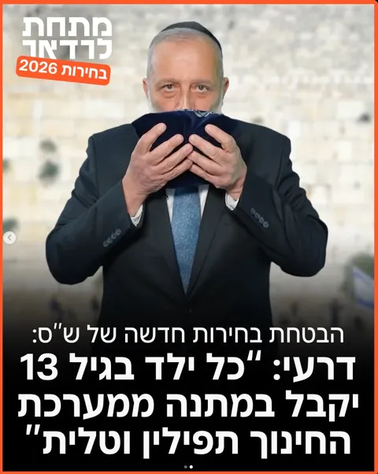
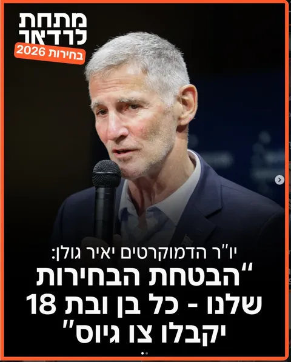
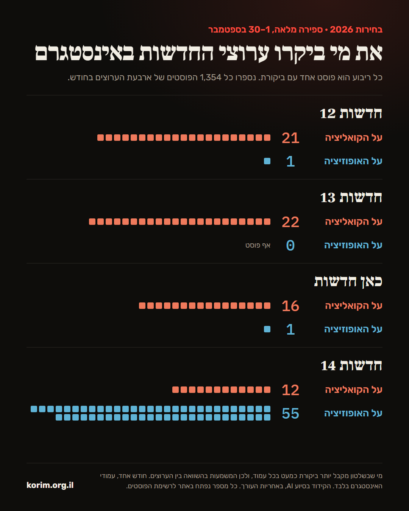
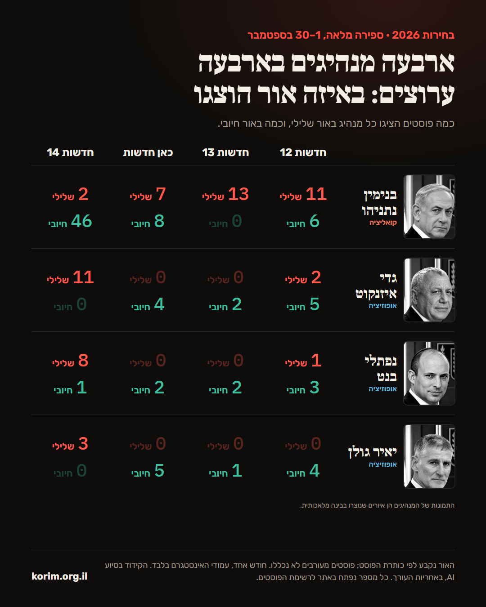

יום שני, 28 בספטמבר 2026גיליון 01 · מיזם לאוריינות תקשורתית
קוראים תקשורת.
בין השורות, מעל הכותרות.
ספרנו כל פוסט של 28 עמודי חדשות באינסטגרם במשך חודש, מיפינו את כלי התקשורת על הקשת, ופירקנו דיווחים עד היסוד. לא כדי להגיד לכם במי לבטוח, אלא כדי שתראו מה העורך ראה לפניכם.
ספירה של פוסטים עם ביקורת על כל צד, 1–30 בספטמבר 2026. פוסט שמציג כשל בלי לייחס אותו לממשלה או לשר לא נספר. בחדשות 14 הביקורת על האופוזיציה כוללת גם את השמאל ורע"ם. ביקורת על הסרט "נז"א" לא נספרה באף עמוד. ההגדרות המלאות בכל ניתוח. הסיווג הוא הבעת דעה של עורכי האתר.
28כלי תקשורת במפה
9,072פוסטים שנספרו וסווגו, ב־28 עמודים
1ספר קוד אחד לכל העמודים
0המלצות למי להצביע
המפה
איפה נתפס כל כלי תקשורת
הציר מתאר את כיוון הנטייה בסיקור, מהאופוזיציה ועד הקואליציה הנוכחית. הוא מתאר מה מופיע בפיד, לא את זהות הכלי. בכלים שבדקנו בניתוח כמותי, המיקום מחושב מהספירה: ממוצע של מאזן הביקורת (את מי הפיד מבקר) ומאזן הבמה (למי הוא נותן במה). בשאר, המיקום הוא הערכה לפי מקורות פומביים. הרשימה מחולקת לפי המעמד הרשמי של כל כלי: מי מממן אותו ומי מפקח עליו. בכלים שבדקנו בניתוח כמותי, הסיווג מתאר נטייה בסיקור ("נטייה בסיקור לכיוון הקואליציה" או "לכיוון האופוזיציה") לפי הספירה, ולא זהות של הכלי, והשאר לפי מקורות פומביים.
מעמד
סוג
קו מערכתי
חיפוש
אופוזיציהבאמצעקואליציה
מתעדכן
ביקורת תקשורת שוטפת
פוסט אחד בכל פעם, מול הספירה של כל החודש. בלי לנחש כוונות: כל משפט כאן הוא עובדה מהפוסט או מספר מהספירה, ומה שאי אפשר לקבוע, כתוב שאי אפשר לקבוע.

שקף 1

שקף 2
מתחת לרדאר · 22.10.2026 · קרוסלה
"דרעי: כל ילד בגיל 13 יקבל במתנה ממערכת החינוך תפילין וטלית"
בחירת סדר היום
מתוך הבטחות הבחירות של ש"ס, העמוד בחר להבליט דווקא את ההבטחה הדתית.
מי מקבל את הבמה
הפוסט עוסק בהבטחה של דרעי, אבל השקף השני כולו של יריבו, יאיר גולן: "הבטחת הבחירות שלנו - כל בן ובת 18 יקבלו צו גיוס". גם הכיתוב נסגר בציוץ של גולן. דרעי מקבל ציטוט, וגולן מקבל שקף שלם והמילה האחרונה. אין בפוסט תגובה של ש"ס לגולן.
התמונה
דרעי מנשק תיק תפילין מול הכותל. ייתכן שזה פריים מסרטון הקמפיין של ש"ס עצמה, וייתכן שנבחר כדי לגחך. מהפוסט אי אפשר לקבוע, ולכן זה לא נספר.
עוד בכיתוב
הביטוי שהפוסט מייחס לגולן, "סילוק הדת מהמרחב הציבורי", מופיע במירכאות בלי מקור.
בשורה התחתונה: הבטחה של דרעי בתוך מסגור שנותן ליריב שלו שקף שלם ואת המילה האחרונה.
איך נספר לפי ספר הקוד: במה לש"ס ולדרעי, במה ליאיר גולן, וביקורת על דרעי דרך הציוץ של גולן.
צילומי מסך מהעמוד מתחת לרדאר באינסטגרם, לצורך ביקורת. העמוד מוזמן להגיב, ותגובתו תפורסם כאן.
עמוד מיוחד · לקראת הבחירות
מסדר הזיהוי
השאלה כאן אינה מי אהוב יותר, אלא על מי עמודי החדשות הכי חלוקים. הקו מעל כל פרצוף נמתח מהעמוד שבו הסיקור שלו היה השלילי ביותר, לפי הקידוד שלנו, ועד העמוד שבו הוא היה המיטיב ביותר. לחצו על פרצוף כדי לראות מי עומד בכל קצה, ואת כל 28 העמודים ביניהם.
הדיוקנאות בעמוד הזה הם איורים שנוצרו בכלי בינה מלאכותית, להמחשה בלבד. הם אינם תצלומים.
הטון נקבע לפי ההשפעה של הפוסט על תדמית הפוליטיקאי, ולא לפי הניסוח, והוא הבעת דעה באחריות העורך. הקידוד נעשה רק בפוסטים פוליטיים, 1–30 בספטמבר 2026, ומספר ההופעות תלוי גם בכמה כל עמוד מפרסם. שני ראשי מפלגות שלא הופיעו באף פוסט אינם מוצגים כאן. הדיוקנאות הם איורים שנוצרו בכלי בינה מלאכותית, ולא תצלומים.
השוואה יומית
אותו יום, פידים שונים
בחרו עד שלושה עמודים ויום בספטמבר, וראו מה כל אחד העלה באותו יום. כך נראית קביעת סדר יום מקרוב: אותה מדינה, אותן 24 שעות, ובחירות שונות של מה חשוב.
ביקורת על הממשלה והקואליציהביקורת על האופוזיציה, השמאל או רע"ם
הסיכומים הם ניסוח של עורכי האתר ולא הכיתוב המקורי, וכל פריט מקשר לפוסט עצמו. הצבע משקף את הקידוד שלנו, והוא הבעת דעה. "רק כאן" מציין נושא רחב שהופיע באותו יום בעמוד אחד ולא באף אחד מהעמודים האחרים שנבחרו. זו אינדיקציה בלבד להשמטה, לא מדידה שלה.
המעבדה
תחפרו בנתונים בעצמכם
9,072 פוסטים מ־28 עמודים, מקודדים לפי אותו ספר קוד. בחרו כלי, ובכל שורה תוכלו לפתוח את הפוסטים עצמם.
מקרא
שלוש קטגוריות של נטייה בסיקור
בכל העמודים במפה, הקטגוריה נקבעת מהספירה בלבד: לאיזה כיוון נוטים הביקורת והבמה בפוסטים. לא לפי תחושה, ולא לפי מה שאומרים על העמוד.
שיטה
על מה ההערכות נשענות
אנחנו משתדלים להראות את העבודה. כל הערכה נשענת על מקורות שאפשר לבדוק, וכל מגבלה כתובה במפורש.
כל ריבוע הוא פוסטכל פוסט מקבל קודהקודים נספרים ומושווים
המחשה, לא נתונים אמיתיים
01
אוספים הכול
כל הפוסטים של עמוד בתקופה מוגדרת, דרך הממשק הרשמי של מטא, לפי סדר הפרסום. לא בוחרים דוגמאות, כדי לא לבחור את התוצאה מראש.
02
מקודדים לפי ספר קוד אחד
כל פוסט מסווג לפי נושא, לפי מי שמבוקר בו ולפי מי שמקבל בו במה. אותן הגדרות בדיוק לכל עמוד, מימין ומשמאל.
03
סופרים ומשווים
רק אחרי הספירה מסתכלים על היחסים. והמגבלה נשארת: מה שלא פורסם לא נספר, ולכן הנתונים מראים מה נבחר, ולא את כל מה שקרה.
אמינות הקידוד
הקידוד באתר נעשה בסיוע כלי בינה מלאכותית, לפי ספר קוד שכתב העורך. רוב הפוסטים קודדו ב־Claude. הימים 28–30 בספטמבר בכל העמודים, וכל הפוסטים של דן עזרא ו־100שטח, קודדו קודם ב־Codex, וכל שורה נבדקה מול הכיתוב ותוקנה. העורך אחראי לכל סיווג באתר. כדי לבדוק את עקביות הקידוד, מדגם של 288 פוסטים מתוך 26 העמודים שנבדקו בשלב הראשון של המיזם (3% מכל עמוד, לפחות 10 ולכל היותר 20) קודד שוב, באופן עצמאי, על ידי מודל שפה שני (Codex), שקיבל את ספר הקוד ואת הכיתוב בלבד ולא ראה את הקידוד הראשון. המדגם כולל רק פוסטים שקודדו בפעם הראשונה ב־Claude. זו הסכמה בין שני מודלים, ולא בין אדם למודל: היא מראה עד כמה ספר הקוד מוביל לאותה תשובה, ואינה מחליפה בדיקה אנושית. העמודים דן עזרא ו־100שטח נוספו אחר כך ולא נכללו במדגם. זו מידת ההסכמה בין שני המקודדים, מעבר למה שהיה מתקבל במקרה:
נושא הפוסט
κ = 0.75
ביקורת: על מי
κ = 0.65
במה: לקואליציה או לאופוזיציה
κ = 0.82
במה: כולל אזרחים וארגונים
κ = 0.26
מקובל לראות בקאפה מעל 0.8 הסכמה גבוהה מאוד, ובין 0.6 ל־0.8 הסכמה טובה, ומתחת ל־0.4 הסכמה חלשה.
הממד הרביעי לא עבר, ואנחנו משאירים אותו כאן גלוי. כששואלים "מי מקבל במה" ומוסיפים לתשובה גם אזרחים וארגונים, ההסכמה צונחת: המקודד השני ראה כמעט כל ציטוט של עד ראייה או של משפחה כבמה, ואנחנו ספרנו רק מקרים שבהם הפוסט נשען על הדובר. ההבדל כמעט כולו בתא הזה, ולכן הקטגוריה "אזרחים, משפחות ואנשי ציבור" שמופיעה בניתוחי העמודים אינה מדידה אמינה, ואין להסיק ממנה. ההפרדה בין קואליציה לאופוזיציה, שעליה נשענים המספרים המרכזיים באתר, דווקא יציבה. ההגדרה תיכתב מחדש והקטגוריה תקודד שוב.
המקורות
הצהרות של כלי התקשורת עצמו: מאמרי מערכת, דברי עורכים ועמוד "מי אנחנו".
מידע פומבי על מבנה הבעלות, כפי שדווח ברשומות ובתקשורת.
סקרי אמון ותפיסת ציבור שפרסמו מכונים וגופי מחקר.
מחקרים אקדמיים וניטור תוכן תקשורתי, כשהם זמינים.
המגבלות
28 העמודים אינם מדגם מייצג של התקשורת בישראל. הם נבחרו כדי לכסות קשת רחבה, אבל אין מאחוריהם הליך דגימה ואין להם משקל לפי גודל הקהל. אפשר ללמוד מהם על כל עמוד בנפרד ועל ההבדלים ביניהם, ולא לגזור מהם ממוצע שמייצג את "התקשורת".
כשמודדים איך מוצגת דמות מסוימת, כל דמות נמדדת על קבוצת עמודים אחרת: אלה שטרחו להזכיר אותה. לכן ממוצע הסיקור של דמות אחת אינו בר־השוואה לזה של דמות אחרת, ובעמוד ראשי המפלגות אנחנו מציגים את הפער בין הקצוות במקום ממוצע.
ציר אחד לא מספר את כל הסיפור. כלי תקשורת יכול להיות ימני בכלכלה ושמאלי בדת ומדינה.
בכל מערכת יש כותבים עם עמדות שונות. ההערכה מתייחסת לתמונה הכוללת.
קווים מערכתיים משתנים עם הזמן, עם החלפת עורכים ובעלים.
יש כאן שיקול דעת של עורכי האתר, ולכן ייתכנו טעויות.
הניתוח סופר את מה שפורסם. מה שמערכת בחרה לא להביא לקהל, שהוא לעיתים ההחלטה החשובה ביותר, קשה למדוד ולהוכיח.
מי שבשלטון מקבל יותר ביקורת, כמעט בכל עמוד. הממשלה מחליטה ומבצעת, ולכן כל כשל, מחדל או החלטה שנויה במחלוקת נזקפים לה. האופוזיציה בעיקר מגיבה, ויש לה פחות החלטות לבקר. לכן עודף ביקורת על הקואליציה הוא נקודת המוצא הצפויה, ואינו כשלעצמו ראיה להטיה. מה שאומר משהו הוא ההשוואה: באותו חודש, מול אותה ממשלה, כמה עמוד אחד סוטה מהאחרים ולאיזה כיוון.
גם הבמה אינה מתחלקת באופן שווה. לשרים יש החלטות, טקסים והודעות רשמיות שמזמינים סיקור, ובחודש של מערכת בחירות כל המפלגות מייצרות יותר תוכן. ספירת הבמה משקפת גם את זה, ולא רק את בחירות העורכים.
העיקרון
קראו שני מקורות, השוו ביניהם, והחליטו בעצמכם.
המפה לא אומרת לכם במי לבטוח. היא עוזרת לבחור מקור שני, מצד אחר של הציר, כדי לראות את אותו אירוע מזווית נוספת.
מאמרים
ניתוחים ומאמרים
מאמרי הסבר קצרים על האופן שבו התקשורת מעצבת את מה שאנחנו רואים, ומה אפשר לעשות עם זה.
כל הפוסטים מ־1 עד 30 בספטמבר 2026, לפי אותו ספר קוד. לחצו על שורה לניתוח המלא.
עמודפוסטיםפוליטיקהביקורת על הקואליציה · על האופוזיציהמדד מאזן הסיקור
ארגז כלים
שש שאלות לשאול על כל ידיעה
חדשות
גורם בכיר: "ההחלטה כבר התקבלה"
01
מי המקור?
גורם בשם, "גורם בכיר" או הודעת דובר. לכל אחד משקל אחר.
חדשות
המהלך הנועז של השר יוצא לדרך
02
ידיעה או דעה?
בדקו אם הטקסט מסומן כפרשנות, טור אישי או מאמר מערכת.
חדשות
העירייה: "המתנ"ס ייסגר בחודש הבא".
תגובת התושבים:
03
מה חסר?
חפשו את הצד שלא קיבל תגובה ואת הנתון שלא הופיע.
חדשות
רעידת אדמה בסקר
בגוף הכתבה: ירידה של מנדט אחד.
04
למה הכותרת?
השוו את הכותרת לגוף הכתבה. לפעמים היא חזקה בהרבה מהתוכן.
שני עיתונים, אותו בוקר
בצומת: מפגינים חסמו כביש
בצומת: אזרחים מחו בשקט
05
מה כתבו אחרים?
קראו את אותו אירוע בשני כלים מצדדים שונים של המפה.
עמוד הבית
06
מה בראש העמוד?
שימו לב אילו ידיעות מקבלות את הכותרת הראשית ואילו נדחקות למטה.
מבחן
כמה פיקחים אתם?
חמש כותרות. בכל אחת מסתתר טריק אחד מתוך מה שתיארנו במאמרים. זהו אותו. הכותרות בדויות, להמחשה בלבד, ולא מתייחסות לאף כלי תקשורת.
דבר העורך
למה פתחתי את "קוראים תקשורת"
דבר העורך ומייסד המיזם החברתי "קוראים תקשורת"
ההחלטה להקים את המיזם החברתי "קוראים תקשורת" לא התקבלה ביום אחד. במשך שנים, כמו רבים אחרים, אני צורך חדשות כמעט מדי יום — לפעמים יותר ולפעמים פחות. ככל שהעמקתי בצריכת החדשות, התחלתי לשים לב לא רק למה שמסוקר, אלא גם למה שבוחרים להבליט, למה שנדחק לשוליים ולפערים שבין נושא אחד לאחר.
לא פעם מצאתי את עצמי תוהה מדוע נושא מסוים זוכה לבמה רחבה ומתמשכת, בעוד נושאים אחרים, שגם להם השפעה משמעותית על חיינו, מקבלים תשומת לב מועטה בהרבה. תהיתי, למשל, מדוע ביקורת כלפי ציבורים מסוימים באוכלוסייה זוכה לעיתים לחשיפה נרחבת, בעוד בעיות אחרות בחברה ובמדינה אינן זוכות לאותו היקף של סיקור.
מתוך השאלות האלה, בין היתר, נולד הרצון לבחון את התקשורת בצורה שיטתית יותר: לא רק לקרוא את החדשות, אלא גם להבין כיצד נקבעת תשומת הלב התקשורתית, אילו נושאים מקבלים מקום מרכזי ואילו נשארים מחוץ לסדר היום.
לצד זאת, מצאתי את עצמי לא פעם מתאכזב ואף כועס כאשר נחשפתי לכלי תקשורת ולעמודי חדשות שבחרו להבליט באופן חוזר נושאים מסוימים, לעיתים בצורה שלתחושתי דווקא מעמיקה מחלוקות ופערים בחברה. לעיתים נדמה כי גם ביום שקט לחלוטין אפשר לייצר "סערה", וכי הרצון למשוך תשומת לב, תגובות ושיתופים עלול לבוא על חשבון מורכבות, הקשר ודיוק. במקרים מסוימים אף נתקלתי בפרסומים שלטעמי התרחקו מהסטנדרטים המצופים מעיתונות אחראית, הן מבחינת דיוק והן מבחינת אחריות ציבורית.
לעיתים נדמה כי גם ביום שקט לחלוטין אפשר לייצר "סערה"
עם זאת, מטרתו של "קוראים תקשורת" אינה לקבוע עבור הציבור איזה גוף תקשורת הוא "טוב" ואיזה "רע", וגם לא לסמן עמוד כזה או אחר. ייתכן בהחלט שדעתכם שונה משלי ב־180 מעלות, וזה לגיטימי לחלוטין. אין בדברים האלה גם טענה שלגוף חדשות אסור להחזיק בתפיסת עולם. להפך: אני מאמין בחשיבותה של חשיפה לדעות שונות, גם ובעיקר לאלו שאיננו מסכימים איתן.
כבוגר תואר ראשון בתקשורת וסטודנט לתואר שני בתקשורת, אני גם מודע לכך שהמושג "תקשורת אובייקטיבית לחלוטין" הוא במידה רבה אידיאל שקשה מאוד לממש. כל מערכת תקשורת בוחרת במה לעסוק, מה להבליט, למי לתת במה ואילו פרטים להציב במרכז. הבחירות האלו הן חלק בלתי נפרד מעבודת התקשורת.
המטרה של "קוראים תקשורת" היא לכן לא להחליט במקומכם מה לחשוב, אלא לאפשר לכם לראות את התמונה הרחבה יותר: לבחון נתונים, לזהות דפוסים, להשוות בין גופי תקשורת ולשאול בעצמכם האם סדר היום שמוצג בפניכם משקף את המציאות כפי שאתם מבינים אותה.
בטווח הארוך, אני שואף ליצור בישראל תרבות שבה אוריינות תקשורתית היא חלק בלתי נפרד מצריכת החדשות, תרבות שבה הציבור אינו מסתפק בכותרת הבודדת, אלא מבקש לראות גם את התמונה הרחבה שמאחוריה, לשאול שאלות ולהביע ביקורת על הניסוח.
אני מאחל לכם שימוש מהנה במיזם.
קנועם אוזןמייסד המיזם החברתי "קוראים תקשורת"בוגר תואר ראשון בתקשורת מהמכללה האקדמית עמק יזרעאל, וסטודנט לתואר שני בתקשורת באוניברסיטת חיפה
שאלות ותשובות
מה שואלים אותנו
איך סופרים, מי סופר, ולמה לסמוך על המספרים. לא מצאתם תשובה? כתבו לנו.
מיזם לאוריינות תקשורתית. אנחנו סופרים כל פוסט של עמודי חדשות באינסטגרם לאורך חודש שלם, ומראים על מי כל עמוד מותח ביקורת ולמי הוא נותן במה. המטרה היא לא להגיד לכם במי לבטוח, אלא לתת לכם כלים לקרוא בעצמכם.
אילו עמודים נבדקו, ולמה דווקא הם?
28 עמודי חדשות באינסטגרם: עמודי הערוצים והאתרים הגדולים, כמו חדשות 12, כאן חדשות, חדשות 14, ynet, הארץ, ישראל היום ו־i24NEWS, לצד עמודי רשת כמו מתחת לרדאר, 0404, פלאש ניוז ו־PUSH, ושני עמודים בערבית. הם נבחרו כדי לכסות קשת רחבה של עמודים פופולריים, ולא כמדגם מייצג של כל התקשורת. הרשימה המלאה במפה.
מי עומד מאחורי האתר?
האתר נכתב ונערך על ידי עורך אחד, מייסד המיזם. הוא אינו קשור לאף כלי תקשורת או מפלגה, ואינו מציג פרסומות. אפשר לקרוא עליו, ועל הסיבה שבגללה הקים את המיזם, בדבר העורך.
02איך סופרים
איך בדיוק נעשית הספירה?
אוספים את כל הפוסטים של כל עמוד מ־1 עד 30 בספטמבר 2026, דרך הממשק הרשמי של מטא, בלי לבחור דוגמאות. כל פוסט מקבל קוד לפי ספר קוד אחד: מה הנושא, מי מבוקר בו ומי מקבל בו במה. רק אחרי הספירה משווים.
מה נחשב "ביקורת"?
פוסט שמייחס כשל, אשמה או מחדל לפוליטיקאי, למפלגה, לממשלה או להחלטה מדינית, במישרין או ברמיזה ברורה לדמות מסוימת. פוסט שמציג כשל בלי לייחס אותו לאף אחד, כמו יוקר המחיה או פקקים, מוצג בניתוח אבל לא נספר כביקורת.
מה נחשב "במה"?
פוסט שבו הדברים או הפעילות של פוליטיקאי מגיעים לקוראים: ציטוט, הודעה, נאום, יוזמה. פוליטיקאי שרק מוזכר בשמו לא נספר, וגם לא הישג של משרד בלי ייחוס לשר. פוסט שסומן "בשיתוף" לא נספר כבמה.
מי קידד את הפוסטים? בינה מלאכותית?
כן, ואנחנו אומרים את זה במפורש. הקידוד נעשה בסיוע כלי בינה מלאכותית (Claude ו־Codex), לפי ספר קוד שכתב העורך, והעורך אחראי לכל סיווג. כדי לבדוק עקביות, מדגם קודד שוב על ידי מודל שני שלא ראה את הקידוד הראשון. הפרטים, כולל הממד שלא עבר את הבדיקה, נמצאים בשיטה.
מה אומר המיקום של עמוד על הציר?
הוא מסכם את מאזן הביקורת והבמה בפוסטים של העמוד, על סולם מ־5 לכיוון האופוזיציה עד 5 לכיוון הקואליציה. העמוד מוצג כטווח ולא כנקודה, כי בספירה של חודש אחד יש אי־ודאות, ובעמודים עם מעט פוסטים פוליטיים הטווח רחב יותר.
03הוגנות
"נטייה בסיקור" אומר שהעמוד מזוהה עם צד?
לא. זה תיאור של מה שהעמוד פרסם בחודש אחד: על מי הופנתה רוב הביקורת ולמי ניתנה רוב הבמה. זו לא קביעה שהעמוד מזוהה עם צד, מייצג אותו או פועל מטעמו.
רוב העמודים מבקרים את הממשלה. האתר נגד הממשלה?
אותם כללים בדיוק חלים על שני הצדדים, ובמפה יש עמודים משני צדי הציר. אבל חשוב לדעת: מי שבשלטון מקבל יותר ביקורת כמעט בכל עמוד, כי הממשלה מחליטה ומבצעת, והאופוזיציה בעיקר מגיבה. לכן עודף ביקורת על הקואליציה הוא נקודת המוצא הצפויה, ומה שאומר משהו הוא ההשוואה בין העמודים באותו חודש.
מה קורה כשאתם טועים?
מתקנים, ומתעדים. כל שינוי במיקום, בסיווג או בנתון נכתב ביומן התיקונים, גם כשהטעות שלנו וגם כשמצאנו אותה בעצמנו.
כן, ונשמח. כתבו לנו, ותגובת העמוד תצורף לניתוח שלו באתר. זה נכון גם לכרטיסי הביקורת השוטפת.
האתר אוסף עליי מידע?
כמעט לא. אין עוגיות מעקב ואין פרסומות. ספירת הכניסות נעשית ב־GoatCounter, בלי עוגיות ובלי לשמור את כתובת ה־IP, ומציגה לנו רק סיכומים. בקשת תיקון נשלחת מתוכנת הדואר שלכם, והאתר עצמו לא שומר אותה. הפרטים המלאים בתקנון.
תקנון ותנאי שימוש
תקנון האתר
בקצרה: הנתונים באתר, כמו אילו פוסטים פורסמו, מתי ומה נכתב בהם, נבדקו, וכל פוסט מקושר למקור. הסיווגים והמיקומים הם הערכה של עורכי האתר, שנעשתה בתום לב ועל סמך מידע פומבי, ולא קביעה עובדתית או טענה נגד אף כלי תקשורת או עיתונאי. מצאתם טעות? ספרו לנו.
התקנון נכתב בלשון זכר מטעמי נוחות בלבד ופונה לכל המגדרים. השימוש באתר מהווה הסכמה לתנאים.
1מהות האתר
האתר "קוראים תקשורת" הוא מיזם מידע וחינוך לאוריינות תקשורתית. מטרתו לעודד קריאה ביקורתית ומגוונת של חדשות. האתר אינו מדרג את איכות העבודה העיתונאית של כלי התקשורת, ואינו ממליץ לצרוך או להימנע מצריכה של כלי תקשורת כלשהו.
2נתונים, ופרשנות שהיא הבעת דעה
באתר יש שני סוגים של תוכן. הראשון הוא נתונים: אילו פוסטים פורסמו, מתי ומה נכתב בהם, כמה פוסטים נספרו, ומידע פומבי על בעלות. את אלה אנחנו בודקים, וכל פוסט מקושר למקור. השני הוא פרשנות: הסיווג של כל פוסט לפי ספר הקוד, המיקום על הציר, הטון והתיאורים.
הפרשנות היא הבעת דעה והערכה של עורכי האתר, הנעשות בתום לב, על סמך מידע פומבי ובעניין ציבורי. אין לראות בה קביעה עובדתית, ממצא מחקרי מחייב או טענה כלפי אדם, עיתונאי או תאגיד כלשהו.
שיוך כלי תקשורת למקום כלשהו על הציר אינו טענה שכלי התקשורת מפרסם מידע כוזב, מטעה או לא מקצועי, שהוא פועל בשירות גורם כלשהו, או שעובדיו פועלים שלא בתום לב.
הסיווג "נטייה בסיקור" נקבע מהספירה של הפוסטים בלבד, ואינו טענה של האתר לגבי כוונות כלי התקשורת או זהותו.
3דיוק המידע ועדכונו
עורכי האתר עושים מאמץ סביר לדייק, אך אינם מתחייבים שהמידע מלא, מדויק או עדכני. פרטי בעלות ונתונים עובדתיים מובאים כפי שדווחו בפומבי במועד העדכון המצוין לצד כל כלי תקשורת, וייתכן שהשתנו מאז.
4זכות תגובה ובקשת תיקון
כל כלי תקשורת, עיתונאי או גולש רשאי לבקש תיקון, עדכון או הוספת תגובה באמצעות טופס בקשת התיקון. פנייה על טעות עובדתית תיבדק בתוך 48 שעות, ועד לבירור הקטע הרלוונטי יסומן "בבדיקה". שאר הפניות ייבחנו בתוך 14 ימי עבודה. אם הפנייה תימצא מוצדקת, המידע יתוקן. אם לא, ניתן יהיה לצרף את עמדת הפונה לדף הרלוונטי, לפי שיקול דעת העורכים.
יומן התיקונים יפורסם באתר לשם שקיפות.
5סימני מסחר ושמות
שמות כלי התקשורת וסימני המסחר שלהם שייכים לבעליהם ומוזכרים באתר לצורך זיהוי בלבד. אין בהם כדי להעיד על קשר, חסות או אישור מצד בעלי הסימנים. סמלילים (לוגואים) של כלי תקשורת מוצגים בגודל קטן, ללא שינוי, לצורך זיהוי בלבד. בעל זכויות בסמליל רשאי לבקש את הסרתו, והוא יוסר.
6היעדר אחריות
המידע באתר מוגש "כמות שהוא" (AS IS). עורכי האתר לא יישאו באחריות לנזק ישיר או עקיף הנובע מהסתמכות על המידע באתר. אין באמור כדי לגרוע מהתחייבותם לבחון בקשות תיקון בתום לב.
7קישורים חיצוניים
האתר עשוי לכלול קישורים לאתרים של צדדים שלישיים. עורכי האתר אינם אחראים לתוכן המתפרסם בהם.
8פרטיות
האתר אינו אוסף מידע אישי מלבד הפרטים שמוזנים מרצון בטופס בקשת התיקון. הפרטים ישמשו רק לטיפול בפנייה ולא יועברו לצד שלישי, אלא אם הדין מחייב זאת. האתר אינו מפעיל כלי פרסום, אינו יוצר פרופיל משתמש ואינו שותל עוגיות. ערעור על קידוד נשמר בשרת של Cloudflare, ומוגן בבדיקת Turnstile של Cloudflare נגד שליחה אוטומטית. כתובת ה־IP אינה נשמרת, אלא רק טביעה מוצפנת שמתחלפת כל יום ומשמשת להגבלת כמות הערעורים. לספירת כניסות הוא משתמש ב־GoatCounter, שסופר צפיות בעמודים בלי עוגיות ובלי לשמור את כתובת ה־IP שלכם, ומציג לנו רק סיכומים: כמה נכנסו, לאיזה עמוד, מאיזה אתר הגיעו, מאיזו מדינה ומאיזה סוג מכשיר. העדפות תצוגה, כמו מצב קריאה ביקורתית או בחירת עמודים בכלי "הדיאטה שלי", נשמרות בדפדפן שלכם בלבד ואינן מגיעות אלינו. הפונטים נטענים משרת של Google Fonts, שרואה את כתובת ה־IP שלכם כמו בכל אתר שמשתמש בו. פניות בנושא פרטיות, כולל בקשה לעיין במידע שמסרתם או למחוק אותו: editor@korim.org.il.
9שינויים בתקנון
עורכי האתר רשאים לעדכן את התקנון מעת לעת. הנוסח המחייב הוא הנוסח המפורסם באתר במועד השימוש.
10דין וסמכות שיפוט
על השימוש באתר יחולו דיני מדינת ישראל. סמכות השיפוט הבלעדית נתונה לבתי המשפט המוסמכים במחוז חיפה.
11נגישות
אנחנו פועלים כדי שהאתר יהיה נגיש לכל מי שקורא אותו: הוא בנוי בעברית מימין לשמאל, עם כותרות מסודרות, ונבדק במחשב ובטלפון ובמצב כהה ובהיר. ייתכן שחלקים ממנו, כמו המפה והגרפים האינטראקטיביים, עדיין אינם נגישים במלואם. נתקלתם בקושי? כתבו לנו דרך טופס הפניות, ונשתדל לטפל בכך או להנגיש לכם את המידע בדרך אחרת. ההצהרה עודכנה ב־13 באוקטובר 2026.
עדכון אחרון: 22 באוקטובר 2026 · מפעיל האתר: עורך המיזם "קוראים תקשורת"
זכות תגובה
חושבים שטעינו?
כתבו לנו. אנחנו מעדיפים לתקן מאשר להיות צודקים.
כל פנייה נקראת ונבדקת על ידי עורך.
תיקונים מתועדים ביומן פומבי.
נציגי כלי תקשורת יכולים לצרף תגובה לפרופיל.
שקיפות
יומן תיקונים
כל שינוי במיקום, בסיווג או בנתון יתועד כאן: מה השתנה, למה ובעקבות מי. גם טעויות שלנו.
—
איך נראה תיקון כאן.
כל תיקון מתועד בפורמט הזה: תאריך, הדף שתוקן, מה היה, מה נכון עכשיו ועל סמך מה. גם תיקון שיזמנו בעצמנו וגם תיקון בעקבות פנייה.
25.10.2026
19 עמודים חוזרים למפה, אחרי בדיקה חוזרת
לפני שהחזרנו את עמודי הערוצים והאתרים, עברנו שוב על הקידוד שלהם לפי הכללים שנקבעו מאז: מ־13.10 כשל בלי ייחוס אינו נספר כביקורת, ומ־18.10 נספרת כבמה רק פעילות או דברים של פוליטיקאי. 152 שורות תוקנו. למשל, "תגובה" שהייתה בפועל מתקפה נספרת עכשיו כבמה; שבחים של עיתונאים ומנהיגים זרים לנתניהו כבר לא נספרים כבמה לממשלה; ותיאור של חשוד פלילי כ"ערבי" כבר לא נספר בטעות כביקורת על האופוזיציה. המספרים, המיקומים והניסוחים במפה עודכנו בהתאם. כך, בוכרא וערב 48 עברו מ"נטייה לכיוון האופוזיציה" ל"לא נמצאה נטייה מובהקת", וערוץ 7 מ"נטייה לכיוון הקואליציה" ל"לא נמצאה נטייה מובהקת". בנוסף, מאזן שנשען על פחות משלושה פוסטים כבר לא נכנס לחישוב המיקום: בערב 48 פוסט אחד של במה היה מזיז את העמוד אל הצד השני של הציר. לתשעת העמודים שהיו באתר עד היום זה לא שינה דבר.
תוקן ביוזמת המערכת
24.10.2026
כל העמודים · ביקורת על שרה נתניהו אינה נספרת עוד כביקורת על הקואליציה
שרה נתניהו אינה נבחרת ציבור ואינה מכהנת בתפקיד ממשלתי, ולכן ביקורת עליה, וגם דבריה שלה, לא נספרים עוד לאף אחד מהמחנות. פוסט שמבקר את "בנימין ושרה נתניהו" יחד עדיין נספר, כי הוא מבקר גם את ראש הממשלה. השינוי הוריד את מספר הפוסטים עם ביקורת על הממשלה והקואליציה במתחת לרדאר מ־85 ל־82, בישראלים מ־45 ל־41 ובדניאל עמרם מ־20 ל־18. המיקום של העמודים על הציר כמעט לא השתנה.
תוקן ביוזמת המערכת
22.10.2026
ראשי מפלגות · בדיקה חוזרת של הטון (מיטיב / פוגע)
עברנו שוב על כל 605 האזכורים של פוליטיקאים בתשעת העמודים, כל אחד מול הכיתוב שלו, ותיקנו 36. בעמוד 100שטח 21 אזכורים קודדו בערך שאינו קיים בספר הקוד, ולכן לא נספרו כלל. רובם הודעות ותגובות של איזנקוט, בנט, לפיד, ליברמן, נתניהו, כ"ץ ודרעי. הם קודדו מחדש כמו אותם אירועים בעמודים האחרים. בנוסף תיקנו סימונים הפוכים: אצל מתחת לרדאר, הפוסט על עליית מחיר הדלק לשיא, אחרי ההוזלה הזמנית שחתם בצלאל סמוטריץ', סומן "מיטיב" ותוקן ל"פוגע". פוסט "בשיתוף כחול לבן" הוצא מהספירה. בגרסה הראשונה של הבדיקה, שפורסמה באותו יום, תשעה אזכורים שונו בטעות לפי גוף הכיתוב ולא לפי הכותרת שעל הפוסט, כמו "כלכלת בחירות?" על הורדת מחיר הדלק. ספר הקוד קובע שהכותרת מכריעה, והם הוחזרו לסימון המקורי. אף מגמה לא התהפכה. למשל, נתניהו עבר מ־36 אזכורים מיטיבים ו־144 פוגעים ל־39 ו־145, וסמוטריץ' מ־6 ו־9 ל־5 ו־11.
תוקן ביוזמת המערכת
18.10.2026
כל העמודים · מה נספר כבמה
הגדרנו מחדש מה נספר כבמה, לפי מה שכתוב בפוסט ובלי לנחש את כוונת העורך: במה היא פוסט שבו הדברים או הפעילות של פוליטיקאי מגיעים לקוראים. פוליטיקאי שרק מוזכר, הישג של משרד או רשות בלי ייחוס לשר או לממשלה, ומי שאינו דמות פוליטית, לא נספרים. בדיקה של 334 שורות במה הוציאה 8 מהספירה, כולן בצד הקואליציה, למשל נתוני מנהלת תקומה ויום הקולנוע של משרד התרבות. כך הסימטריה נשמרת: כשל של משרד בלי ייחוס כבר לא נספר נגד הקואליציה, ולכן גם הישג של משרד בלי ייחוס לא נספר לטובתה. אצל מתחת לרדאר הבמה לקואליציה ירדה מ־6 ל־4, אצל 100שטח מ־5 ל־3, אצל PUSH מ־36 ל־34 ואצל פלאש ניוז מ־15 ל־14.
תוקן ביוזמת המערכת
13.10.2026
כל העמודים · כשלים בלי ייחוס אינם נספרים עוד כביקורת על הקואליציה
עד היום, פוסט שהציג כשל של המדינה, כמו מבחני פיז"ה, יוקר המחיה או מחסור במורים, נספר כביקורת על הקואליציה גם כשלא ייחס את הכשל לאף אחד. זה מדד שרק הצד ששולט יכול להיכשל בו. מעכשיו נספרת רק ביקורת שמייחסת את הכשל לממשלה, לשר או להחלטה מדינית, או שרומזת בבירור לדמות מסוימת. שאר הכשלים מוצגים בניתוחים, אבל לא נספרים. עברנו על 75 שורות: 16 יצאו מהספירה, ו־3 שבהן הייחוס כתוב בפוסט נכנסו אליה. המספרים ירדו, למשל אצל מתחת לרדאר מ־107 ל־85 פוסטים עם ביקורת על הקואליציה, מול 1 על האופוזיציה, ואצל PUSH מ־40 ל־31. המיקום במפה זז לכל היותר בחצי נקודה.
תוקן ביוזמת המערכת, בעקבות בדיקה משפטית
12.10.2026
כל העמודים · הודעות של מפלגות ופוסטים "בשיתוף"
מצאנו שתי טעויות בכלל הספירה. פוסטים מסוג "הודעה" (הודעה של מפלגה או של גורם פוליטי שהעמוד פרסם כלשונה) נספרו כבמה לאופוזיציה גם כשלא הזכירו אף גורם מהאופוזיציה. מעכשיו הודעה נספרת כבמה רק לצד שהיא מזכירה, והודעה שאינה מזכירה אף צד לא נספרת. בנוסף, פוסטים שסומנו "בשיתוף" נספרו כבמה, אף שבניתוחים כתבנו שאינם נספרים. עכשיו הם לא נספרים. המספרים בניתוחים ובמפה עודכנו. למשל, אצל דניאל עמרם הבמה לאופוזיציה ירדה מ־28 ל־26, ואצל news.0nline מ־23 ל־22.
תוקן ביוזמת המערכת
12.10.2026
מתחת לרדאר · ביקורת על האופוזיציה
בכותרת ובכמה מקומות בניתוח נכתב שאין בעמוד אף פוסט עם ביקורת על האופוזיציה, לפי הספירה של 1–27 בספטמבר. בספירה המלאה של 30 הימים נמצא פוסט אחד כזה, והמספרים עודכנו ל־107 פוסטים עם ביקורת על הקואליציה מול 1 על האופוזיציה.
תוקן ביוזמת המערכת
30.09.2026
ישראלים · מי מפעיל את העמוד
כתבנו שהעמוד אינו מציין מי מפעיל אותו. בבדיקה חוזרת מול הביוגרפיה בעמוד עצמו התברר שהוא כן מציין: "עמוד החדשות והאקטואליה מבית @erevtov", כלומר מבית התוכנית "ערב טוב עם גיא פינס" המשודרת בקשת 12. הפרט נוסף לכרטיס במפה ולניתוח.
תוקן ביוזמת המערכת
30.09.2026
news.0nline · מי מפעיל את העמוד
כתבנו שהעמוד אינו מציין מי מפעיל אותו. הביוגרפיה בעמוד מציינת "מקבוצת @pishpeshuk" ומפנה פניות עסקיות לאתר pishpeshuk.digital. הפרט נוסף לכרטיס במפה ולניתוח.
תוקן ביוזמת המערכת
30.09.2026
מתחת לרדאר · השלמת הספירה
ספירת העמוד נבדקה מול הממשק הרשמי של מטא. התברר שחסרו 6 פוסטים מהתקופה, ובהם סרטון שפורסם שלוש פעמים בתוך שתי דקות. הם קודדו ונוספו: 313 פוסטים הפכו ל־319, והביקורת על הממשלה והקואליציה עלתה מ־94 ל־97. מיקום העמוד במפה כמעט לא זז.
ספרנו את כל 537 הפוסטים שחדשות 14 פרסמו באינסטגרם בין 1 ל־30 בספטמבר 2026. שאלנו על מה העמוד מדבר, את מי הוא מבקר ומי מקבל ממנו במה.
מערכת קוראים תקשורתניתוח תוכן537 פוסטים, 1–30 בספטמבר 2026
על הנתונים. כל הפוסטים של התקופה נאספו דרך הממשק הרשמי של מטא (Graph API), כך שהספירה מלאה. הסיווג נעשה בסיוע כלי בינה מלאכותית, לפי הכיתוב של כל פוסט ולפי אותן הגדרות שבהן אנחנו בודקים כל עמוד, ובאחריות העורך. הוא הבעת דעה. הטקסט שעל גבי התמונות והסרטונים לא נכלל בסיווג.
537פוסטים במשך 30 ימים
226/537עוסקים בפוליטיקה, בבחירות, ב־7 באוקטובר או בדת ומדינה (42%)
55פוסטים עם ביקורת על האופוזיציה, השמאל או רע"ם
12פוסטים עם ביקורת על פוליטיקאים מהקואליציה, רובם על יריבויות בתוך הימין
את מי מבקריםמספר פוסטים. פוסט יכול להיכלל ביותר מקטגוריה אחת.
השמאל, רע"ם והציבור הערבי30
פוליטיקאים מהאופוזיציה30
בתי המשפט, רשויות האכיפה, הנשיא והתקשורת34
פוליטיקאים מהקואליציה (בעיקר יריבויות בתוך הימין)12
כשלים שהוצגו בלי ייחוס (לא נספרו)0
מי מקבל במהמספר פוסטים שבהם הדמות או המפלגה מצוטטת בהרחבה, מוצגת באור חיובי או מקבלת סיקור של הודעותיה
אנשי הקואליציה, באור חיובי או מצוטטים בהרחבה68
הודעות על רשימות: קואליציה23
תוכן אישי־רך על אנשי הקואליציה5
הודעות על רשימות: אופוזיציה4
פוליטיקאים מהאופוזיציה, באור חיובי1
סדר היום של העמוד
על מה ערוץ 14 דיבר בחודש הנבדק, לפי הנושא המרכזי של כל אחד מ־537 הפוסטים. הנושא המוביל: בחירות ומפלגות, 29% מהפוסטים.
45% פוליטיקה, משפט וכלכלה20% ביטחון, טרור ופשיעה35% חו"ל, חברה, תרבות ולייף
בחירות ומפלגותהנושא המוביל29%155 פוסטים
לייף, בידור וספורט17%93 פוסטים
ביטחון ולחימה10%55 פוסטים
חו"ל ואנטישמיות10%53 פוסטים
דת, מדינה וחרדים7%38 פוסטים
פיגועים וטרור7%35 פוסטים
7 באוקטובר ואחריות4%22 פוסטים
פשיעה ומשטרה4%19 פוסטים
הסרט "נז"א" והסערה סביבו3%15 פוסטים
שאר הנושאים10%52 פוסטים
מי הוצג באור מיטיב, ומי באור פוגע
מיטיבפוגע
בנימין נתניהוקואליציהבמה ב־32 פוסטים · 5 מעורב462
עופר וינטרקואליציהבמה ב־7 פוסטים · 1 מעורב124
איתמר בן גבירקואליציהבמה ב־5 פוסטים121
גדי איזנקוטאופוזיציה1 מעורב011
יעקב ברדוגוקואליציהבמה ב־6 פוסטים110
בצלאל סמוטריץ'קואליציהבמה ב־4 פוסטים · 1 מעורב90
נפתלי בנטאופוזיציה18
טלי גוטליבקואליציה52
מיטיב או פוגע: לפי ההשפעה של הפוסט על התדמית של הפוליטיקאי, ולא לפי הניסוח. גם דיווח "יבש" נספר: ציטוט שלו בלי הקשר מאתגר נחשב מיטיב, והאשמה או חשיפה נגדו נחשבות פוגעות, גם בלי מילה של העמוד. מעורב: יש בפוסט גם מתקפה וגם תגובה שלו במשקל דומה. אזכורים שוליים ופוסטים שסומנו "בשיתוף" לא נספרו. מוצגים פוליטיקאים עם שני אזכורים לפחות. בבדיקה חוזרת של 64 אזכורים שנבחרו באקראי, בלי שם העמוד, 63 סווגו כמו בפעם הראשונה (בדיקה של אותו מקודד, לא של מקודד נוסף).
כשהם מופיעים: יוזמים או מגיבים
אנשי הקואליציה88% יוזמים (84 מתוך 96)
יוזם: החדשות הן אמירה, יוזמה או פעולה שלומגיב: מופיע בתגובה להאשמה, לחשיפה או לאירוע של אחרים
בחירת מילים
איך נקרא השטח17 יהודה ושומרון0 השטחים0 הגדה המערבית
איך נקראים התושבים היהודים שם9 מתיישבים / התיישבות0 מתנחלים / התנחלויות
מספר הפוסטים שבהם העמוד השתמש בכל מינוח, בקול שלו ולא בתוך ציטוט. כל שורה מציגה מינוחים חלופיים לאותו דבר, ואנחנו לא משייכים אף מינוח למחנה. המספרים קטנים, ולכן זו אינדיקציה ולא מדד חזק. מוצגים רק מושגים שהופיעו בשלושה פוסטים לפחות.
איך סיווגנו: הנושאים "בחירות", "7 באוקטובר", "דת ומדינה", "התיישבות", "כלכלה" ו"לייף" נקבעו בקידוד הידני. שאר הפוסטים חולקו לפי רשימת מילות מפתח קבועה, זהה לכל העמודים, ונבדקו אחד־אחד. אירוע שהעמוד עצמו הציג כפיגוע סווג כ"פיגועים וטרור", ואירוע שהוצג כאירוע פלילי סווג כ"פשיעה".
מה בולט
במה לראש הממשלה31 פוסטים הציגו את נתניהו באור חיובי או הביאו את דבריו בהרחבה, כולל כעשרה פוסטים מנאומו באו"ם.
"גרסת נתניהו" ל־7 באוקטוברסדרה של 5 פוסטים הביאה את גרסת ראש הממשלה בפני מבקר המדינה. מתוך 22 פוסטים על 7 באוקטובר, אף אחד לא מתח עליו ביקורת.
קמפיין נגד "נז"א"13 פוסטים תקפו את יוצרי הסרט, חלקם בלשון חריפה במיוחד ("עלילת דם", "בוגדים", "צריך לרדוף אותם"). ביקורת על הסרט לא נספרה בהשוואה בין הקואליציה לאופוזיציה.
מתקפה על מוסדות34 פוסטים מתחו ביקורת על בג"ץ, היועמ"ש, המשטרה, ועדת הבחירות, הנשיא ותקשורת אחרת.
איזנקוט ורע"ם במוקד10 פוסטים ביקרו את גדי איזנקוט, ו־17 עסקו בביקורת על רע"ם, על ח"כים ערבים או על הציבור הערבי.
מהאולפן לרשימה11 פוסטים עסקו ביעקב ברדוגו, פרשן הערוץ שהצטרף לרשימת הליכוד, חלקם תוכן אישי קליל.
דת ומסורת32 פוסטים הציגו תוכן דתי באור חיובי: סליחות בכותל, תפילות, מסורת החגים.
ביקורת בתוך הימין12 פוסטים ביקרו אנשי קואליציה: ההחלטה של עופר וינטר לרוץ לבד, משוריינים בליכוד, יו"ר הכנסת ובן גביר.
קידום עצמי ופרסוםכ־26 פוסטים קידמו תוכניות של הערוץ או סומנו "בשיתוף".
מה המספרים לא מראים
הניתוח הזה סופר את מה שעלה לפיד. אבל ההחלטה החשובה ביותר של כל מערכת היא מה להביא לקהל, ולא פחות מזה, מה לא להביא. ידיעה שלא פורסמה לא משאירה עקבות, ולכן אי אפשר לספור אותה ולא קל להוכיח שהיא נעדרה.
כך, למשל, הספירה מראה שכמעט לא היו כאן פוסטים שמבקרים את ראש הממשלה, אבל היא לא מראה אילו ידיעות על הממשלה לא עלו לפיד כלל. גם כאשר נושא סוקר, כמו האזהרה מהאמירויות לפני 7 באוקטובר, השאלה היא מאיזו זווית: דרך הדיווח עצמו, או דרך הביקורת על מי שפרסם אותו.
הדרך החלקית למדוד את זה היא להשוות: לבנות רשימה של הידיעות המרכזיות בכל יום, מכמה כלי תקשורת, ולבדוק אילו מהן כל עמוד הביא ואילו השמיט. עד שנעשה את זה, כדאי לקרוא את הנתונים כאן כתמונה של מה שנבחר, ולא של כל מה שקרה.
טבלת הקידוד
כל שורה היא פוסט אחד, לפי סדר הפרסום. תיאור הפוסט מנוסח בידי עורכי האתר. אפשר לגלול בתוך הטבלה.
טבלת הקידוד נטענת…
ניתוח תוכן והבעת דעה של מערכת האתר, על סמך פוסטים שפורסמו בפומבי. אין בו טענה לגבי כוונות העורכים של חדשות 14. המערכת מוזמנת לשלוח תגובה או בקשת תיקון דרך הטופס.
ספרנו את כל 373 הפוסטים שחדשות 12 פרסמו באינסטגרם בין 1 ל־30 בספטמבר 2026. שאלנו על מה העמוד מדבר, את מי הוא מבקר, במישרין או בעקיפין, ומי מקבל ממנו במה.
מערכת קוראים תקשורתניתוח תוכן373 פוסטים, 1–30 בספטמבר 2026
על הנתונים. כל הפוסטים של התקופה נאספו דרך הממשק הרשמי של מטא (Graph API), כך שהספירה מלאה. הסיווג נעשה בסיוע כלי בינה מלאכותית, לפי הכיתוב של כל פוסט ולפי אותן הגדרות שבהן אנחנו בודקים כל עמוד, ובאחריות העורך. הוא הבעת דעה. הטקסט שעל גבי התמונות לא נכלל בסיווג.
373פוסטים במשך 30 ימים
69/373עוסקים בפוליטיקה, בבחירות, ב־7 באוקטובר או בדת ומדינה (18%)
21פוסטים עם ביקורת על הממשלה והקואליציה: 18 במישרין, ו־3 ברמיזה לדמות מסוימת
1פוסט עם ביקורת על פוליטיקאי מהאופוזיציה (ציטוט של ליברמן נגד איזנקוט)
את מי מבקריםמספר פוסטים. כשל בלי ייחוס: ידיעה שמציגה כשל או בעיה בלי לייחס אותם לממשלה או לשר. ידיעות כאלה מוצגות כאן, אבל לא נספרו כביקורת על הקואליציה.
בנימין נתניהו, רעייתו והממשלה15
שרים ואנשי ימין אחרים6
כשלים שהוצגו בלי ייחוס (לא נספרו)5
קיצוניות דתית והציבור החרדי6
פוליטיקאים מהאופוזיציה1
השמאל (יוצר הסרט "נז"א")0
מי מקבל במהמספר פוסטים שבהם הדמות או הגוף מצוטטים בהרחבה, מוצגים באור חיובי או מקבלים סיקור של הודעותיהם
פוליטיקאים מהאופוזיציה, באור חיובי5
הודעות על רשימות: אופוזיציה6
הודעות על רשימות: קואליציה5
תגובות ונאומים של ראש הממשלה וגורמים רשמיים2
ידיעות חיוביות על פעולות הממשלה0
ארגונים ואנשים מחוץ לפוליטיקה2
סדר היום של העמוד
על מה N12 דיבר בחודש הנבדק, לפי הנושא המרכזי של כל אחד מ־373 הפוסטים. הנושא המוביל: לייף, בידור וספורט, 26% מהפוסטים.
19% פוליטיקה, משפט וכלכלה20% ביטחון, טרור ופשיעה61% חו"ל, חברה, תרבות ולייף
לייף, בידור וספורטהנושא המוביל26%96 פוסטים
חו"ל ואנטישמיות19%72 פוסטים
ביטחון ולחימה9%35 פוסטים
בחירות ומפלגות9%33 פוסטים
חברה, חינוך ותקשורת7%26 פוסטים
פשיעה ומשטרה7%25 פוסטים
7 באוקטובר ואחריות5%20 פוסטים
אחר5%17 פוסטים
פיגועים וטרור4%14 פוסטים
שאר הנושאים9%35 פוסטים
מי הוצג באור מיטיב, ומי באור פוגע
מיטיבפוגע
בנימין נתניהוקואליציהבמה ב־6 פוסטים · 3 מעורב611
גדי איזנקוטאופוזיציהבמה ב־3 פוסטים52
נפתלי בנטאופוזיציה1 מעורב31
יאיר גולןאופוזיציהבמה ב־3 פוסטים40
יאיר לפידאופוזיציה30
יועז הנדלאופוזיציה12
איתמר בן גבירקואליציה20
טלי גוטליבקואליציה20
מיטיב או פוגע: לפי ההשפעה של הפוסט על התדמית של הפוליטיקאי, ולא לפי הניסוח. גם דיווח "יבש" נספר: ציטוט שלו בלי הקשר מאתגר נחשב מיטיב, והאשמה או חשיפה נגדו נחשבות פוגעות, גם בלי מילה של העמוד. מעורב: יש בפוסט גם מתקפה וגם תגובה שלו במשקל דומה. אזכורים שוליים ופוסטים שסומנו "בשיתוף" לא נספרו. מוצגים פוליטיקאים עם שני אזכורים לפחות. בבדיקה חוזרת של 64 אזכורים שנבחרו באקראי, בלי שם העמוד, 63 סווגו כמו בפעם הראשונה (בדיקה של אותו מקודד, לא של מקודד נוסף).
כשהם מופיעים: יוזמים או מגיבים
אנשי הקואליציה88% יוזמים (14 מתוך 16)
אנשי האופוזיציה69% יוזמים (9 מתוך 13)
יוזם: החדשות הן אמירה, יוזמה או פעולה שלומגיב: מופיע בתגובה להאשמה, לחשיפה או לאירוע של אחרים
בחירת מילים
איך נקרא השטח5 יהודה ושומרון1 השטחים0 הגדה המערבית
איך נקראים התושבים היהודים שם1 מתיישבים / התיישבות4 מתנחלים / התנחלויות
מספר הפוסטים שבהם העמוד השתמש בכל מינוח, בקול שלו ולא בתוך ציטוט. כל שורה מציגה מינוחים חלופיים לאותו דבר, ואנחנו לא משייכים אף מינוח למחנה. המספרים קטנים, ולכן זו אינדיקציה ולא מדד חזק. מוצגים רק מושגים שהופיעו בשלושה פוסטים לפחות.
איך סיווגנו: הנושאים "בחירות", "7 באוקטובר", "דת ומדינה", "התיישבות", "כלכלה" ו"לייף" נקבעו בקידוד הידני. שאר הפוסטים חולקו לפי רשימת מילות מפתח קבועה, זהה לכל העמודים, ונבדקו אחד־אחד. אירוע שהעמוד עצמו הציג כפיגוע סווג כ"פיגועים וטרור", ואירוע שהוצג כאירוע פלילי סווג כ"פשיעה".
מה בולט
פיד שרובו לא פוליטי304 מתוך 373 הפוסטים הם חדשות כלליות, סיפורים אנושיים, ספורט ותרבות. הפוליטיקה תופסת פחות מחמישית מהפיד.
ישראל בעיני העולםכ־45 פוסטים עסקו באנטישמיות, בחרמות ובתדמית של ישראל בחו"ל: מקלמור, נבחרת אירלנד, הסרט "נז"א", עצרות תמיכה בישראל.
שכול וגבורהכ־20 פוסטים הוקדשו לחללים, לפצועים ולמשפחותיהם, רובם בנימה אישית ומחזקת.
חשיפות על ראש הממשלהביקורת על נתניהו הופיעה בעיקר סביב 7 באוקטובר: הדברים של רעייתו על יאיר גולן והאזהרה מהאמירויות, לעיתים בפרסום ראשון של החדשות עצמן.
שני הגושים בהודעותהודעות הרשימות של הקואליציה (5) ושל האופוזיציה (6) סוקרו בהיקף דומה, ונאום ראש הממשלה באו"ם קיבל שני פוסטים.
הניתוח הזה סופר את מה שעלה לפיד. אבל ההחלטה החשובה ביותר של כל מערכת היא מה להביא לקהל, ולא פחות מזה, מה לא להביא. ידיעה שלא פורסמה לא משאירה עקבות, ולכן אי אפשר לספור אותה ולא קל להוכיח שהיא נעדרה.
כך, למשל, עמוד שבוחר להציף את הפיד בסיפורים אנושיים ובידיעות מחו"ל יכול להיראות "מאוזן" בספירה, רק מפני שהוא עוסק מעט בפוליטיקה. וגם בתוך הפוליטיקה, השאלה אילו פרשות נבחרו, ואילו לא עלו כלל, חשובה לא פחות מהאופן שבו סוקרו אלה שעלו.
הדרך החלקית למדוד את זה היא להשוות: לבנות רשימה של הידיעות המרכזיות בכל יום, מכמה כלי תקשורת, ולבדוק אילו מהן כל עמוד הביא ואילו השמיט. עד שנעשה את זה, כדאי לקרוא את הנתונים כאן כתמונה של מה שנבחר, ולא של כל מה שקרה.
טבלת הקידוד
כל שורה היא פוסט אחד, לפי סדר הפרסום. תיאור הפוסט מנוסח בידי עורכי האתר. אפשר לגלול בתוך הטבלה.
טבלת הקידוד נטענת…
ניתוח תוכן והבעת דעה של מערכת האתר, על סמך פוסטים שפורסמו בפומבי. אין בו טענה לגבי כוונות העורכים של חדשות 12. המערכת מוזמנת לשלוח תגובה או בקשת תיקון דרך הטופס.
ספרנו את כל 366 הפוסטים שהעמוד פרסם בין 1 ל־30 בספטמבר 2026, ברצף ובלי לבחור. שאלנו על מה העמוד מדבר, את מי הוא מבקר, במישרין או בעקיפין, ומי מקבל ממנו במה.
מערכת קוראים תקשורתניתוח תוכן366 פוסטים, 1–30 בספטמבר 2026
על הנתונים. הספירה כוללת את כל הפוסטים שנמסרו לנו מהתקופה, לפי סדר הפרסום, כולל פוסטים שאינם פוליטיים. הסיווג נעשה בסיוע כלי בינה מלאכותית, על סמך הכיתוב והטקסט שעל התמונה, ובאחריות העורך. הוא הבעת דעה. שלושה סרטונים ללא כיתוב לא סווגו. בבדיקה חוזרת מול הממשק הרשמי של מטא, ב־12.10.2026, לא נמצא בעמוד פוסט מהתקופה שלא נכלל בספירה.
366פוסטים ברצף, במשך 30 ימים
200/366עוסקים בפוליטיקה, בבחירות, ב־7 באוקטובר או בדת ומדינה (55%)
82פוסטים עם ביקורת על הממשלה והקואליציה: 74 במישרין, ו־8 ברמיזה לדמות מסוימת
1פוסט עם ביקורת על פוליטיקאי מהאופוזיציה, שבו ח"כ מהאופוזיציה קורא לפסול ח"כ אחר מהאופוזיציה
את מי מבקריםמספר פוסטים. כשל בלי ייחוס: ידיעה שמציגה כשל או בעיה בלי לייחס אותם לממשלה או לשר. ידיעות כאלה מוצגות כאן, אבל לא נספרו כביקורת על הקואליציה. "+": רמז לדמות מסוימת.
בנימין נתניהו והממשלה44+8
שרים ואנשי ימין אחרים30
כשלים שהוצגו בלי ייחוס (לא נספרו)21
הציבור החרדי והקיצוניות הדתית17
מתנחלים4
פוליטיקאים מהאופוזיציה1
מי מקבל במהמספר פוסטים שבהם הדמות או המפלגה מצוטטת בהרחבה, מוצגת באור חיובי או מקבלת סיקור של הודעותיה
פוליטיקאים מהאופוזיציה, באור חיובי30
הודעות על רשימות ואיחודים: אופוזיציה10
תוכן אישי־רך על מועמדי אופוזיציה4
ארגונים ופעילים אזרחיים12
תגובות של הקואליציה או גורמים רשמיים11
הודעות על רשימות ואיחודים: קואליציה3
הממשלה או הקואליציה, באור חיובי0
סדר היום של העמוד
על מה מתחת לרדאר דיבר בחודש הנבדק, לפי הנושא המרכזי של כל אחד מ־366 הפוסטים. הנושא המוביל: בחירות ומפלגות, 28% מהפוסטים.
56% פוליטיקה, משפט וכלכלה15% ביטחון, טרור ופשיעה29% חו"ל, חברה, תרבות ולייף
בחירות ומפלגותהנושא המוביל28%102 פוסטים
7 באוקטובר ואחריות13%49 פוסטים
פשיעה ומשטרה9%33 פוסטים
לייף, בידור וספורט9%33 פוסטים
דת, מדינה וחרדים8%30 פוסטים
חברה, חינוך ותקשורת6%21 פוסטים
ביטחון ולחימה5%20 פוסטים
חו"ל ואנטישמיות5%20 פוסטים
תאונות, אסונות ובריאות5%17 פוסטים
שאר הנושאים11%41 פוסטים
מי הוצג באור מיטיב, ומי באור פוגע
מיטיבפוגע
בנימין נתניהוקואליציהבמה ב־3 פוסטים · 2 מעורב150
גדי איזנקוטאופוזיציהבמה ב־7 פוסטים100
נפתלי בנטאופוזיציהבמה ב־8 פוסטים90
יאיר לפידאופוזיציהבמה ב־5 פוסטים70
איתמר בן גבירקואליציה1 מעורב06
יאיר גולןאופוזיציהבמה ב־6 פוסטים60
בצלאל סמוטריץ'קואליציה06
יונתן שלואופוזיציהבמה ב־4 פוסטים40
מיטיב או פוגע: לפי ההשפעה של הפוסט על התדמית של הפוליטיקאי, ולא לפי הניסוח. גם דיווח "יבש" נספר: ציטוט שלו בלי הקשר מאתגר נחשב מיטיב, והאשמה או חשיפה נגדו נחשבות פוגעות, גם בלי מילה של העמוד. מעורב: יש בפוסט גם מתקפה וגם תגובה שלו במשקל דומה. אזכורים שוליים ופוסטים שסומנו "בשיתוף" לא נספרו. מוצגים פוליטיקאים עם שני אזכורים לפחות. בבדיקה חוזרת של 64 אזכורים שנבחרו באקראי, בלי שם העמוד, 63 סווגו כמו בפעם הראשונה (בדיקה של אותו מקודד, לא של מקודד נוסף).
כשהם מופיעים: יוזמים או מגיבים
אנשי הקואליציה80% יוזמים (16 מתוך 20)
אנשי האופוזיציה74% יוזמים (26 מתוך 35)
יוזם: החדשות הן אמירה, יוזמה או פעולה שלומגיב: מופיע בתגובה להאשמה, לחשיפה או לאירוע של אחרים
איך סיווגנו: הנושאים "בחירות", "7 באוקטובר", "דת ומדינה", "התיישבות", "כלכלה" ו"לייף" נקבעו בקידוד הידני. שאר הפוסטים חולקו לפי רשימת מילות מפתח קבועה, זהה לכל העמודים, ונבדקו אחד־אחד. אירוע שהעמוד עצמו הציג כפיגוע סווג כ"פיגועים וטרור", ואירוע שהוצג כאירוע פלילי סווג כ"פשיעה".
גיבורים ואשמים
כך הוצגו הדמויות המרכזיות בפוסטים הפוליטיים.
מוצגים באור חיובי או מקבלים במה
נפתלי בנט ומפלגת "ביחד": 17 פוסטים, כולל תוכנית לקהילה הגאה, התחייבות לחוקה וסרטון אישי
גדי איזנקוט ו"ישר!": הודעות על מצטרפים, רשימה, ציטוטים נגד נתניהו
יאיר גולן: במרכז הסכסוך עם שרה נתניהו
יאיר לפיד, יונתן שלו, נאור שירי וח"כ מירב כהן
ארגונים אזרחיים: "קומו", "ישראל חופשית", "התעוררות"
מוצגים באור ביקורתי
בנימין ושרה נתניהו: 49 פוסטים, כולל סרטון "הבטחות מול מציאות"
שרים מהקואליציה: סמוטריץ', בן גביר, אליהו, זוהר, שיקלי
אנשי ימין נוספים: גוטליב, פייגלין, עוצמה יהודית, פרשן בערוץ 14
הציבור החרדי והקיצוניות הדתית: 17 פוסטים
מתנחלים: 4 פוסטים
פוליטיקאים מהאופוזיציה: פוסט אחד, ובו יואב סגלוביץ' (יש עתיד) קורא לפסול את סמי אבו שחאדה (בל"ד) מהבחירות
טכניקות הצגה שזיהינו
עטיפה חדשותית162 מתוך 366 הפוסטים הם חדשות כלליות, צרכנות ולייפסטייל. זה יוצר תדמית של אתר חדשות רגיל, שבתוכה משולבים התכנים הפוליטיים.
כשלים בלי ייחוס21 פוסטים מציגים כשלים בתפקוד המדינה: המחסור בשוטרים, מבחני פיז"ה, יוקר הדיור, הפשיעה. הם לא מייחסים את הכשל לממשלה או לשר, ולכן לא נספרו כביקורת על הקואליציה. פוסט על תקציב הביטחון, שבו נכתב שהממשלה לא מאשרת את התוספת, כן נספר.
סאגות מתמשכותחשיפת האזהרה מהאמירויות לנתניהו קיבלה לפחות 8 פוסטים לאורך החודש. הסכסוך בין גולן לשרה נתניהו קיבל 5 פוסטים.
פלילים עם הקשר דתי6 ידיעות על אלימות או הדרה מצד קיצונים דתיים: ילד שהותקף ביום כיפור, רוצח שירה בנקי, מד"א בביתר עילית, בקבוק שהושלך על בנט. כל אחת נכונה, והבחירה העקבית בהן בונה תדמית.
תוכן אישי־רךסרטונים קלילים על מועמדים ("למה בנט כבר לא לובש חליפות?", "איזה תפקיד לפיד רוצה?"). כל 4 הסרטונים מהסוג הזה עסקו במועמדי אופוזיציה.
ציטוט תקיפה ככותרתדברי תקיפה של פוליטיקאים מהאופוזיציה מוגשים ככותרת הראשית. אצל שרי הקואליציה, הכותרת היא לרוב האמירה הבעייתית שלהם עצמם.
תוויות בסגנון חדשותי"מבזק", "בארץ", "בחירות 2026", "מה הקטע?". טורי דעה מסומנים "דעה", אבל שאר התוכן מוצג כחדשות.
מה לא מצאנו
ביקורת על האופוזיציה מחוץ לה. הפוסט היחיד שבו פוליטיקאי מהאופוזיציה מוצג באור שלילי מביא קריאה של ח"כ מהאופוזיציה לפסול ח"כ אחר מהאופוזיציה.
אף פוליטיקאי מהקואליציה שהוצג באור חיובי. הפוסט החיובי היחיד שעסק בממשלה הביא נתונים של מנהלת תקומה, בלי ייחוס לשר או לממשלה, ולכן לא נספר כבמה.
אף סרטון אישי־רך על מועמד מהקואליציה.
בפוסטים שנבדקו לא מצאנו גילוי נאות על זהות מפעילי העמוד או על זיקה פוליטית. גם הביוגרפיה של העמוד, כפי שנבדקה ב־12.10.2026, מציגה אותו רק כ"גוף התקשורת של הצעירים בישראל".
לזכות העמוד
כמחצית מהפוסטים הם מידע שימושי ולא פוליטי: אזהרות בריאות, מידע לבוחר, צרכנות. בחלק מהפוסטים הפוליטיים הובאה גם עמדת הצד השני: מכתב נתניהו ל"הארץ", תגובת דובר צה"ל לסרט "נז"א", אישור לשכת ראש הממשלה, תשובת שרה נתניהו לגולן. העמוד דיווח גם על הרשימות של הליכוד והציונות הדתית, על נאום נתניהו באו"ם, על הפיגוע בבנימין ועל נתוני הצמיחה בעוטף, ופרסם סרטון נגד "שקרים על ישראל באו"ם". הפוסטים נשענים בדרך כלל על דיווחים של כלי תקשורת מוכרים. הביקורת כאן אינה על דיוק הידיעות. היא על הבחירה העקבית את מי לבקר ואת מי להשמיע.
טבלת הקידוד
כל שורה היא פוסט אחד, לפי סדר הפרסום. תיאור הפוסט מנוסח בידי עורכי האתר. אפשר לגלול בתוך הטבלה.
טבלת הקידוד נטענת…
ניתוח תוכן והבעת דעה של מערכת האתר, על סמך פוסטים שפורסמו בפומבי. אין בו טענה לגבי כוונות מפעילי העמוד או זהותם. מפעילי העמוד מוזמנים לשלוח תגובה או בקשת תיקון דרך הטופס.
ספרנו את כל 183 הפוסטים שהעמוד flash_news_il פרסם באינסטגרם בין 1 ל־30 בספטמבר 2026. שאלנו על מה העמוד מדבר, את מי הוא מבקר ומי מקבל ממנו במה.
מערכת קוראים תקשורתניתוח תוכן183 פוסטים, 1–30 בספטמבר 2026
על הנתונים. כל הפוסטים של התקופה נאספו דרך הממשק הרשמי של מטא (Graph API), כך שהספירה מלאה. הסיווג נעשה בסיוע כלי בינה מלאכותית, לפי הכיתוב של כל פוסט ולפי אותן הגדרות שבהן אנחנו בודקים כל עמוד, ובאחריות העורך. הוא הבעת דעה. הטקסט שעל גבי התמונות והסרטונים לא נכלל בסיווג.
183פוסטים במשך 30 ימים
31/183עוסקים בפוליטיקה, בבחירות, ב־7 באוקטובר או בדת ומדינה (17%)
6פוסטים עם ביקורת על האופוזיציה, השמאל או אנשים מהציבור הערבי
1פוסט עם ביקורת משתמעת על הממשלה והקואליציה
את מי מבקריםמספר פוסטים. פוסט יכול להיכלל ביותר מקטגוריה אחת.
השמאל ואנשים מהציבור הערבי4
פוליטיקאים מהאופוזיציה (גדי איזנקוט)2
היועמ"שית, בתי המשפט ורשויות האכיפה4
פוליטיקאים מהקואליציה1
כשלים שהוצגו בלי ייחוס (לא נספרו)1
מי מקבל במהמספר פוסטים שבהם הדמות או המפלגה מצוטטת בהרחבה, מוצגת באור חיובי או מקבלת סיקור של הודעותיה
אנשי הקואליציה, באור חיובי או מצוטטים בהרחבה9
הודעות של מפלגות הקואליציה5
פוליטיקאים מהאופוזיציה, באור חיובי0
הודעות של מפלגות האופוזיציה0
סדר היום של העמוד
על מה פלאש ניוז דיבר בחודש הנבדק, לפי הנושא המרכזי של כל אחד מ־183 הפוסטים. הנושא המוביל: לייף, בידור וספורט, 21% מהפוסטים.
20% פוליטיקה, משפט וכלכלה27% ביטחון, טרור ופשיעה53% חו"ל, חברה, תרבות ולייף
לייף, בידור וספורטהנושא המוביל21%38 פוסטים
חו"ל ואנטישמיות15%28 פוסטים
ביטחון ולחימה15%27 פוסטים
פיגועים וטרור7%12 פוסטים
בחירות ומפלגות6%11 פוסטים
פשיעה ומשטרה6%11 פוסטים
תאונות, אסונות ובריאות6%11 פוסטים
חברה, חינוך ותקשורת6%11 פוסטים
דת, מדינה וחרדים3%6 פוסטים
שאר הנושאים15%28 פוסטים
מי הוצג באור מיטיב, ומי באור פוגע
מיטיבפוגע
בנימין נתניהוקואליציהבמה ב־4 פוסטים · 1 מעורב30
איתמר בן גבירקואליציה20
ישראל כ"ץקואליציהבמה ב־3 פוסטים20
מיטיב או פוגע: לפי ההשפעה של הפוסט על התדמית של הפוליטיקאי, ולא לפי הניסוח. גם דיווח "יבש" נספר: ציטוט שלו בלי הקשר מאתגר נחשב מיטיב, והאשמה או חשיפה נגדו נחשבות פוגעות, גם בלי מילה של העמוד. מעורב: יש בפוסט גם מתקפה וגם תגובה שלו במשקל דומה. אזכורים שוליים ופוסטים שסומנו "בשיתוף" לא נספרו. מוצגים פוליטיקאים עם שני אזכורים לפחות. בבדיקה חוזרת של 64 אזכורים שנבחרו באקראי, בלי שם העמוד, 63 סווגו כמו בפעם הראשונה (בדיקה של אותו מקודד, לא של מקודד נוסף).
כשהם מופיעים: יוזמים או מגיבים
אנשי הקואליציה73% יוזמים (8 מתוך 11)
יוזם: החדשות הן אמירה, יוזמה או פעולה שלומגיב: מופיע בתגובה להאשמה, לחשיפה או לאירוע של אחרים
בחירת מילים
איך נקרא השטח4 יהודה ושומרון0 השטחים0 הגדה המערבית
מספר הפוסטים שבהם העמוד השתמש בכל מינוח, בקול שלו ולא בתוך ציטוט. כל שורה מציגה מינוחים חלופיים לאותו דבר, ואנחנו לא משייכים אף מינוח למחנה. המספרים קטנים, ולכן זו אינדיקציה ולא מדד חזק. מוצגים רק מושגים שהופיעו בשלושה פוסטים לפחות.
איך סיווגנו: הנושאים "בחירות", "7 באוקטובר", "דת ומדינה", "התיישבות", "כלכלה" ו"לייף" נקבעו בקידוד הידני. שאר הפוסטים חולקו לפי רשימת מילות מפתח קבועה, זהה לכל העמודים, ונבדקו אחד־אחד. אירוע שהעמוד עצמו הציג כפיגוע סווג כ"פיגועים וטרור", ואירוע שהוצג כאירוע פלילי סווג כ"פשיעה".
מה בולט
רוב הפיד אינו פוליטי114 מתוך 183 פוסטים הם חדשות כלליות, ביטחון וחו"ל, ו־38 נוספים הם תוכן אנושי, ספורט וסרטונים ויראליים. רק 17% עוסקים בפוליטיקה.
כשיש ביקורת, רובה בכיוון אחד6 פוסטים מבקרים את האופוזיציה, את השמאל או אנשים מהציבור הערבי. רק שניים מעלים ביקורת על הממשלה, ושניהם בעקיפין: "ברשת תהו" על שר הבריאות, ודיווח על עליית מחיר הדלק.
במה לצד אחד14 פוסטים נותנים במה לאנשי קואליציה, בהם נתניהו, בן גביר, שר הביטחון, איציק בונצל ויוסף חדאד. פוליטיקאים מהאופוזיציה לא קיבלו במה באף פוסט.
קמפיין נגד "נז"א"5 פוסטים תקפו את הסרט או את יוצריו, בהם גרפיטי תחת הכותרת "יריקה הם לא שווים". ביקורת על הסרט לא נספרה בהשוואה בין הקואליציה לאופוזיציה.
הדגשת מוצאב־3 פוסטים מוצאו הערבי של המעורב היה חלק מתיאור האירוע: פקח באוטובוס, מורה באור עקיבא וצעירים בעכו. בסיפור האוטובוס העמוד הביא גם את הקריאה הגזענית שקדמה לעימות.
כותרת שסותרת את הידיעהעל הדריסה בחדרה נכתב בכותרת "פיגוע מושתק?", אף שבגוף אותה ידיעה נכתב שהשב"כ שלל רקע לאומני. זו דוגמה לשאלה בכותרת שמשאירה רושם שהידיעה עצמה לא תומכת בו.
ערוץ 16שלושה פוסטים הביאו תוכן של "חדשות 16" או "ערוץ 16", ואחד מהם בישר על התרחבות הערוץ לממירים נוספים. לא מצאנו בפוסטים גילוי על קשר בין העמוד לערוץ.
תוכן בשיתוף מפלגהפוסט אחד סומן "בשיתוף עמך ישראל": סרטון של עופר וינטר נגד גדי איזנקוט. לזכות העמוד, השיתוף סומן.
לזכות העמודרוב הידיעות החדשותיות מנוסחות באופן עניינתי ועם קרדיט לצילום. ציטוט של משה רדמן על גבולות השיח הובא במלואו, כולל ההסתייגות שלו מתמיכה בטרור.
מה המספרים לא מראים
הניתוח הזה סופר את מה שעלה לפיד. אבל ההחלטה החשובה ביותר של כל מערכת היא מה להביא לקהל, ולא פחות מזה, מה לא להביא. ידיעה שלא פורסמה לא משאירה עקבות, ולכן אי אפשר לספור אותה ולא קל להוכיח שהיא נעדרה.
הדרך החלקית למדוד את זה היא להשוות: לבדוק אילו ידיעות הופיעו באותו יום בעמודים אחרים ולא כאן. את זה אפשר לעשות בעצמכם בהשוואה היומית. עד שנמדוד את זה באופן שיטתי, כדאי לקרוא את הנתונים כאן כתמונה של מה שנבחר, ולא של כל מה שקרה.
טבלת הקידוד
כל שורה היא פוסט אחד, לפי סדר הפרסום. תיאור הפוסט מנוסח בידי עורכי האתר. אפשר לגלול בתוך הטבלה.
טבלת הקידוד נטענת…
ניתוח תוכן והבעת דעה של מערכת האתר, על סמך פוסטים שפורסמו בפומבי. אין בו טענה לגבי כוונות מפעילי העמוד flash_news_il, זהותם או מקורות המימון שלהם מעבר למה שסומן בפוסטים עצמם. מפעילי העמוד מוזמנים לשלוח תגובה או בקשת תיקון דרך הטופס.
ספרנו את כל 345 הפוסטים שהעמוד israelim.il פרסם באינסטגרם בין 1 ל־30 בספטמבר 2026. שאלנו על מה העמוד מדבר, את מי הוא מבקר ומי מקבל ממנו במה.
מערכת קוראים תקשורתניתוח תוכן345 פוסטים, 1–30 בספטמבר 2026
על הנתונים. כל הפוסטים של התקופה נאספו דרך הממשק הרשמי של מטא (Graph API), כך שהספירה מלאה. הסיווג נעשה בסיוע כלי בינה מלאכותית, לפי הכיתוב של כל פוסט ולפי אותן הגדרות שבהן אנחנו בודקים כל עמוד, ובאחריות העורך. הוא הבעת דעה. הטקסט שעל גבי התמונות והסרטונים לא נכלל בסיווג.
345פוסטים במשך 30 ימים
124/345עוסקים בפוליטיקה, בבחירות, ב־7 באוקטובר או בדת ומדינה (36%)
41פוסטים עם ביקורת על הממשלה והקואליציה
4פוסטים עם ביקורת על האופוזיציה או השמאל
את מי מבקריםמספר פוסטים. פוסט יכול להיכלל ביותר מקטגוריה אחת.
ראש הממשלה והדרג המדיני24
שרים ופוליטיקאים מהקואליציה17
כשלים שהוצגו בלי ייחוס (לא נספרו)8
בל"ד והרשימה המשותפת3
פוליטיקאים מהאופוזיציה1
מי מקבל במהמספר פוסטים שבהם הדמות או המפלגה מצוטטת בהרחבה, מוצגת באור חיובי או מקבלת סיקור של הודעותיה
פוליטיקאים ומפלגות מהאופוזיציה27
הודעות של מפלגות האופוזיציה2
אנשי הקואליציה, באור חיובי או מצוטטים בהרחבה10
תגובות והודעות של הקואליציה7
תוכן אישי־רך על אנשי הקואליציה1
סדר היום של העמוד
על מה ישראלים דיבר בחודש הנבדק, לפי הנושא המרכזי של כל אחד מ־345 הפוסטים. הנושא המוביל: בחירות ומפלגות, 19% מהפוסטים.
38% פוליטיקה, משפט וכלכלה27% ביטחון, טרור ופשיעה35% חו"ל, חברה, תרבות ולייף
בחירות ומפלגותהנושא המוביל19%65 פוסטים
ביטחון ולחימה12%40 פוסטים
חו"ל ואנטישמיות11%38 פוסטים
פשיעה ומשטרה11%37 פוסטים
7 באוקטובר ואחריות10%36 פוסטים
לייף, בידור וספורט10%36 פוסטים
תאונות, אסונות ובריאות7%23 פוסטים
פיגועים וטרור5%16 פוסטים
דת, מדינה וחרדים5%16 פוסטים
שאר הנושאים11%38 פוסטים
מי הוצג באור מיטיב, ומי באור פוגע
מיטיבפוגע
בנימין נתניהוקואליציהבמה ב־7 פוסטים · 6 מעורב329
גדי איזנקוטאופוזיציהבמה ב־9 פוסטים · 1 מעורב190
נפתלי בנטאופוזיציהבמה ב־3 פוסטים111
יאיר גולןאופוזיציהבמה ב־5 פוסטים · 3 מעורב60
יאיר לפידאופוזיציהבמה ב־6 פוסטים · 1 מעורב70
אביגדור ליברמןאופוזיציה41
איתמר בן גבירקואליציה13
בצלאל סמוטריץ'קואליציהבמה ב־1 פוסטים · 1 מעורב12
מיטיב או פוגע: לפי ההשפעה של הפוסט על התדמית של הפוליטיקאי, ולא לפי הניסוח. גם דיווח "יבש" נספר: ציטוט שלו בלי הקשר מאתגר נחשב מיטיב, והאשמה או חשיפה נגדו נחשבות פוגעות, גם בלי מילה של העמוד. מעורב: יש בפוסט גם מתקפה וגם תגובה שלו במשקל דומה. אזכורים שוליים ופוסטים שסומנו "בשיתוף" לא נספרו. מוצגים פוליטיקאים עם שני אזכורים לפחות. בבדיקה חוזרת של 64 אזכורים שנבחרו באקראי, בלי שם העמוד, 63 סווגו כמו בפעם הראשונה (בדיקה של אותו מקודד, לא של מקודד נוסף).
כשהם מופיעים: יוזמים או מגיבים
אנשי הקואליציה75% יוזמים (15 מתוך 20)
אנשי האופוזיציה93% יוזמים (38 מתוך 41)
יוזם: החדשות הן אמירה, יוזמה או פעולה שלומגיב: מופיע בתגובה להאשמה, לחשיפה או לאירוע של אחרים
בחירת מילים
חרדים שלא מתגייסים0 לא מתגייסים3 משתמטים3 עריקים
מספר הפוסטים שבהם העמוד השתמש בכל מינוח, בקול שלו ולא בתוך ציטוט. כל שורה מציגה מינוחים חלופיים לאותו דבר, ואנחנו לא משייכים אף מינוח למחנה. המספרים קטנים, ולכן זו אינדיקציה ולא מדד חזק. מוצגים רק מושגים שהופיעו בשלושה פוסטים לפחות.
איך סיווגנו: הנושאים "בחירות", "7 באוקטובר", "דת ומדינה", "התיישבות", "כלכלה" ו"לייף" נקבעו בקידוד הידני. שאר הפוסטים חולקו לפי רשימת מילות מפתח קבועה, זהה לכל העמודים, ונבדקו אחד־אחד. אירוע שהעמוד עצמו הציג כפיגוע סווג כ"פיגועים וטרור", ואירוע שהוצג כאירוע פלילי סווג כ"פשיעה".
מה בולט
7 באוקטובר והאחריות36 פוסטים עסקו ב־7 באוקטובר. 15 מהם הביאו ביקורת על נתניהו, רובם דרך תחקירים של "הארץ", "ניו יורק טיימס", "ידיעות אחרונות" ו"כאן", ועוד 4 עסקו בדברי שרה נתניהו על יאיר גולן.
במה לאופוזיציה29 פוסטים נתנו במה לפוליטיקאים ולמפלגות מהאופוזיציה, בהם איזנקוט, בנט, לפיד וגולן, מול 18 לאנשי הקואליציה, כולל תגובות של נתניהו.
פוסטים שסומנו "בשיתוף"10 פוסטים סומנו "פרסום בשיתוף". 6 מהם של "יוזמת המאה" ו־2 של "ישראל חופשית", ארגונים אזרחיים, בנושאי דת ומדינה, גיוס וסקרי מצב רוח. לזכות העמוד, כולם סומנו.
מסגור בכותרותניסוחים כמו "מוסיפה שמן למדורה" (על שרה נתניהו), "ממזערים נזקים?" (על שריון בליכוד), "זהו יו"ר ועדת הכספים שלכם", "ברוב האוטומטי של הקואליציה" ו"בתקופת בן גביר" מכוונים את הקורא עוד לפני הידיעה עצמה.
"נז"א" מחוץ לספירה5 פוסטים הביאו ביקורת על הסרט "נז"א", בעיקר מפי שורדי שבי ודובר צה"ל. הם לא נספרו בהשוואה בין הקואליציה לאופוזיציה.
דת ומדינה16 פוסטים בנושא. רובם ביקורתיים כלפי מפגינים חרדים, רבנים ודרישות תקציביות, ולצדם פוסט שהציג באור חיובי את לוחמי החטיבה החרדית.
נשען על דיווחים של אחריםהעמוד מקרדט את המקורות שלו לעתים קרובות: "הארץ", חדשות 12, ynet, כאן, חדשות 13 וגם ערוץ 14.
לזכות העמודאת תחקיר ה"אטלנטיק" הביא עם ההסתייגות שלא נקבע מי קיבל את האזהרה ועם הכחשת לשכת רה"מ. בעימות בין בן כספית לאלי גולדשמידט ציטט את שני הצדדים. את הדריסה בחדרה תיאר לפי גרסת המשטרה, כאירוע פלילי.
מה המספרים לא מראים
הניתוח הזה סופר את מה שעלה לפיד. אבל ההחלטה החשובה ביותר של כל מערכת היא מה להביא לקהל, ולא פחות מזה, מה לא להביא. ידיעה שלא פורסמה לא משאירה עקבות, ולכן אי אפשר לספור אותה ולא קל להוכיח שהיא נעדרה.
הדרך החלקית למדוד את זה היא להשוות: לבדוק אילו ידיעות הופיעו באותו יום בעמודים אחרים ולא כאן. את זה אפשר לעשות בעצמכם בהשוואה היומית. עד שנמדוד את זה באופן שיטתי, כדאי לקרוא את הנתונים כאן כתמונה של מה שנבחר, ולא של כל מה שקרה.
טבלת הקידוד
כל שורה היא פוסט אחד, לפי סדר הפרסום. תיאור הפוסט מנוסח בידי עורכי האתר. אפשר לגלול בתוך הטבלה.
טבלת הקידוד נטענת…
ניתוח תוכן והבעת דעה של מערכת האתר, על סמך פוסטים שפורסמו בפומבי. אין בו טענה לגבי כוונות מפעילי העמוד israelim.il, זהותם או מקורות המימון שלהם מעבר למה שסומן בפוסטים עצמם. מפעילי העמוד מוזמנים לשלוח תגובה או בקשת תיקון דרך הטופס.
ספרנו את כל 288 הפוסטים שהעמוד kan_news פרסם באינסטגרם בין 1 ל־30 בספטמבר 2026. שאלנו על מה העמוד מדבר, את מי הוא מבקר ומי מקבל ממנו במה.
מערכת קוראים תקשורתניתוח תוכן288 פוסטים, 1–30 בספטמבר 2026
על הנתונים. כל הפוסטים של התקופה נאספו דרך הממשק הרשמי של מטא (Graph API), כך שהספירה מלאה. הסיווג נעשה בסיוע כלי בינה מלאכותית, לפי הכיתוב של כל פוסט ולפי אותן הגדרות שבהן אנחנו בודקים כל עמוד, ובאחריות העורך. הוא הבעת דעה. הטקסט שעל גבי התמונות והסרטונים לא נכלל בסיווג.
288פוסטים במשך 30 ימים
61/288עוסקים בפוליטיקה, בבחירות, ב־7 באוקטובר או בדת ומדינה (21%)
16פוסטים עם ביקורת על הממשלה והקואליציה: 15 במישרין, ו־1 ברמיזה לדמות מסוימת
1פוסט אחד עם ביקורת על האופוזיציה או השמאל
את מי מבקריםמספר פוסטים. פוסט יכול להיכלל ביותר מקטגוריה אחת.
ראש הממשלה, רעייתו והממשלה10
שרים ופוליטיקאים מהקואליציה6
כשלים שהוצגו בלי ייחוס (לא נספרו)4
האופוזיציה והשמאל1
מי מקבל במהמספר פוסטים שבהם הדמות או המפלגה מצוטטת בהרחבה, מוצגת באור חיובי או מקבלת סיקור של הודעותיה
אנשי הקואליציה והודעות מפלגותיה12
תגובות של נתניהו ולשכתו7
פוליטיקאים ומפלגות מהאופוזיציה7
סדר היום של העמוד
על מה כאן חדשות דיבר בחודש הנבדק, לפי הנושא המרכזי של כל אחד מ־288 הפוסטים. הנושא המוביל: לייף, בידור וספורט, 19% מהפוסטים.
22% פוליטיקה, משפט וכלכלה28% ביטחון, טרור ופשיעה51% חו"ל, חברה, תרבות ולייף
לייף, בידור וספורטהנושא המוביל19%55 פוסטים
חו"ל ואנטישמיות17%50 פוסטים
פשיעה ומשטרה12%34 פוסטים
ביטחון ולחימה9%27 פוסטים
בחירות ומפלגות9%25 פוסטים
7 באוקטובר ואחריות8%23 פוסטים
פיגועים וטרור7%19 פוסטים
תאונות, אסונות ובריאות6%16 פוסטים
חברה, חינוך ותקשורת5%14 פוסטים
שאר הנושאים9%25 פוסטים
מי הוצג באור מיטיב, ומי באור פוגע
מיטיבפוגע
בנימין נתניהוקואליציהבמה ב־12 פוסטים · 5 מעורב87
יאיר גולןאופוזיציהבמה ב־4 פוסטים · 1 מעורב50
גדי איזנקוטאופוזיציה2 מעורב40
איתמר בן גבירקואליציה1 מעורב22
בצלאל סמוטריץ'קואליציהבמה ב־1 פוסטים · 1 מעורב12
טלי גוטליבקואליציה20
יאיר לפידאופוזיציה20
נפתלי בנטאופוזיציה20
מיטיב או פוגע: לפי ההשפעה של הפוסט על התדמית של הפוליטיקאי, ולא לפי הניסוח. גם דיווח "יבש" נספר: ציטוט שלו בלי הקשר מאתגר נחשב מיטיב, והאשמה או חשיפה נגדו נחשבות פוגעות, גם בלי מילה של העמוד. מעורב: יש בפוסט גם מתקפה וגם תגובה שלו במשקל דומה. אזכורים שוליים ופוסטים שסומנו "בשיתוף" לא נספרו. מוצגים פוליטיקאים עם שני אזכורים לפחות. בבדיקה חוזרת של 64 אזכורים שנבחרו באקראי, בלי שם העמוד, 63 סווגו כמו בפעם הראשונה (בדיקה של אותו מקודד, לא של מקודד נוסף).
כשהם מופיעים: יוזמים או מגיבים
אנשי הקואליציה59% יוזמים (10 מתוך 17)
אנשי האופוזיציה100% יוזמים (8 מתוך 8)
יוזם: החדשות הן אמירה, יוזמה או פעולה שלומגיב: מופיע בתגובה להאשמה, לחשיפה או לאירוע של אחרים
בחירת מילים
איך נקרא השטח5 יהודה ושומרון0 השטחים1 הגדה המערבית
איך נקראים התושבים היהודים שם0 מתיישבים / התיישבות4 מתנחלים / התנחלויות
חרדים שלא מתגייסים0 לא מתגייסים1 משתמטים3 עריקים
מספר הפוסטים שבהם העמוד השתמש בכל מינוח, בקול שלו ולא בתוך ציטוט. כל שורה מציגה מינוחים חלופיים לאותו דבר, ואנחנו לא משייכים אף מינוח למחנה. המספרים קטנים, ולכן זו אינדיקציה ולא מדד חזק. מוצגים רק מושגים שהופיעו בשלושה פוסטים לפחות.
איך סיווגנו: הנושאים "בחירות", "7 באוקטובר", "דת ומדינה", "התיישבות", "כלכלה" ו"לייף" נקבעו בקידוד הידני. שאר הפוסטים חולקו לפי רשימת מילות מפתח קבועה, זהה לכל העמודים, ונבדקו אחד־אחד. אירוע שהעמוד עצמו הציג כפיגוע סווג כ"פיגועים וטרור", ואירוע שהוצג כאירוע פלילי סווג כ"פשיעה".
מה בולט
רוב הפיד אינו פוליטי172 מתוך 288 פוסטים הם חדשות כלליות, ביטחון וחו"ל, ו־55 תוכן אנושי, ספורט ותרבות. 21% עוסקים בפוליטיקה.
ביקורת בעיקר בכיוון אחד16 פוסטים מבקרים את הממשלה והקואליציה, ופוסט אחד את האופוזיציה או השמאל, וגם הוא דרך דבריו של יאיר גולן על אבו שחאדה.
7 באוקטובר: חשיפה של כאן עצמו9 פוסטים הביאו ביקורת על נתניהו, רובם סביב החשיפה של כאן חדשות שנתניהו לא שוחח עם הרמטכ"ל בשעות הראשונות של 7 באוקטובר, ועוד 3 על דברי שרה נתניהו נגד יאיר גולן.
במה כמעט מאוזנת12 פוסטים נתנו במה לאנשי הקואליציה ולהודעות מפלגותיה, מול 7 לאופוזיציה. בנוסף, 7 פוסטים הביאו את תגובת נתניהו או לשכתו לפרסומים נגדו.
מההסכת לפיד6 פוסטים הגיעו מההסכת "עד הקצה" של כאן. ביניהם דברי הבמאי חגי לוי נגד הציונות הדתית ופרופיל של אריה דרעי.
"נז"א" מחוץ לספירה2 פוסטים הביאו ביקורת על הסרט "נז"א", מפי הרמטכ"ל, יו"ר המועצה לקולנוע ואביב גפן. הם לא נספרו בהשוואה בין הקואליציה לאופוזיציה.
שידור ציבוריכאן הוא גוף שידור ציבורי במימון המדינה, שהחוק מחייב אותו באיזון. בספירה שלנו הבמה כמעט מאוזנת, אבל הביקורת מופנית ברובה לממשלה. אפשר לקרוא את זה כביקורת עיתונאית על מי שמחזיק בשלטון, ואפשר כנטייה. זו השאלה שהמספרים לבדם לא מכריעים.
לזכות הערוץבפוסט על הלו"ז של נתניהו מ־7 באוקטובר הובאה גם טענת הלשכה שנתניהו הורה על גיוס מלא. תגובות של נתניהו ולשכתו פורסמו כפוסטים נפרדים.
מה המספרים לא מראים
הניתוח הזה סופר את מה שעלה לפיד. אבל ההחלטה החשובה ביותר של כל מערכת היא מה להביא לקהל, ולא פחות מזה, מה לא להביא. ידיעה שלא פורסמה לא משאירה עקבות, ולכן אי אפשר לספור אותה ולא קל להוכיח שהיא נעדרה.
הדרך החלקית למדוד את זה היא להשוות: לבדוק אילו ידיעות הופיעו באותו יום בעמודים אחרים ולא כאן. את זה אפשר לעשות בעצמכם בהשוואה היומית. עד שנמדוד את זה באופן שיטתי, כדאי לקרוא את הנתונים כאן כתמונה של מה שנבחר, ולא של כל מה שקרה.
טבלת הקידוד
כל שורה היא פוסט אחד, לפי סדר הפרסום. תיאור הפוסט מנוסח בידי עורכי האתר. אפשר לגלול בתוך הטבלה.
טבלת הקידוד נטענת…
ניתוח תוכן והבעת דעה של מערכת האתר, על סמך פוסטים שפורסמו בפומבי בחשבון kan_news. אין בו טענה לגבי כוונות העורכים של כאן חדשות. המערכת מוזמנת לשלוח תגובה או בקשת תיקון דרך הטופס.
ספרנו את כל 312 הפוסטים שהעמוד push.il פרסם באינסטגרם בין 1 ל־30 בספטמבר 2026. שאלנו על מה העמוד מדבר, את מי הוא מבקר ומי מקבל ממנו במה.
מערכת קוראים תקשורתניתוח תוכן312 פוסטים, 1–30 בספטמבר 2026
על הנתונים. כל הפוסטים של התקופה נאספו דרך הממשק הרשמי של מטא (Graph API), כך שהספירה מלאה. הסיווג נעשה בסיוע כלי בינה מלאכותית, לפי הכיתוב של כל פוסט ולפי אותן הגדרות שבהן אנחנו בודקים כל עמוד, ובאחריות העורך. הוא הבעת דעה. הטקסט שעל גבי התמונות והסרטונים לא נכלל בסיווג.
312פוסטים במשך 30 ימים
88/312עוסקים בפוליטיקה, בבחירות, ב־7 באוקטובר או בדת ומדינה (28%)
31פוסטים עם ביקורת על הממשלה והקואליציה, 15 מהם מימין
7פוסטים עם ביקורת על האופוזיציה, השמאל או הציבור הערבי
את מי מבקריםמספר פוסטים. פוסט יכול להיכלל ביותר מקטגוריה אחת.
ביקורת על הממשלה מימין: לא מספיק נוקשה15
ביקורת אחרת על הממשלה והקואליציה16
השמאל, בל"ד, רע"ם והציבור הערבי6
פוליטיקאים מהאופוזיציה1
מי מקבל במהמספר פוסטים שבהם הדמות או המפלגה מצוטטת בהרחבה, מוצגת באור חיובי או מקבלת סיקור של הודעותיה
אנשי הקואליציה והודעות מפלגותיה34
פוליטיקאים מהאופוזיציה, מתוכם 9 לאביגדור ליברמן25
סדר היום של העמוד
על מה PUSH דיבר בחודש הנבדק, לפי הנושא המרכזי של כל אחד מ־312 הפוסטים. הנושא המוביל: ביטחון ולחימה, 24% מהפוסטים.
31% פוליטיקה, משפט וכלכלה38% ביטחון, טרור ופשיעה31% חו"ל, חברה, תרבות ולייף
ביטחון ולחימההנושא המוביל24%76 פוסטים
בחירות ומפלגות20%62 פוסטים
לייף, בידור וספורט12%36 פוסטים
פיגועים וטרור9%27 פוסטים
אחר5%17 פוסטים
פשיעה ומשטרה5%16 פוסטים
7 באוקטובר ואחריות5%16 פוסטים
חו"ל ואנטישמיות5%15 פוסטים
תאונות, אסונות ובריאות4%13 פוסטים
שאר הנושאים11%34 פוסטים
מי הוצג באור מיטיב, ומי באור פוגע
מיטיבפוגע
בנימין נתניהוקואליציהבמה ב־13 פוסטים · 1 מעורב1321
איתמר בן גבירקואליציהבמה ב־8 פוסטים103
גדי איזנקוטאופוזיציהבמה ב־5 פוסטים · 1 מעורב81
אביגדור ליברמןאופוזיציהבמה ב־9 פוסטים90
נפתלי בנטאופוזיציהבמה ב־6 פוסטים60
עופר וינטרקואליציהבמה ב־2 פוסטים24
בצלאל סמוטריץ'קואליציהבמה ב־2 פוסטים31
טלי גוטליבקואליציהבמה ב־1 פוסטים · 2 מעורב20
מיטיב או פוגע: לפי ההשפעה של הפוסט על התדמית של הפוליטיקאי, ולא לפי הניסוח. גם דיווח "יבש" נספר: ציטוט שלו בלי הקשר מאתגר נחשב מיטיב, והאשמה או חשיפה נגדו נחשבות פוגעות, גם בלי מילה של העמוד. מעורב: יש בפוסט גם מתקפה וגם תגובה שלו במשקל דומה. אזכורים שוליים ופוסטים שסומנו "בשיתוף" לא נספרו. מוצגים פוליטיקאים עם שני אזכורים לפחות. בבדיקה חוזרת של 64 אזכורים שנבחרו באקראי, בלי שם העמוד, 63 סווגו כמו בפעם הראשונה (בדיקה של אותו מקודד, לא של מקודד נוסף).
כשהם מופיעים: יוזמים או מגיבים
אנשי הקואליציה84% יוזמים (27 מתוך 32)
אנשי האופוזיציה91% יוזמים (21 מתוך 23)
יוזם: החדשות הן אמירה, יוזמה או פעולה שלומגיב: מופיע בתגובה להאשמה, לחשיפה או לאירוע של אחרים
בחירת מילים
איך נקרא השטח7 יהודה ושומרון1 השטחים0 הגדה המערבית
איך נקראים התושבים היהודים שם7 מתיישבים / התיישבות1 מתנחלים / התנחלויות
מספר הפוסטים שבהם העמוד השתמש בכל מינוח, בקול שלו ולא בתוך ציטוט. כל שורה מציגה מינוחים חלופיים לאותו דבר, ואנחנו לא משייכים אף מינוח למחנה. המספרים קטנים, ולכן זו אינדיקציה ולא מדד חזק. מוצגים רק מושגים שהופיעו בשלושה פוסטים לפחות.
איך סיווגנו: הנושאים "בחירות", "7 באוקטובר", "דת ומדינה", "התיישבות", "כלכלה" ו"לייף" נקבעו בקידוד הידני. שאר הפוסטים חולקו לפי רשימת מילות מפתח קבועה, זהה לכל העמודים, ונבדקו אחד־אחד. אירוע שהעמוד עצמו הציג כפיגוע סווג כ"פיגועים וטרור", ואירוע שהוצג כאירוע פלילי סווג כ"פשיעה".
מה בולט
רוב הפיד אינו פוליטי188 מתוך 312 פוסטים הם חדשות כלליות, ביטחון וחו"ל, ו־36 תוכן אנושי ומסורת. 28% עוסקים בפוליטיקה.
ביקורת על הממשלה, כמחציתה מימין31 פוסטים מבקרים את הממשלה והקואליציה, ו־15 מהם מימין: ליברמן, בן גביר, גוטליב, איילת שקד ויסמין פרידמן, המתיישבים, ופוסטים כמו "מדינת ישראל עדיין בקונספציה".
המיקום על המפה, וההסתייגותספר הקוד סופר כל ביקורת על הממשלה כ"ביקורת על הקואליציה", בלי להבחין מאיזה כיוון היא מגיעה. לכן, לפי הנוסחה, העמוד ממוקם "נוטה לאופוזיציה". חשוב לקרוא את זה יחד עם העובדה שכמחצית מהביקורת בו על הממשלה היא מימין.
במה לשני הצדדים34 פוסטים נתנו במה לאנשי הקואליציה, בהם 6 הודעות על משוריינים בליכוד ו־7 לבן גביר, ו־25 לאופוזיציה. 9 מהם לאביגדור ליברמן, מהאופוזיציה אבל מימין.
ביקורת על השמאל והציבור הערבי7 פוסטים, בהם "הם בתוכנו" על אזרח ערבי ו"הערבים מתחילים לקום" על הפגנה בגליל.
מסגור רגשי"וואו" על דברי בן גביר, "מגדילים את ארץ ישראל" על הריסת מבנים פלסטיניים, "במדינת היהודים" ו"בושה" על במאי "נז"א", והרבה אימוג'י שבור לב.
הדריסה בחדרההכותרת: "מדובר בפיגוע, התקשורת והמשטרה מנסים להשתיק", ציטוט של המשפחה. באותו יום המשטרה הגדירה את האירוע כפלילי.
פוסטים "בשיתוף", גם עם גופים ציבוריים7 פוסטים סומנו "בשיתוף". 4 מהם של גופים ציבוריים: לפ"מ עבור משרד העבודה, רשות המסים ועיריית פתח תקווה. לזכות העמוד, השיתופים סומנו.
לזכות העמודדברי איזנקוט ובנט מובאים בהרחבה, לעתים עם מסגור חיובי ("ענה על כל השאלות"). בסוגיית רפיח הובאו גם דברי נתניהו וגם תשובת איזנקוט.
מה המספרים לא מראים
הניתוח הזה סופר את מה שעלה לפיד. אבל ההחלטה החשובה ביותר של כל מערכת היא מה להביא לקהל, ולא פחות מזה, מה לא להביא. ידיעה שלא פורסמה לא משאירה עקבות, ולכן אי אפשר לספור אותה ולא קל להוכיח שהיא נעדרה.
הדרך החלקית למדוד את זה היא להשוות: לבדוק אילו ידיעות הופיעו באותו יום בעמודים אחרים ולא כאן. את זה אפשר לעשות בעצמכם בהשוואה היומית. עד שנמדוד את זה באופן שיטתי, כדאי לקרוא את הנתונים כאן כתמונה של מה שנבחר, ולא של כל מה שקרה.
טבלת הקידוד
כל שורה היא פוסט אחד, לפי סדר הפרסום. תיאור הפוסט מנוסח בידי עורכי האתר. אפשר לגלול בתוך הטבלה.
טבלת הקידוד נטענת…
ניתוח תוכן והבעת דעה של מערכת האתר, על סמך פוסטים שפורסמו בפומבי. אין בו טענה לגבי כוונות מפעילי העמוד push.il, זהותם או מקורות המימון שלהם מעבר למה שסומן בפוסטים עצמם. מפעילי העמוד מוזמנים לשלוח תגובה או בקשת תיקון דרך הטופס.
ספרנו את כל 575 הפוסטים שהעמוד ynetgram פרסם באינסטגרם בין 1 ל־30 בספטמבר 2026. שאלנו על מה העמוד מדבר, את מי הוא מבקר ומי מקבל ממנו במה.
מערכת קוראים תקשורתניתוח תוכן575 פוסטים, 1–30 בספטמבר 2026
על הנתונים. כל הפוסטים של התקופה נאספו דרך הממשק הרשמי של מטא (Graph API), כך שהספירה מלאה. הסיווג נעשה בסיוע כלי בינה מלאכותית, לפי הכיתוב של כל פוסט ולפי אותן הגדרות שבהן אנחנו בודקים כל עמוד, ובאחריות העורך. הוא הבעת דעה. הטקסט שעל גבי התמונות והסרטונים לא נכלל בסיווג.
6פוסטים עם ביקורת על האופוזיציה, השמאל או הציבור הערבי
את מי מבקריםמספר פוסטים. פוסט יכול להיכלל ביותר מקטגוריה אחת.
הממשלה, הקואליציה ואנשיהן44
פוליטיקאים מהאופוזיציה5
השמאל, בל"ד, רע"ם והציבור הערבי1
מערכת המשפט, התקשורת והממסד5
קיצונים חרדים ומשתמטים7
מי מקבל במהמספר פוסטים שבהם הדמות או המפלגה מצוטטת בהרחבה, מוצגת באור חיובי או מקבלת סיקור של הודעותיה
אנשי הקואליציה והודעות מפלגותיה24
פוליטיקאים מהאופוזיציה והודעות מפלגותיהם21
אזרחים, משפחות ואנשי ציבור9
סדר היום של העמוד
על מה ynet דיבר בחודש הנבדק, לפי הנושא המרכזי של כל אחד מ־575 הפוסטים. הנושא המוביל: לייף, בידור וספורט, 38% מהפוסטים.
24% פוליטיקה, משפט וכלכלה22% ביטחון, טרור ופשיעה54% חו"ל, חברה, תרבות ולייף
לייף, בידור וספורטהנושא המוביל38%220 פוסטים
בחירות ומפלגות11%61 פוסטים
ביטחון ולחימה10%58 פוסטים
פשיעה ומשטרה6%37 פוסטים
פיגועים וטרור5%30 פוסטים
חו"ל ואנטישמיות5%30 פוסטים
כלכלה ויוקר המחיה5%27 פוסטים
7 באוקטובר ואחריות5%26 פוסטים
תאונות, אסונות ובריאות4%24 פוסטים
שאר הנושאים11%62 פוסטים
מי הוצג באור מיטיב, ומי באור פוגע
מיטיבפוגע
בנימין נתניהוקואליציהבמה ב־11 פוסטים · 5 מעורב226
גדי איזנקוטאופוזיציהבמה ב־5 פוסטים · 1 מעורב64
נפתלי בנטאופוזיציהבמה ב־5 פוסטים80
יאיר לפידאופוזיציהבמה ב־2 פוסטים60
אביגדור ליברמןאופוזיציהבמה ב־3 פוסטים50
טלי גוטליבקואליציהבמה ב־1 פוסטים · 1 מעורב12
יאיר גולןאופוזיציהבמה ב־3 פוסטים30
ישראל כ"ץקואליציהבמה ב־7 פוסטים · 2 מעורב10
מיטיב או פוגע: לפי ההשפעה של הפוסט על התדמית של הפוליטיקאי, ולא לפי הניסוח. גם דיווח "יבש" נספר: ציטוט שלו בלי הקשר מאתגר נחשב מיטיב, והאשמה או חשיפה נגדו נחשבות פוגעות, גם בלי מילה של העמוד. מעורב: יש בפוסט גם מתקפה וגם תגובה שלו במשקל דומה. אזכורים שוליים ופוסטים שסומנו "בשיתוף" לא נספרו. מוצגים פוליטיקאים עם שני אזכורים לפחות. בבדיקה חוזרת של 64 אזכורים שנבחרו באקראי, בלי שם העמוד, 63 סווגו כמו בפעם הראשונה (בדיקה של אותו מקודד, לא של מקודד נוסף).
כשהם מופיעים: יוזמים או מגיבים
אנשי הקואליציה84% יוזמים (16 מתוך 19)
אנשי האופוזיציה92% יוזמים (24 מתוך 26)
יוזם: החדשות הן אמירה, יוזמה או פעולה שלומגיב: מופיע בתגובה להאשמה, לחשיפה או לאירוע של אחרים
בחירת מילים
איך נקרא השטח8 יהודה ושומרון0 השטחים2 הגדה המערבית
איך נקראים התושבים היהודים שם1 מתיישבים / התיישבות7 מתנחלים / התנחלויות
חרדים שלא מתגייסים0 לא מתגייסים3 משתמטים4 עריקים
מספר הפוסטים שבהם העמוד השתמש בכל מינוח, בקול שלו ולא בתוך ציטוט. כל שורה מציגה מינוחים חלופיים לאותו דבר, ואנחנו לא משייכים אף מינוח למחנה. המספרים קטנים, ולכן זו אינדיקציה ולא מדד חזק. מוצגים רק מושגים שהופיעו בשלושה פוסטים לפחות.
איך סיווגנו: הנושאים "בחירות", "7 באוקטובר", "דת ומדינה", "התיישבות", "כלכלה" ו"לייף" נקבעו בקידוד הידני. שאר הפוסטים חולקו לפי רשימת מילות מפתח קבועה, זהה לכל העמודים, ונבדקו אחד־אחד. אירוע שהעמוד עצמו הציג כפיגוע סווג כ"פיגועים וטרור", ואירוע שהוצג כאירוע פלילי סווג כ"פשיעה".
מה בולט
הרבה לייף, פחות פוליטיקה220 מתוך 575 פוסטים (38%) הם בידור, סלבס, אוכל, תיירות ובריאות. 23% עוסקים בפוליטיקה ובנושאים הנלווים.
ביקורת על נתניהו, בעיקר דרך תחקירים44 פוסטים מבקרים את הממשלה ואת הקואליציה, ו־6 את האופוזיציה או השמאל. רובם עוסקים באזהרות שקדמו ל־7 באוקטובר: שיחת נשיא האמירויות, תחקיר על הכסף הקטארי ופרסום ה"אטלנטיק".
במה לשני הצדדים בוועידהבוועידת "זמן הכרעה" של העיתון קיבלו במה ישראל כ"ץ ובצלאל סמוטריץ' מהקואליציה, ויאיר גולן, נפתלי בנט, גדי איזנקוט ואביגדור ליברמן מהאופוזיציה. בסך הכל 24 פוסטים נתנו במה לקואליציה ו־21 לאופוזיציה.
אלימות מתנחליםכמה פוסטים עסקו באלימות של מתנחלים נגד פלסטינים, בהם הסיור של הרב בני לאו במאחזים, קוסרה ואבו פלאח. בעמודים שבדקנו, נושא כזה מופיע בעיקר בכאן חדשות.
פוסטים "בשיתוף", כולם מסחריים19 פוסטים סומנו "בשיתוף": תפוזינה, CBC, הד אנד שולדרס, טויוטה, אפריקה ישראל ועוד. אף אחד מהם לא פוליטי, וכולם סומנו.
לזכות העמודדיווח רציף על הפיגועים בבנימין ובמחסום מכבים, על משפחות הנרצחים ועל שורדי השבי, ובמה לפוליטיקאים משני הגושים באירועי העיתון.
מה המספרים לא מראים
הניתוח הזה סופר את מה שעלה לפיד. אבל ההחלטה החשובה ביותר של כל מערכת היא מה להביא לקהל, ולא פחות מזה, מה לא להביא. ידיעה שלא פורסמה לא משאירה עקבות, ולכן אי אפשר לספור אותה ולא קל להוכיח שהיא נעדרה.
הדרך החלקית למדוד את זה היא להשוות: לבדוק אילו ידיעות הופיעו באותו יום בעמודים אחרים ולא כאן. את זה אפשר לעשות בעצמכם בהשוואה היומית. עד שנמדוד את זה באופן שיטתי, כדאי לקרוא את הנתונים כאן כתמונה של מה שנבחר, ולא של כל מה שקרה.
טבלת הקידוד
כל שורה היא פוסט אחד, לפי סדר הפרסום. תיאור הפוסט מנוסח בידי עורכי האתר. אפשר לגלול בתוך הטבלה.
טבלת הקידוד נטענת…
ניתוח תוכן והבעת דעה של מערכת האתר, על סמך פוסטים שפורסמו בפומבי. אין בו טענה לגבי כוונות העורכים של ynet או לגבי מקורות המימון מעבר למה שסומן בפוסטים עצמם. מערכת ynet מוזמנת לשלוח תגובה או בקשת תיקון דרך הטופס.
ספרנו את כל 206 הפוסטים שהעמוד israelhayom פרסם באינסטגרם בין 1 ל־30 בספטמבר 2026. שאלנו על מה העמוד מדבר, את מי הוא מבקר ומי מקבל ממנו במה.
מערכת קוראים תקשורתניתוח תוכן206 פוסטים, 1–30 בספטמבר 2026
על הנתונים. כל הפוסטים של התקופה נאספו דרך הממשק הרשמי של מטא (Graph API), כך שהספירה מלאה. הסיווג נעשה בסיוע כלי בינה מלאכותית, לפי הכיתוב של כל פוסט ולפי אותן הגדרות שבהן אנחנו בודקים כל עמוד, ובאחריות העורך. הוא הבעת דעה. הטקסט שעל גבי התמונות והסרטונים לא נכלל בסיווג.
2פוסטים עם ביקורת על האופוזיציה, השמאל או הציבור הערבי
את מי מבקריםמספר פוסטים. פוסט יכול להיכלל ביותר מקטגוריה אחת.
הממשלה, הקואליציה ואנשיהן6
פוליטיקאים מהאופוזיציה2
השמאל, בל"ד, רע"ם והציבור הערבי0
מערכת המשפט, התקשורת והממסד0
קיצונים חרדים ומשתמטים1
מי מקבל במהמספר פוסטים שבהם הדמות או המפלגה מצוטטת בהרחבה, מוצגת באור חיובי או מקבלת סיקור של הודעותיה
אנשי הקואליציה והודעות מפלגותיה9
פוליטיקאים מהאופוזיציה והודעות מפלגותיהם1
אזרחים, משפחות ואנשי ציבור3
סדר היום של העמוד
על מה ישראל היום דיבר בחודש הנבדק, לפי הנושא המרכזי של כל אחד מ־206 הפוסטים. הנושא המוביל: לייף, בידור וספורט, 37% מהפוסטים.
23% פוליטיקה, משפט וכלכלה18% ביטחון, טרור ופשיעה59% חו"ל, חברה, תרבות ולייף
לייף, בידור וספורטהנושא המוביל37%76 פוסטים
ביטחון ולחימה11%23 פוסטים
בחירות ומפלגות9%19 פוסטים
חו"ל ואנטישמיות8%17 פוסטים
אחר6%12 פוסטים
7 באוקטובר ואחריות5%10 פוסטים
כלכלה ויוקר המחיה5%10 פוסטים
פשיעה ומשטרה4%9 פוסטים
תאונות, אסונות ובריאות3%7 פוסטים
שאר הנושאים11%23 פוסטים
מי הוצג באור מיטיב, ומי באור פוגע
מיטיבפוגע
בנימין נתניהוקואליציהבמה ב־5 פוסטים · 2 מעורב11
בצלאל סמוטריץ'קואליציה20
איתמר בן גבירקואליציהבמה ב־1 פוסטים11
גדי איזנקוטאופוזיציה11
מיטיב או פוגע: לפי ההשפעה של הפוסט על התדמית של הפוליטיקאי, ולא לפי הניסוח. גם דיווח "יבש" נספר: ציטוט שלו בלי הקשר מאתגר נחשב מיטיב, והאשמה או חשיפה נגדו נחשבות פוגעות, גם בלי מילה של העמוד. מעורב: יש בפוסט גם מתקפה וגם תגובה שלו במשקל דומה. אזכורים שוליים ופוסטים שסומנו "בשיתוף" לא נספרו. מוצגים פוליטיקאים עם שני אזכורים לפחות. בבדיקה חוזרת של 64 אזכורים שנבחרו באקראי, בלי שם העמוד, 63 סווגו כמו בפעם הראשונה (בדיקה של אותו מקודד, לא של מקודד נוסף).
כשהם מופיעים: יוזמים או מגיבים
אנשי הקואליציה83% יוזמים (5 מתוך 6)
יוזם: החדשות הן אמירה, יוזמה או פעולה שלומגיב: מופיע בתגובה להאשמה, לחשיפה או לאירוע של אחרים
איך סיווגנו: הנושאים "בחירות", "7 באוקטובר", "דת ומדינה", "התיישבות", "כלכלה" ו"לייף" נקבעו בקידוד הידני. שאר הפוסטים חולקו לפי רשימת מילות מפתח קבועה, זהה לכל העמודים, ונבדקו אחד־אחד. אירוע שהעמוד עצמו הציג כפיגוע סווג כ"פיגועים וטרור", ואירוע שהוצג כאירוע פלילי סווג כ"פשיעה".
מה בולט
עמוד של תרבות ופנאי76 מתוך 206 פוסטים (37%) הם ריאליטי, מוזיקה, סלבס ופנאי. 22% עוסקים בפוליטיקה.
כמעט בלי ביקורת פוליטיתרק 6 פוסטים מבקרים את הממשלה והקואליציה, ו־2 את האופוזיציה. 9 פוסטים נתנו במה לקואליציה, בעיקר הודעות על משוריינים בליכוד, ו־1 לאופוזיציה.
מגזין בחירות בשיתוף ארגון7 פוסטים ממגזין "ישראל בוחרת" סומנו "בשיתוף ישראל 2050". חלקם פוליטיים: תוכנית הביטחון של יו"ר הדמוקרטים, ביקורת של יו"ר ביחד על הממשלה, ומה מציעות המפלגות ליוקר המחיה. השיתוף סומן. הם לא נספרו כבמה.
מסגור רגשי סביב "נז"א""אסון הסברתי" על הקרנת הסרט בניו יורק, ו"בושה!" על שחקני אירלנד שעלו עם סרטים שחורים.
על המיקום במפהרק 18 פוסטים כללו ביקורת או במה לפוליטיקאים. זה מעט מכדי לקבוע נטייה, ולכן הטווח במפה רחב והעמוד מסומן "לא נמצאה נטייה מובהקת".
מה המספרים לא מראים
הניתוח הזה סופר את מה שעלה לפיד. אבל ההחלטה החשובה ביותר של כל מערכת היא מה להביא לקהל, ולא פחות מזה, מה לא להביא. ידיעה שלא פורסמה לא משאירה עקבות, ולכן אי אפשר לספור אותה ולא קל להוכיח שהיא נעדרה.
הדרך החלקית למדוד את זה היא להשוות: לבדוק אילו ידיעות הופיעו באותו יום בעמודים אחרים ולא כאן. את זה אפשר לעשות בעצמכם בהשוואה היומית. עד שנמדוד את זה באופן שיטתי, כדאי לקרוא את הנתונים כאן כתמונה של מה שנבחר, ולא של כל מה שקרה.
טבלת הקידוד
כל שורה היא פוסט אחד, לפי סדר הפרסום. תיאור הפוסט מנוסח בידי עורכי האתר. אפשר לגלול בתוך הטבלה.
טבלת הקידוד נטענת…
ניתוח תוכן והבעת דעה של מערכת האתר, על סמך פוסטים שפורסמו בפומבי. אין בו טענה לגבי כוונות העורכים של ישראל היום או לגבי מקורות המימון מעבר למה שסומן בפוסטים עצמם. מערכת ישראל היום מוזמנת לשלוח תגובה או בקשת תיקון דרך הטופס.
ספרנו את כל 106 הפוסטים שהעמוד makorrishon1 פרסם באינסטגרם בין 1 ל־30 בספטמבר 2026. שאלנו על מה העמוד מדבר, את מי הוא מבקר ומי מקבל ממנו במה.
מערכת קוראים תקשורתניתוח תוכן106 פוסטים, 1–30 בספטמבר 2026
על הנתונים. כל הפוסטים של התקופה נאספו דרך הממשק הרשמי של מטא (Graph API), כך שהספירה מלאה. הסיווג נעשה בסיוע כלי בינה מלאכותית, לפי הכיתוב של כל פוסט ולפי אותן הגדרות שבהן אנחנו בודקים כל עמוד, ובאחריות העורך. הוא הבעת דעה. הטקסט שעל גבי התמונות והסרטונים לא נכלל בסיווג.
0פוסטים עם ביקורת על האופוזיציה, השמאל או הציבור הערבי
את מי מבקריםמספר פוסטים. פוסט יכול להיכלל ביותר מקטגוריה אחת.
הממשלה, הקואליציה ואנשיהן3
פוליטיקאים מהאופוזיציה0
השמאל, בל"ד, רע"ם והציבור הערבי0
מערכת המשפט, התקשורת והממסד0
קיצונים חרדים ומשתמטים0
מי מקבל במהמספר פוסטים שבהם הדמות או המפלגה מצוטטת בהרחבה, מוצגת באור חיובי או מקבלת סיקור של הודעותיה
אנשי הקואליציה והודעות מפלגותיה7
פוליטיקאים מהאופוזיציה והודעות מפלגותיהם0
אזרחים, משפחות ואנשי ציבור0
סדר היום של העמוד
על מה מקור ראשון דיבר בחודש הנבדק, לפי הנושא המרכזי של כל אחד מ־106 הפוסטים. הנושא המוביל: לייף, בידור וספורט, 57% מהפוסטים.
25% פוליטיקה, משפט וכלכלה11% ביטחון, טרור ופשיעה64% חו"ל, חברה, תרבות ולייף
לייף, בידור וספורטהנושא המוביל57%60 פוסטים
בחירות ומפלגות12%13 פוסטים
דת, מדינה וחרדים9%10 פוסטים
ביטחון ולחימה8%9 פוסטים
אחר4%4 פוסטים
פיגועים וטרור3%3 פוסטים
התיישבות ויהודה ושומרון2%2 פוסטים
חו"ל ואנטישמיות2%2 פוסטים
חברה, חינוך ותקשורת2%2 פוסטים
שאר הנושאים1%1 פוסטים
מי הוצג באור מיטיב, ומי באור פוגע
מיטיבפוגע
בנימין נתניהוקואליציהבמה ב־2 פוסטים20
משה פייגליןקואליציהבמה ב־2 פוסטים20
עופר וינטרקואליציהבמה ב־1 פוסטים11
מיטיב או פוגע: לפי ההשפעה של הפוסט על התדמית של הפוליטיקאי, ולא לפי הניסוח. גם דיווח "יבש" נספר: ציטוט שלו בלי הקשר מאתגר נחשב מיטיב, והאשמה או חשיפה נגדו נחשבות פוגעות, גם בלי מילה של העמוד. מעורב: יש בפוסט גם מתקפה וגם תגובה שלו במשקל דומה. אזכורים שוליים ופוסטים שסומנו "בשיתוף" לא נספרו. מוצגים פוליטיקאים עם שני אזכורים לפחות. בבדיקה חוזרת של 64 אזכורים שנבחרו באקראי, בלי שם העמוד, 63 סווגו כמו בפעם הראשונה (בדיקה של אותו מקודד, לא של מקודד נוסף).
כשהם מופיעים: יוזמים או מגיבים
אנשי הקואליציה100% יוזמים (5 מתוך 5)
יוזם: החדשות הן אמירה, יוזמה או פעולה שלומגיב: מופיע בתגובה להאשמה, לחשיפה או לאירוע של אחרים
איך סיווגנו: הנושאים "בחירות", "7 באוקטובר", "דת ומדינה", "התיישבות", "כלכלה" ו"לייף" נקבעו בקידוד הידני. שאר הפוסטים חולקו לפי רשימת מילות מפתח קבועה, זהה לכל העמודים, ונבדקו אחד־אחד. אירוע שהעמוד עצמו הציג כפיגוע סווג כ"פיגועים וטרור", ואירוע שהוצג כאירוע פלילי סווג כ"פשיעה".
מה בולט
עמוד מגזין106 פוסטים בלבד בחודש. 60 מהם (57%) הם כתבות מגזין, טורים אישיים ופרויקטים כמו "נבחרת הכוכבים של המגזר" ו"פרויקט חרטה" ליום כיפור.
ריאיונות עם הימיןבמה ניתנה בעיקר בריאיונות: משה פייגלין, עופר וינטר ובנימין נתניהו, לצד הודעות על משוריינים בליכוד. 7 פוסטים נתנו במה לקואליציה, ואף אחד לאופוזיציה.
ביקורת מעטה, בעיקר מימין3 פוסטים כללו ביקורת על הממשלה והקואליציה, רובם מפי פייגלין ווינטר. לא נמצא פוסט עם ביקורת על האופוזיציה.
בלי פוסטים "בשיתוף"לא נמצא אף פוסט שסומן "בשיתוף".
על המיקום במפהרק 11 פוסטים כללו ביקורת או במה לפוליטיקאים. הביקורת (על הממשלה, מימין) והבמה (לקואליציה) מושכות לכיוונים הפוכים ומקזזות זו את זו, ולכן העמוד מסומן "לא נמצאה נטייה מובהקת".
מה המספרים לא מראים
הניתוח הזה סופר את מה שעלה לפיד. אבל ההחלטה החשובה ביותר של כל מערכת היא מה להביא לקהל, ולא פחות מזה, מה לא להביא. ידיעה שלא פורסמה לא משאירה עקבות, ולכן אי אפשר לספור אותה ולא קל להוכיח שהיא נעדרה.
הדרך החלקית למדוד את זה היא להשוות: לבדוק אילו ידיעות הופיעו באותו יום בעמודים אחרים ולא כאן. את זה אפשר לעשות בעצמכם בהשוואה היומית. עד שנמדוד את זה באופן שיטתי, כדאי לקרוא את הנתונים כאן כתמונה של מה שנבחר, ולא של כל מה שקרה.
טבלת הקידוד
כל שורה היא פוסט אחד, לפי סדר הפרסום. תיאור הפוסט מנוסח בידי עורכי האתר. אפשר לגלול בתוך הטבלה.
טבלת הקידוד נטענת…
ניתוח תוכן והבעת דעה של מערכת האתר, על סמך פוסטים שפורסמו בפומבי. אין בו טענה לגבי כוונות העורכים של מקור ראשון או לגבי מקורות המימון מעבר למה שסומן בפוסטים עצמם. מערכת מקור ראשון מוזמנת לשלוח תגובה או בקשת תיקון דרך הטופס.
ספרנו את כל 196 הפוסטים שהעמוד kikarhashabat פרסם באינסטגרם בין 1 ל־30 בספטמבר 2026. שאלנו על מה העמוד מדבר, את מי הוא מבקר ומי מקבל ממנו במה.
מערכת קוראים תקשורתניתוח תוכן196 פוסטים, 1–30 בספטמבר 2026
על הנתונים. כל הפוסטים של התקופה נאספו דרך הממשק הרשמי של מטא (Graph API), כך שהספירה מלאה. הסיווג נעשה בסיוע כלי בינה מלאכותית, לפי הכיתוב של כל פוסט ולפי אותן הגדרות שבהן אנחנו בודקים כל עמוד, ובאחריות העורך. הוא הבעת דעה. הטקסט שעל גבי התמונות והסרטונים לא נכלל בסיווג.
11פוסטים עם ביקורת על האופוזיציה, השמאל או הציבור הערבי
את מי מבקריםמספר פוסטים. פוסט יכול להיכלל ביותר מקטגוריה אחת.
הממשלה, הקואליציה ואנשיהן9
פוליטיקאים מהאופוזיציה8
השמאל, בל"ד, רע"ם והציבור הערבי3
מערכת המשפט, התקשורת והממסד6
קיצונים חרדים ומשתמטים2
מי מקבל במהמספר פוסטים שבהם הדמות או המפלגה מצוטטת בהרחבה, מוצגת באור חיובי או מקבלת סיקור של הודעותיה
אנשי הקואליציה והודעות מפלגותיה34
פוליטיקאים מהאופוזיציה והודעות מפלגותיהם3
אזרחים, משפחות ואנשי ציבור16
סדר היום של העמוד
על מה כיכר השבת דיבר בחודש הנבדק, לפי הנושא המרכזי של כל אחד מ־196 הפוסטים. הנושא המוביל: דת, מדינה וחרדים, 36% מהפוסטים.
58% פוליטיקה, משפט וכלכלה18% ביטחון, טרור ופשיעה24% חו"ל, חברה, תרבות ולייף
דת, מדינה וחרדיםהנושא המוביל36%71 פוסטים
בחירות ומפלגות16%31 פוסטים
ביטחון ולחימה9%18 פוסטים
לייף, בידור וספורט9%17 פוסטים
פשיעה ומשטרה5%10 פוסטים
חו"ל ואנטישמיות5%10 פוסטים
פיגועים וטרור4%8 פוסטים
הסרט "נז"א" והסערה סביבו4%7 פוסטים
תאונות, אסונות ובריאות3%6 פוסטים
שאר הנושאים9%18 פוסטים
מי הוצג באור מיטיב, ומי באור פוגע
מיטיבפוגע
בנימין נתניהוקואליציהבמה ב־7 פוסטים · 4 מעורב73
איתמר בן גבירקואליציהבמה ב־6 פוסטים70
אריה דרעיקואליציהבמה ב־3 פוסטים30
משה פייגליןקואליציהבמה ב־3 פוסטים30
גדי איזנקוטאופוזיציהבמה ב־1 פוסטים21
ישראל כ"ץקואליציהבמה ב־3 פוסטים20
עופר וינטרקואליציהבמה ב־1 פוסטים11
אביגדור ליברמןאופוזיציה02
מיטיב או פוגע: לפי ההשפעה של הפוסט על התדמית של הפוליטיקאי, ולא לפי הניסוח. גם דיווח "יבש" נספר: ציטוט שלו בלי הקשר מאתגר נחשב מיטיב, והאשמה או חשיפה נגדו נחשבות פוגעות, גם בלי מילה של העמוד. מעורב: יש בפוסט גם מתקפה וגם תגובה שלו במשקל דומה. אזכורים שוליים ופוסטים שסומנו "בשיתוף" לא נספרו. מוצגים פוליטיקאים עם שני אזכורים לפחות. בבדיקה חוזרת של 64 אזכורים שנבחרו באקראי, בלי שם העמוד, 63 סווגו כמו בפעם הראשונה (בדיקה של אותו מקודד, לא של מקודד נוסף).
כשהם מופיעים: יוזמים או מגיבים
אנשי הקואליציה86% יוזמים (24 מתוך 28)
יוזם: החדשות הן אמירה, יוזמה או פעולה שלומגיב: מופיע בתגובה להאשמה, לחשיפה או לאירוע של אחרים
בחירת מילים
חרדים שלא מתגייסים0 לא מתגייסים0 משתמטים3 עריקים
מספר הפוסטים שבהם העמוד השתמש בכל מינוח, בקול שלו ולא בתוך ציטוט. כל שורה מציגה מינוחים חלופיים לאותו דבר, ואנחנו לא משייכים אף מינוח למחנה. המספרים קטנים, ולכן זו אינדיקציה ולא מדד חזק. מוצגים רק מושגים שהופיעו בשלושה פוסטים לפחות.
איך סיווגנו: הנושאים "בחירות", "7 באוקטובר", "דת ומדינה", "התיישבות", "כלכלה" ו"לייף" נקבעו בקידוד הידני. שאר הפוסטים חולקו לפי רשימת מילות מפתח קבועה, זהה לכל העמודים, ונבדקו אחד־אחד. אירוע שהעמוד עצמו הציג כפיגוע סווג כ"פיגועים וטרור", ואירוע שהוצג כאירוע פלילי סווג כ"פשיעה".
מה בולט
הכי פוליטי מכל העמודים שבדקנו57% מהפוסטים עוסקים בפוליטיקה ובנושאים הנלווים, רובם בדת ומדינה: גיוס, מעצרי עריקים בדרך לאומן, הילולת הרב עובדיה, "קפה בסמטה".
ביקורת על האופוזיציה11 פוסטים מבקרים את האופוזיציה, השמאל או הממסד: בנט ולפיד, ליברמן ("בעיצומה של שבת תשובה"), גנץ ומירב בן ארי. 9 פוסטים מבקרים את הממשלה והקואליציה, כמו "מזלזל בשותפים החרדים?" על ריאיון של נתניהו בליל שבת.
במה לקואליציה ולחרדים34 פוסטים נתנו במה לאנשי הקואליציה: דרעי, בן גביר, נתניהו ופייגלין, וגם לראש עיריית ירושלים משה ליאון. 3 לאופוזיציה.
אותו פוסט, שוב ושובהרבה תכנים עלו פעמיים ואף שלוש. דבריו של דרעי על גיוס חרדים ("צה"ל רוצה צבא חילוני") פורסמו שלוש פעמים ביום אחד.
בלי פוסטים "בשיתוף"לא נמצא אף פוסט שסומן "בשיתוף".
מה המספרים לא מראים
הניתוח הזה סופר את מה שעלה לפיד. אבל ההחלטה החשובה ביותר של כל מערכת היא מה להביא לקהל, ולא פחות מזה, מה לא להביא. ידיעה שלא פורסמה לא משאירה עקבות, ולכן אי אפשר לספור אותה ולא קל להוכיח שהיא נעדרה.
הדרך החלקית למדוד את זה היא להשוות: לבדוק אילו ידיעות הופיעו באותו יום בעמודים אחרים ולא כאן. את זה אפשר לעשות בעצמכם בהשוואה היומית. עד שנמדוד את זה באופן שיטתי, כדאי לקרוא את הנתונים כאן כתמונה של מה שנבחר, ולא של כל מה שקרה.
טבלת הקידוד
כל שורה היא פוסט אחד, לפי סדר הפרסום. תיאור הפוסט מנוסח בידי עורכי האתר. אפשר לגלול בתוך הטבלה.
טבלת הקידוד נטענת…
ניתוח תוכן והבעת דעה של מערכת האתר, על סמך פוסטים שפורסמו בפומבי. אין בו טענה לגבי כוונות העורכים של כיכר השבת או לגבי מקורות המימון מעבר למה שסומן בפוסטים עצמם. מערכת כיכר השבת מוזמנת לשלוח תגובה או בקשת תיקון דרך הטופס.
ספרנו את כל 397 הפוסטים שהעמוד hamal_news פרסם באינסטגרם בין 1 ל־30 בספטמבר 2026. שאלנו על מה העמוד מדבר, את מי הוא מבקר ומי מקבל ממנו במה.
מערכת קוראים תקשורתניתוח תוכן397 פוסטים, 1–30 בספטמבר 2026
על הנתונים. כל הפוסטים של התקופה נאספו דרך הממשק הרשמי של מטא (Graph API), כך שהספירה מלאה. הסיווג נעשה בסיוע כלי בינה מלאכותית, לפי הכיתוב של כל פוסט ולפי אותן הגדרות שבהן אנחנו בודקים כל עמוד, ובאחריות העורך. הוא הבעת דעה. הטקסט שעל גבי התמונות והסרטונים לא נכלל בסיווג.
0פוסטים עם ביקורת על האופוזיציה, השמאל או הציבור הערבי
את מי מבקריםמספר פוסטים. פוסט יכול להיכלל ביותר מקטגוריה אחת.
הממשלה, הקואליציה ואנשיהן7
פוליטיקאים מהאופוזיציה0
השמאל, בל"ד, רע"ם והציבור הערבי0
מערכת המשפט, התקשורת והממסד2
קיצונים חרדים ומשתמטים2
מי מקבל במהמספר פוסטים שבהם הדמות או המפלגה מצוטטת בהרחבה, מוצגת באור חיובי או מקבלת סיקור של הודעותיה
אנשי הקואליציה והודעות מפלגותיה33
פוליטיקאים מהאופוזיציה והודעות מפלגותיהם5
אזרחים, משפחות ואנשי ציבור5
סדר היום של העמוד
על מה חמ"ל דיבר בחודש הנבדק, לפי הנושא המרכזי של כל אחד מ־397 הפוסטים. הנושא המוביל: ביטחון ולחימה, 24% מהפוסטים.
15% פוליטיקה, משפט וכלכלה38% ביטחון, טרור ופשיעה47% חו"ל, חברה, תרבות ולייף
ביטחון ולחימההנושא המוביל24%97 פוסטים
לייף, בידור וספורט20%78 פוסטים
חו"ל ואנטישמיות11%45 פוסטים
פשיעה ומשטרה10%41 פוסטים
תאונות, אסונות ובריאות8%30 פוסטים
בחירות ומפלגות5%21 פוסטים
אחר5%20 פוסטים
פיגועים וטרור3%12 פוסטים
כלכלה ויוקר המחיה3%12 פוסטים
שאר הנושאים10%41 פוסטים
מי הוצג באור מיטיב, ומי באור פוגע
מיטיבפוגע
בנימין נתניהוקואליציהבמה ב־20 פוסטים · 1 מעורב134
ישראל כ"ץקואליציהבמה ב־5 פוסטים70
איתמר בן גבירקואליציהבמה ב־2 פוסטים41
עופר וינטרקואליציה1 מעורב30
גדי איזנקוטאופוזיציה20
טלי גוטליבקואליציה20
נפתלי בנטאופוזיציהבמה ב־2 פוסטים20
עמיחי אליהוקואליציהבמה ב־2 פוסטים · 1 מעורב01
מיטיב או פוגע: לפי ההשפעה של הפוסט על התדמית של הפוליטיקאי, ולא לפי הניסוח. גם דיווח "יבש" נספר: ציטוט שלו בלי הקשר מאתגר נחשב מיטיב, והאשמה או חשיפה נגדו נחשבות פוגעות, גם בלי מילה של העמוד. מעורב: יש בפוסט גם מתקפה וגם תגובה שלו במשקל דומה. אזכורים שוליים ופוסטים שסומנו "בשיתוף" לא נספרו. מוצגים פוליטיקאים עם שני אזכורים לפחות. בבדיקה חוזרת של 64 אזכורים שנבחרו באקראי, בלי שם העמוד, 63 סווגו כמו בפעם הראשונה (בדיקה של אותו מקודד, לא של מקודד נוסף).
כשהם מופיעים: יוזמים או מגיבים
אנשי הקואליציה81% יוזמים (25 מתוך 31)
אנשי האופוזיציה100% יוזמים (7 מתוך 7)
יוזם: החדשות הן אמירה, יוזמה או פעולה שלומגיב: מופיע בתגובה להאשמה, לחשיפה או לאירוע של אחרים
בחירת מילים
איך נקרא השטח13 יהודה ושומרון0 השטחים1 הגדה המערבית
איך נקראים התושבים היהודים שם3 מתיישבים / התיישבות3 מתנחלים / התנחלויות
חרדים שלא מתגייסים0 לא מתגייסים1 משתמטים2 עריקים
מספר הפוסטים שבהם העמוד השתמש בכל מינוח, בקול שלו ולא בתוך ציטוט. כל שורה מציגה מינוחים חלופיים לאותו דבר, ואנחנו לא משייכים אף מינוח למחנה. המספרים קטנים, ולכן זו אינדיקציה ולא מדד חזק. מוצגים רק מושגים שהופיעו בשלושה פוסטים לפחות.
איך סיווגנו: הנושאים "בחירות", "7 באוקטובר", "דת ומדינה", "התיישבות", "כלכלה" ו"לייף" נקבעו בקידוד הידני. שאר הפוסטים חולקו לפי רשימת מילות מפתח קבועה, זהה לכל העמודים, ונבדקו אחד־אחד. אירוע שהעמוד עצמו הציג כפיגוע סווג כ"פיגועים וטרור", ואירוע שהוצג כאירוע פלילי סווג כ"פשיעה".
מה בולט
עמוד מבזקים397 פוסטים, רובם מבזקים קצרים: ביטחון ולחימה, פשיעה, מזג אוויר וחו"ל. 14% עוסקים בפוליטיקה.
כמעט בלי ביקורתרק 7 פוסטים כללו ביקורת על הממשלה, ו־0 על האופוזיציה.
במה להודעות רשמיות33 פוסטים נתנו במה לאנשי הקואליציה, ו־5 לאופוזיציה. רובם הם הודעות רשמיות וציטוטים של בעלי תפקיד: שר הביטחון, ראש הממשלה, ובן גביר על רשימת מפלגתו. זו במה שנובעת גם מהתפקיד, ולא רק מבחירה עריכתית.
הדריסה בחדרההוצגה לפי הודעת המשטרה: "אירוע פלילי".
על המיקום במפההביקורת כמעט אפסית, והבמה נוטה לקואליציה בעיקר בגלל הודעות רשמיות. לכן העמוד מסומן "לא נמצאה נטייה מובהקת".
מה המספרים לא מראים
הניתוח הזה סופר את מה שעלה לפיד. אבל ההחלטה החשובה ביותר של כל מערכת היא מה להביא לקהל, ולא פחות מזה, מה לא להביא. ידיעה שלא פורסמה לא משאירה עקבות, ולכן אי אפשר לספור אותה ולא קל להוכיח שהיא נעדרה.
הדרך החלקית למדוד את זה היא להשוות: לבדוק אילו ידיעות הופיעו באותו יום בעמודים אחרים ולא כאן. את זה אפשר לעשות בעצמכם בהשוואה היומית. עד שנמדוד את זה באופן שיטתי, כדאי לקרוא את הנתונים כאן כתמונה של מה שנבחר, ולא של כל מה שקרה.
טבלת הקידוד
כל שורה היא פוסט אחד, לפי סדר הפרסום. תיאור הפוסט מנוסח בידי עורכי האתר. אפשר לגלול בתוך הטבלה.
טבלת הקידוד נטענת…
ניתוח תוכן והבעת דעה של מערכת האתר, על סמך פוסטים שפורסמו בפומבי. אין בו טענה לגבי כוונות העורכים של חמ"ל או לגבי מקורות המימון מעבר למה שסומן בפוסטים עצמם. מערכת חמ"ל מוזמנת לשלוח תגובה או בקשת תיקון דרך הטופס.
ספרנו את כל 275 הפוסטים שהעמוד danielamram6 פרסם באינסטגרם בין 1 ל־30 בספטמבר 2026. שאלנו על מה העמוד מדבר, את מי הוא מבקר ומי מקבל ממנו במה.
מערכת קוראים תקשורתניתוח תוכן275 פוסטים, 1–30 בספטמבר 2026
על הנתונים. כל הפוסטים של התקופה נאספו דרך הממשק הרשמי של מטא (Graph API), כך שהספירה מלאה. הסיווג נעשה בסיוע כלי בינה מלאכותית, לפי הכיתוב של כל פוסט ולפי אותן הגדרות שבהן אנחנו בודקים כל עמוד, ובאחריות העורך. הוא הבעת דעה. הטקסט שעל גבי התמונות והסרטונים לא נכלל בסיווג.
2פוסטים עם ביקורת על האופוזיציה, השמאל או הציבור הערבי
את מי מבקריםמספר פוסטים. פוסט יכול להיכלל ביותר מקטגוריה אחת.
הממשלה, הקואליציה ואנשיהן18
פוליטיקאים מהאופוזיציה1
השמאל, בל"ד, רע"ם והציבור הערבי1
מערכת המשפט, התקשורת והממסד5
קיצונים חרדים ומשתמטים5
מי מקבל במהמספר פוסטים שבהם הדמות או המפלגה מצוטטת בהרחבה, מוצגת באור חיובי או מקבלת סיקור של הודעותיה
אנשי הקואליציה והודעות מפלגותיה6
פוליטיקאים מהאופוזיציה והודעות מפלגותיהם26
אזרחים, משפחות ואנשי ציבור7
סדר היום של העמוד
על מה דניאל עמרם דיבר בחודש הנבדק, לפי הנושא המרכזי של כל אחד מ־275 הפוסטים. הנושא המוביל: פשיעה ומשטרה, 30% מהפוסטים.
21% פוליטיקה, משפט וכלכלה49% ביטחון, טרור ופשיעה29% חו"ל, חברה, תרבות ולייף
פשיעה ומשטרההנושא המוביל30%83 פוסטים
ביטחון ולחימה17%46 פוסטים
חברה, חינוך ותקשורת11%30 פוסטים
בחירות ומפלגות8%23 פוסטים
7 באוקטובר ואחריות7%19 פוסטים
חו"ל ואנטישמיות7%18 פוסטים
דת, מדינה וחרדים5%15 פוסטים
לייף, בידור וספורט4%11 פוסטים
אחר4%11 פוסטים
שאר הנושאים7%19 פוסטים
מי הוצג באור מיטיב, ומי באור פוגע
מיטיבפוגע
בנימין נתניהוקואליציהבמה ב־3 פוסטים · 2 מעורב216
אביגדור ליברמןאופוזיציהבמה ב־6 פוסטים70
נפתלי בנטאופוזיציהבמה ב־8 פוסטים70
גדי איזנקוטאופוזיציהבמה ב־4 פוסטים60
עופר וינטרקואליציהבמה ב־3 פוסטים · 1 מעורב21
מיטיב או פוגע: לפי ההשפעה של הפוסט על התדמית של הפוליטיקאי, ולא לפי הניסוח. גם דיווח "יבש" נספר: ציטוט שלו בלי הקשר מאתגר נחשב מיטיב, והאשמה או חשיפה נגדו נחשבות פוגעות, גם בלי מילה של העמוד. מעורב: יש בפוסט גם מתקפה וגם תגובה שלו במשקל דומה. אזכורים שוליים ופוסטים שסומנו "בשיתוף" לא נספרו. מוצגים פוליטיקאים עם שני אזכורים לפחות. בבדיקה חוזרת של 64 אזכורים שנבחרו באקראי, בלי שם העמוד, 63 סווגו כמו בפעם הראשונה (בדיקה של אותו מקודד, לא של מקודד נוסף).
כשהם מופיעים: יוזמים או מגיבים
אנשי הקואליציה100% יוזמים (7 מתוך 7)
אנשי האופוזיציה95% יוזמים (21 מתוך 22)
יוזם: החדשות הן אמירה, יוזמה או פעולה שלומגיב: מופיע בתגובה להאשמה, לחשיפה או לאירוע של אחרים
בחירת מילים
איך נקרא השטח2 יהודה ושומרון0 השטחים1 הגדה המערבית
חרדים שלא מתגייסים0 לא מתגייסים2 משתמטים3 עריקים
מספר הפוסטים שבהם העמוד השתמש בכל מינוח, בקול שלו ולא בתוך ציטוט. כל שורה מציגה מינוחים חלופיים לאותו דבר, ואנחנו לא משייכים אף מינוח למחנה. המספרים קטנים, ולכן זו אינדיקציה ולא מדד חזק. מוצגים רק מושגים שהופיעו בשלושה פוסטים לפחות.
איך סיווגנו: הנושאים "בחירות", "7 באוקטובר", "דת ומדינה", "התיישבות", "כלכלה" ו"לייף" נקבעו בקידוד הידני. שאר הפוסטים חולקו לפי רשימת מילות מפתח קבועה, זהה לכל העמודים, ונבדקו אחד־אחד. אירוע שהעמוד עצמו הציג כפיגוע סווג כ"פיגועים וטרור", ואירוע שהוצג כאירוע פלילי סווג כ"פשיעה".
מה בולט
פשיעה ואלימות בחזיתהנושא המוביל הוא פשיעה ואלימות: תקיפות, בני נוער אלימים, סכסוכים. חלק גדול מהפוסטים מסתיימים ב"בעקבות הפרסום שלנו".
ביקורת על נתניהו18 פוסטים מבקרים את הממשלה והקואליציה, ו־2 את האופוזיציה. רוב הביקורת היא על נתניהו ועל האחריות ל־7 באוקטובר.
במה לאופוזיציה26 פוסטים נתנו במה לפוליטיקאים מהאופוזיציה, בעיקר ליברמן, בנט ואיזנקוט, ו־6 לקואליציה.
שני פוסטים של מפלגות שסומנו "בשיתוף"שני פוסטים סומנו "בשיתוף": משחק "סליפי ביבי" של ישר! וסרטון של כחול לבן. שניהם סומנו. הם לא נספרו כבמה.
הדריסה בחדרההוצגה כ"נער נדרס למוות על ידי נהג ערבי", ללא הגדרה כפיגוע.
מה המספרים לא מראים
הניתוח הזה סופר את מה שעלה לפיד. אבל ההחלטה החשובה ביותר של כל מערכת היא מה להביא לקהל, ולא פחות מזה, מה לא להביא. ידיעה שלא פורסמה לא משאירה עקבות, ולכן אי אפשר לספור אותה ולא קל להוכיח שהיא נעדרה.
הדרך החלקית למדוד את זה היא להשוות: לבדוק אילו ידיעות הופיעו באותו יום בעמודים אחרים ולא כאן. את זה אפשר לעשות בעצמכם בהשוואה היומית. עד שנמדוד את זה באופן שיטתי, כדאי לקרוא את הנתונים כאן כתמונה של מה שנבחר, ולא של כל מה שקרה.
טבלת הקידוד
כל שורה היא פוסט אחד, לפי סדר הפרסום. תיאור הפוסט מנוסח בידי עורכי האתר. אפשר לגלול בתוך הטבלה.
טבלת הקידוד נטענת…
ניתוח תוכן והבעת דעה של מערכת האתר, על סמך פוסטים שפורסמו בפומבי. אין בו טענה לגבי כוונות העורכים של דניאל עמרם או לגבי מקורות המימון מעבר למה שסומן בפוסטים עצמם. מערכת דניאל עמרם מוזמנת לשלוח תגובה או בקשת תיקון דרך הטופס.
ספרנו את כל 156 הפוסטים שהעמוד 13newsil פרסם באינסטגרם בין 1 ל־30 בספטמבר 2026. שאלנו על מה העמוד מדבר, את מי הוא מבקר ומי מקבל ממנו במה.
מערכת קוראים תקשורתניתוח תוכן156 פוסטים, 1–30 בספטמבר 2026
על הנתונים. כל הפוסטים של התקופה נאספו דרך הממשק הרשמי של מטא (Graph API), כך שהספירה מלאה. הסיווג נעשה בסיוע כלי בינה מלאכותית, לפי הכיתוב של כל פוסט ולפי אותן הגדרות שבהן אנחנו בודקים כל עמוד, ובאחריות העורך. הוא הבעת דעה. הטקסט שעל גבי התמונות והסרטונים לא נכלל בסיווג.
0פוסטים עם ביקורת על האופוזיציה, השמאל או הציבור הערבי
את מי מבקריםמספר פוסטים. פוסט יכול להיכלל ביותר מקטגוריה אחת.
הממשלה, הקואליציה ואנשיהן22
פוליטיקאים מהאופוזיציה0
השמאל, בל"ד, רע"ם והציבור הערבי0
מערכת המשפט, התקשורת והממסד0
קיצונים חרדים ומשתמטים3
מי מקבל במהמספר פוסטים שבהם הדמות או המפלגה מצוטטת בהרחבה, מוצגת באור חיובי או מקבלת סיקור של הודעותיה
אנשי הקואליציה והודעות מפלגותיה3
פוליטיקאים מהאופוזיציה והודעות מפלגותיהם4
אזרחים, משפחות ואנשי ציבור14
סדר היום של העמוד
על מה חדשות 13 דיבר בחודש הנבדק, לפי הנושא המרכזי של כל אחד מ־156 הפוסטים. הנושא המוביל: לייף, בידור וספורט, 21% מהפוסטים.
40% פוליטיקה, משפט וכלכלה17% ביטחון, טרור ופשיעה43% חו"ל, חברה, תרבות ולייף
לייף, בידור וספורטהנושא המוביל21%32 פוסטים
בחירות ומפלגות18%28 פוסטים
7 באוקטובר ואחריות15%23 פוסטים
אחר12%18 פוסטים
פשיעה ומשטרה9%14 פוסטים
ביטחון ולחימה5%8 פוסטים
דת, מדינה וחרדים4%7 פוסטים
חו"ל ואנטישמיות4%6 פוסטים
פיגועים וטרור3%5 פוסטים
שאר הנושאים10%15 פוסטים
מי הוצג באור מיטיב, ומי באור פוגע
מיטיבפוגע
בנימין נתניהוקואליציהבמה ב־1 פוסטים · 3 מעורב013
גדי איזנקוטאופוזיציה1 מעורב20
נפתלי בנטאופוזיציהבמה ב־2 פוסטים20
איתמר בן גבירקואליציה02
מיטיב או פוגע: לפי ההשפעה של הפוסט על התדמית של הפוליטיקאי, ולא לפי הניסוח. גם דיווח "יבש" נספר: ציטוט שלו בלי הקשר מאתגר נחשב מיטיב, והאשמה או חשיפה נגדו נחשבות פוגעות, גם בלי מילה של העמוד. מעורב: יש בפוסט גם מתקפה וגם תגובה שלו במשקל דומה. אזכורים שוליים ופוסטים שסומנו "בשיתוף" לא נספרו. מוצגים פוליטיקאים עם שני אזכורים לפחות. בבדיקה חוזרת של 64 אזכורים שנבחרו באקראי, בלי שם העמוד, 63 סווגו כמו בפעם הראשונה (בדיקה של אותו מקודד, לא של מקודד נוסף).
כשהם מופיעים: יוזמים או מגיבים
אנשי האופוזיציה75% יוזמים (3 מתוך 4)
יוזם: החדשות הן אמירה, יוזמה או פעולה שלומגיב: מופיע בתגובה להאשמה, לחשיפה או לאירוע של אחרים
בחירת מילים
חרדים שלא מתגייסים0 לא מתגייסים0 משתמטים3 עריקים
מספר הפוסטים שבהם העמוד השתמש בכל מינוח, בקול שלו ולא בתוך ציטוט. כל שורה מציגה מינוחים חלופיים לאותו דבר, ואנחנו לא משייכים אף מינוח למחנה. המספרים קטנים, ולכן זו אינדיקציה ולא מדד חזק. מוצגים רק מושגים שהופיעו בשלושה פוסטים לפחות.
איך סיווגנו: הנושאים "בחירות", "7 באוקטובר", "דת ומדינה", "התיישבות", "כלכלה" ו"לייף" נקבעו בקידוד הידני. שאר הפוסטים חולקו לפי רשימת מילות מפתח קבועה, זהה לכל העמודים, ונבדקו אחד־אחד. אירוע שהעמוד עצמו הציג כפיגוע סווג כ"פיגועים וטרור", ואירוע שהוצג כאירוע פלילי סווג כ"פשיעה".
מה בולט
תחקירים וסדרותהרבה מהפיד מוקדש לתחקירים ולסדרות של הערוץ: "המקור" על מחירי הסופר, "החוקר" על מגרש רכבים, סדרת "בדרך לקלפי", ופרויקט "הענרים". 32 מתוך 156 פוסטים (21%) הם בידור, צרכנות, סלבס ופנאי. 40% עוסקים בפוליטיקה ובנושאים הנלווים.
ביקורת בכיוון אחד22 פוסטים כללו ביקורת על הממשלה והקואליציה, ולא נמצא אף פוסט עם ביקורת על האופוזיציה. בלטו ריאיון עינב צנגאוקר שפורסם בשלושה חלקים, הדיווח על ההתרעה מהאמירויות, מסמכי הדיונים ערב הטבח, וסאטירה של "שישי" על בן גביר ומאי גולן.
במה מעטה לפוליטיקאיםרק 3 פוסטים נתנו במה לקואליציה ו־4 לאופוזיציה. הפוליטיקה מגיעה בעיקר דרך דיווחים ותחקירים, לא דרך ריאיונות. בקידוד הטון, אנשי הקואליציה הוצגו באור מיטיב ב־0 מתוך 24 הופעות, ואנשי האופוזיציה ב־6 מתוך 7.
על המיקום במפההמיקום נקבע כמעט כולו לפי הביקורת. הבמה מעטה ומאוזנת, ולכן הבסיס למיקום צר.
מה המספרים לא מראים
הניתוח הזה סופר את מה שעלה לפיד. אבל ההחלטה החשובה ביותר של כל מערכת היא מה להביא לקהל, ולא פחות מזה, מה לא להביא. ידיעה שלא פורסמה לא משאירה עקבות, ולכן אי אפשר לספור אותה ולא קל להוכיח שהיא נעדרה.
הדרך החלקית למדוד את זה היא להשוות: לבדוק אילו ידיעות הופיעו באותו יום בעמודים אחרים ולא כאן. את זה אפשר לעשות בעצמכם בהשוואה היומית. עד שנמדוד את זה באופן שיטתי, כדאי לקרוא את הנתונים כאן כתמונה של מה שנבחר, ולא של כל מה שקרה.
טבלת הקידוד
כל שורה היא פוסט אחד, לפי סדר הפרסום. תיאור הפוסט מנוסח בידי עורכי האתר. אפשר לגלול בתוך הטבלה.
טבלת הקידוד נטענת…
ניתוח תוכן והבעת דעה של מערכת האתר, על סמך פוסטים שפורסמו בפומבי. אין בו טענה לגבי כוונות העורכים של חדשות 13 או לגבי מקורות המימון מעבר למה שסומן בפוסטים עצמם. מערכת חדשות 13 מוזמנת לשלוח תגובה או בקשת תיקון דרך הטופס.
ספרנו את כל 168 הפוסטים שהעמוד wallanews פרסם באינסטגרם בין 1 ל־30 בספטמבר 2026. שאלנו על מה העמוד מדבר, את מי הוא מבקר ומי מקבל ממנו במה.
מערכת קוראים תקשורתניתוח תוכן168 פוסטים, 1–30 בספטמבר 2026
על הנתונים. כל הפוסטים של התקופה נאספו דרך הממשק הרשמי של מטא (Graph API), כך שהספירה מלאה. הסיווג נעשה בסיוע כלי בינה מלאכותית, לפי הכיתוב של כל פוסט ולפי אותן הגדרות שבהן אנחנו בודקים כל עמוד, ובאחריות העורך. הוא הבעת דעה. הטקסט שעל גבי התמונות והסרטונים לא נכלל בסיווג.
1פוסט עם ביקורת על האופוזיציה, השמאל או הציבור הערבי
את מי מבקריםמספר פוסטים. פוסט יכול להיכלל ביותר מקטגוריה אחת.
הממשלה, הקואליציה ואנשיהן10
פוליטיקאים מהאופוזיציה1
השמאל, בל"ד, רע"ם והציבור הערבי0
מערכת המשפט, התקשורת והממסד1
קיצונים חרדים ומשתמטים1
מי מקבל במהמספר פוסטים שבהם הדמות או המפלגה מצוטטת בהרחבה, מוצגת באור חיובי או מקבלת סיקור של הודעותיה
אנשי הקואליציה והודעות מפלגותיה10
פוליטיקאים מהאופוזיציה והודעות מפלגותיהם5
אזרחים, משפחות ואנשי ציבור2
סדר היום של העמוד
על מה וואלה דיבר בחודש הנבדק, לפי הנושא המרכזי של כל אחד מ־168 הפוסטים. הנושא המוביל: לייף, בידור וספורט, 27% מהפוסטים.
12% פוליטיקה, משפט וכלכלה18% ביטחון, טרור ופשיעה69% חו"ל, חברה, תרבות ולייף
לייף, בידור וספורטהנושא המוביל27%46 פוסטים
חו"ל ואנטישמיות19%32 פוסטים
אחר14%23 פוסטים
ביטחון ולחימה11%19 פוסטים
בחירות ומפלגות7%11 פוסטים
תאונות, אסונות ובריאות5%9 פוסטים
7 באוקטובר ואחריות5%8 פוסטים
פשיעה ומשטרה4%7 פוסטים
פיגועים וטרור3%5 פוסטים
שאר הנושאים5%8 פוסטים
מי הוצג באור מיטיב, ומי באור פוגע
מיטיבפוגע
בנימין נתניהוקואליציהבמה ב־4 פוסטים · 1 מעורב14
גדי איזנקוטאופוזיציה11
עופר וינטרקואליציהבמה ב־1 פוסטים11
בצלאל סמוטריץ'קואליציהבמה ב־2 פוסטים · 2 מעורב00
מיטיב או פוגע: לפי ההשפעה של הפוסט על התדמית של הפוליטיקאי, ולא לפי הניסוח. גם דיווח "יבש" נספר: ציטוט שלו בלי הקשר מאתגר נחשב מיטיב, והאשמה או חשיפה נגדו נחשבות פוגעות, גם בלי מילה של העמוד. מעורב: יש בפוסט גם מתקפה וגם תגובה שלו במשקל דומה. אזכורים שוליים ופוסטים שסומנו "בשיתוף" לא נספרו. מוצגים פוליטיקאים עם שני אזכורים לפחות. בבדיקה חוזרת של 64 אזכורים שנבחרו באקראי, בלי שם העמוד, 63 סווגו כמו בפעם הראשונה (בדיקה של אותו מקודד, לא של מקודד נוסף).
כשהם מופיעים: יוזמים או מגיבים
אנשי הקואליציה67% יוזמים (4 מתוך 6)
יוזם: החדשות הן אמירה, יוזמה או פעולה שלומגיב: מופיע בתגובה להאשמה, לחשיפה או לאירוע של אחרים
איך סיווגנו: הנושאים "בחירות", "7 באוקטובר", "דת ומדינה", "התיישבות", "כלכלה" ו"לייף" נקבעו בקידוד הידני. שאר הפוסטים חולקו לפי רשימת מילות מפתח קבועה, זהה לכל העמודים, ונבדקו אחד־אחד. אירוע שהעמוד עצמו הציג כפיגוע סווג כ"פיגועים וטרור", ואירוע שהוצג כאירוע פלילי סווג כ"פשיעה".
מה בולט
עמוד ויראלי46 מתוך 168 פוסטים (27%) הם בידור, צרכנות, סלבס ופנאי. 12% עוסקים בפוליטיקה ובנושאים הנלווים. רוב הפיד הוא סרטונים ויראליים מהעולם: בעלי חיים, תאונות, רגעים מרגשים.
פוליטיקה דרך פודקאסטיםהפוליטיקה מגיעה בעיקר מהפודקאסטים של האתר, "סרי ושלזינגר" ו"הקול הבא", עם אורחים משני הצדדים: סמוטריץ', אדלשטיין, נעם תיבון, נטעלי שם טוב, דוד פטר ואפרת רייטן. 10 פוסטים נתנו במה לקואליציה ו־5 לאופוזיציה.
על המיקום במפהרק 26 פוסטים כללו ביקורת או במה לפוליטיקאים. זה מעט מכדי לקבוע נטייה, ולכן העמוד מסומן "לא נמצאה נטייה מובהקת".
פוסטים שסומנו "בשיתוף"פוסט אחד סומן "בשיתוף" (שטראוס), מסחרי.
מה המספרים לא מראים
הניתוח הזה סופר את מה שעלה לפיד. אבל ההחלטה החשובה ביותר של כל מערכת היא מה להביא לקהל, ולא פחות מזה, מה לא להביא. ידיעה שלא פורסמה לא משאירה עקבות, ולכן אי אפשר לספור אותה ולא קל להוכיח שהיא נעדרה.
הדרך החלקית למדוד את זה היא להשוות: לבדוק אילו ידיעות הופיעו באותו יום בעמודים אחרים ולא כאן. את זה אפשר לעשות בעצמכם בהשוואה היומית. עד שנמדוד את זה באופן שיטתי, כדאי לקרוא את הנתונים כאן כתמונה של מה שנבחר, ולא של כל מה שקרה.
טבלת הקידוד
כל שורה היא פוסט אחד, לפי סדר הפרסום. תיאור הפוסט מנוסח בידי עורכי האתר. אפשר לגלול בתוך הטבלה.
טבלת הקידוד נטענת…
ניתוח תוכן והבעת דעה של מערכת האתר, על סמך פוסטים שפורסמו בפומבי. אין בו טענה לגבי כוונות העורכים של וואלה או לגבי מקורות המימון מעבר למה שסומן בפוסטים עצמם. מערכת וואלה מוזמנת לשלוח תגובה או בקשת תיקון דרך הטופס.
ספרנו את כל 161 הפוסטים שהעמוד haaretz פרסם באינסטגרם בין 1 ל־30 בספטמבר 2026. שאלנו על מה העמוד מדבר, את מי הוא מבקר ומי מקבל ממנו במה.
מערכת קוראים תקשורתניתוח תוכן161 פוסטים, 1–30 בספטמבר 2026
על הנתונים. כל הפוסטים של התקופה נאספו דרך הממשק הרשמי של מטא (Graph API), כך שהספירה מלאה. הסיווג נעשה בסיוע כלי בינה מלאכותית, לפי הכיתוב של כל פוסט ולפי אותן הגדרות שבהן אנחנו בודקים כל עמוד, ובאחריות העורך. הוא הבעת דעה. הטקסט שעל גבי התמונות והסרטונים לא נכלל בסיווג.
7פוסטים עם ביקורת על האופוזיציה, השמאל או הציבור הערבי
את מי מבקריםמספר פוסטים. פוסט יכול להיכלל ביותר מקטגוריה אחת.
הממשלה, הקואליציה ואנשיהן25
פוליטיקאים מהאופוזיציה5
השמאל, בל"ד, רע"ם והציבור הערבי2
מערכת המשפט, התקשורת והממסד2
קיצונים חרדים ומשתמטים2
מי מקבל במהמספר פוסטים שבהם הדמות או המפלגה מצוטטת בהרחבה, מוצגת באור חיובי או מקבלת סיקור של הודעותיה
אנשי הקואליציה והודעות מפלגותיה4
פוליטיקאים מהאופוזיציה והודעות מפלגותיהם8
אזרחים, משפחות ואנשי ציבור7
סדר היום של העמוד
על מה הארץ דיבר בחודש הנבדק, לפי הנושא המרכזי של כל אחד מ־161 הפוסטים. הנושא המוביל: לייף, בידור וספורט, 24% מהפוסטים.
35% פוליטיקה, משפט וכלכלה6% ביטחון, טרור ופשיעה59% חו"ל, חברה, תרבות ולייף
לייף, בידור וספורטהנושא המוביל24%39 פוסטים
אחר24%39 פוסטים
בחירות ומפלגות20%32 פוסטים
7 באוקטובר ואחריות9%14 פוסטים
פשיעה ומשטרה4%7 פוסטים
חברה, חינוך ותקשורת4%7 פוסטים
הסרט "נז"א" והסערה סביבו3%5 פוסטים
דת, מדינה וחרדים2%4 פוסטים
התיישבות ויהודה ושומרון2%4 פוסטים
שאר הנושאים6%10 פוסטים
מי הוצג באור מיטיב, ומי באור פוגע
מיטיבפוגע
בנימין נתניהוקואליציהבמה ב־3 פוסטים · 2 מעורב114
גדי איזנקוטאופוזיציהבמה ב־3 פוסטים · 3 מעורב20
איתמר בן גבירקואליציה03
נפתלי בנטאופוזיציהבמה ב־1 פוסטים · 1 מעורב02
אביגדור ליברמןאופוזיציהבמה ב־1 פוסטים · 1 מעורב01
בני גנץאופוזיציה02
מיטיב או פוגע: לפי ההשפעה של הפוסט על התדמית של הפוליטיקאי, ולא לפי הניסוח. גם דיווח "יבש" נספר: ציטוט שלו בלי הקשר מאתגר נחשב מיטיב, והאשמה או חשיפה נגדו נחשבות פוגעות, גם בלי מילה של העמוד. מעורב: יש בפוסט גם מתקפה וגם תגובה שלו במשקל דומה. אזכורים שוליים ופוסטים שסומנו "בשיתוף" לא נספרו. מוצגים פוליטיקאים עם שני אזכורים לפחות. בבדיקה חוזרת של 64 אזכורים שנבחרו באקראי, בלי שם העמוד, 63 סווגו כמו בפעם הראשונה (בדיקה של אותו מקודד, לא של מקודד נוסף).
כשהם מופיעים: יוזמים או מגיבים
אנשי הקואליציה60% יוזמים (3 מתוך 5)
אנשי האופוזיציה71% יוזמים (5 מתוך 7)
יוזם: החדשות הן אמירה, יוזמה או פעולה שלומגיב: מופיע בתגובה להאשמה, לחשיפה או לאירוע של אחרים
בחירת מילים
איך נקרא השטח0 יהודה ושומרון0 השטחים5 הגדה המערבית
איך נקראים התושבים היהודים שם0 מתיישבים / התיישבות4 מתנחלים / התנחלויות
מספר הפוסטים שבהם העמוד השתמש בכל מינוח, בקול שלו ולא בתוך ציטוט. כל שורה מציגה מינוחים חלופיים לאותו דבר, ואנחנו לא משייכים אף מינוח למחנה. המספרים קטנים, ולכן זו אינדיקציה ולא מדד חזק. מוצגים רק מושגים שהופיעו בשלושה פוסטים לפחות.
איך סיווגנו: הנושאים "בחירות", "7 באוקטובר", "דת ומדינה", "התיישבות", "כלכלה" ו"לייף" נקבעו בקידוד הידני. שאר הפוסטים חולקו לפי רשימת מילות מפתח קבועה, זהה לכל העמודים, ונבדקו אחד־אחד. אירוע שהעמוד עצמו הציג כפיגוע סווג כ"פיגועים וטרור", ואירוע שהוצג כאירוע פלילי סווג כ"פשיעה".
מה בולט
עיתון של טוריםחלק גדול מהפיד הם טיזרים לטורי דעה, לביקורות טלוויזיה ולמסות אישיות, לעיתים רק עם שם הכותב. בטיזרים כאלה לא קודדה ביקורת, כי אי אפשר לדעת את תוכנה מתוך הפוסט. העיתון מגדיר את עצמו ליברלי במאמרי המערכת.
ביקורת על הממשלה, וגם על האופוזיציה25 פוסטים כללו ביקורת על הממשלה והקואליציה, ו־7 על האופוזיציה. בלט התחקיר על ההתרעה מהאמירויות, שפורסם בכמה פוסטים. הביקורת על האופוזיציה באה משמאל: על גנץ ("קטנוניות כרונית"), על בנט, ועל "הגוש שלנו".
במה4 פוסטים נתנו במה לקואליציה ו־8 לאופוזיציה, בעיקר איזנקוט, גולן, ליברמן ובנט. בקידוד הטון, אנשי הקואליציה הוצגו באור מיטיב ב־1 מתוך 24 הופעות, ואנשי האופוזיציה ב־3 מתוך 16.
בחירת מיליםבקול העיתון הופיעו "ההפיכה המשטרית", "אלימות מתנחלים" ו"תחת הכיבוש הישראלי".
מה המספרים לא מראים
הניתוח הזה סופר את מה שעלה לפיד. אבל ההחלטה החשובה ביותר של כל מערכת היא מה להביא לקהל, ולא פחות מזה, מה לא להביא. ידיעה שלא פורסמה לא משאירה עקבות, ולכן אי אפשר לספור אותה ולא קל להוכיח שהיא נעדרה.
הדרך החלקית למדוד את זה היא להשוות: לבדוק אילו ידיעות הופיעו באותו יום בעמודים אחרים ולא כאן. את זה אפשר לעשות בעצמכם בהשוואה היומית. עד שנמדוד את זה באופן שיטתי, כדאי לקרוא את הנתונים כאן כתמונה של מה שנבחר, ולא של כל מה שקרה.
טבלת הקידוד
כל שורה היא פוסט אחד, לפי סדר הפרסום. תיאור הפוסט מנוסח בידי עורכי האתר. אפשר לגלול בתוך הטבלה.
טבלת הקידוד נטענת…
ניתוח תוכן והבעת דעה של מערכת האתר, על סמך פוסטים שפורסמו בפומבי. אין בו טענה לגבי כוונות העורכים של הארץ או לגבי מקורות המימון מעבר למה שסומן בפוסטים עצמם. מערכת הארץ מוזמנת לשלוח תגובה או בקשת תיקון דרך הטופס.
ספרנו את כל 63 הפוסטים שהעמוד maarivonline פרסם באינסטגרם בין 1 ל־30 בספטמבר 2026. שאלנו על מה העמוד מדבר, את מי הוא מבקר ומי מקבל ממנו במה.
מערכת קוראים תקשורתניתוח תוכן63 פוסטים, 1–30 בספטמבר 2026
על הנתונים. כל הפוסטים של התקופה נאספו דרך הממשק הרשמי של מטא (Graph API), כך שהספירה מלאה. הסיווג נעשה בסיוע כלי בינה מלאכותית, לפי הכיתוב של כל פוסט ולפי אותן הגדרות שבהן אנחנו בודקים כל עמוד, ובאחריות העורך. הוא הבעת דעה. הטקסט שעל גבי התמונות והסרטונים לא נכלל בסיווג.
0פוסטים עם ביקורת על האופוזיציה, השמאל או הציבור הערבי
את מי מבקריםמספר פוסטים. פוסט יכול להיכלל ביותר מקטגוריה אחת.
הממשלה, הקואליציה ואנשיהן6
פוליטיקאים מהאופוזיציה0
השמאל, בל"ד, רע"ם והציבור הערבי0
מערכת המשפט, התקשורת והממסד0
קיצונים חרדים ומשתמטים0
מי מקבל במהמספר פוסטים שבהם הדמות או המפלגה מצוטטת בהרחבה, מוצגת באור חיובי או מקבלת סיקור של הודעותיה
אנשי הקואליציה והודעות מפלגותיה5
פוליטיקאים מהאופוזיציה והודעות מפלגותיהם4
אזרחים, משפחות ואנשי ציבור4
סדר היום של העמוד
על מה מעריב דיבר בחודש הנבדק, לפי הנושא המרכזי של כל אחד מ־63 הפוסטים. הנושא המוביל: לייף, בידור וספורט, 35% מהפוסטים.
21% פוליטיקה, משפט וכלכלה27% ביטחון, טרור ופשיעה52% חו"ל, חברה, תרבות ולייף
לייף, בידור וספורטהנושא המוביל35%22 פוסטים
פשיעה ומשטרה16%10 פוסטים
בחירות ומפלגות14%9 פוסטים
אחר11%7 פוסטים
ביטחון ולחימה8%5 פוסטים
7 באוקטובר ואחריות5%3 פוסטים
פיגועים וטרור3%2 פוסטים
הסרט "נז"א" והסערה סביבו3%2 פוסטים
כלכלה ויוקר המחיה2%1 פוסטים
שאר הנושאים3%2 פוסטים
מי הוצג באור מיטיב, ומי באור פוגע
מיטיבפוגע
בנימין נתניהוקואליציהבמה ב־1 פוסטים06
יאיר גולןאופוזיציהבמה ב־3 פוסטים30
איתמר בן גבירקואליציהבמה ב־2 פוסטים · 2 מעורב00
מיטיב או פוגע: לפי ההשפעה של הפוסט על התדמית של הפוליטיקאי, ולא לפי הניסוח. גם דיווח "יבש" נספר: ציטוט שלו בלי הקשר מאתגר נחשב מיטיב, והאשמה או חשיפה נגדו נחשבות פוגעות, גם בלי מילה של העמוד. מעורב: יש בפוסט גם מתקפה וגם תגובה שלו במשקל דומה. אזכורים שוליים ופוסטים שסומנו "בשיתוף" לא נספרו. מוצגים פוליטיקאים עם שני אזכורים לפחות. בבדיקה חוזרת של 64 אזכורים שנבחרו באקראי, בלי שם העמוד, 63 סווגו כמו בפעם הראשונה (בדיקה של אותו מקודד, לא של מקודד נוסף).
איך סיווגנו: הנושאים "בחירות", "7 באוקטובר", "דת ומדינה", "התיישבות", "כלכלה" ו"לייף" נקבעו בקידוד הידני. שאר הפוסטים חולקו לפי רשימת מילות מפתח קבועה, זהה לכל העמודים, ונבדקו אחד־אחד. אירוע שהעמוד עצמו הציג כפיגוע סווג כ"פיגועים וטרור", ואירוע שהוצג כאירוע פלילי סווג כ"פשיעה".
מה בולט
עמוד קטןרק 63 פוסטים בחודש. 22 מתוך 63 פוסטים (35%) הם בידור, צרכנות, סלבס ופנאי. 21% עוסקים בפוליטיקה ובנושאים הנלווים.
"מכונת הרעל"רוב הביקורת הגיעה מכמה ריאיונות בלעדיים: רות בר על נתניהו ו"מכונת הרעל" (שני פוסטים), יאיר גולן ("זו מכונת רעל"), וגיורא איילנד על ההתרעה של חליוה. 6 פוסטים כללו ביקורת על הממשלה והקואליציה, ולא נמצא אף פוסט עם ביקורת על האופוזיציה.
במה מאוזנת5 פוסטים נתנו במה לקואליציה ו־4 לאופוזיציה, בהם טור על ברדוגו כ"אס" של נתניהו.
על המיקום במפההמדגם קטן, ולכן הטווח במפה רחב.
פוסטים שסומנו "בשיתוף"פוסט אחד סומן "בשיתוף" (שטראוס), מסחרי.
מה המספרים לא מראים
הניתוח הזה סופר את מה שעלה לפיד. אבל ההחלטה החשובה ביותר של כל מערכת היא מה להביא לקהל, ולא פחות מזה, מה לא להביא. ידיעה שלא פורסמה לא משאירה עקבות, ולכן אי אפשר לספור אותה ולא קל להוכיח שהיא נעדרה.
הדרך החלקית למדוד את זה היא להשוות: לבדוק אילו ידיעות הופיעו באותו יום בעמודים אחרים ולא כאן. את זה אפשר לעשות בעצמכם בהשוואה היומית. עד שנמדוד את זה באופן שיטתי, כדאי לקרוא את הנתונים כאן כתמונה של מה שנבחר, ולא של כל מה שקרה.
טבלת הקידוד
כל שורה היא פוסט אחד, לפי סדר הפרסום. תיאור הפוסט מנוסח בידי עורכי האתר. אפשר לגלול בתוך הטבלה.
טבלת הקידוד נטענת…
ניתוח תוכן והבעת דעה של מערכת האתר, על סמך פוסטים שפורסמו בפומבי. אין בו טענה לגבי כוונות העורכים של מעריב או לגבי מקורות המימון מעבר למה שסומן בפוסטים עצמם. מערכת מעריב מוזמנת לשלוח תגובה או בקשת תיקון דרך הטופס.
ספרנו את כל 134 הפוסטים שהעמוד news.0nline פרסם באינסטגרם בין 1 ל־30 בספטמבר 2026. שאלנו על מה העמוד מדבר, את מי הוא מבקר ומי מקבל ממנו במה.
מערכת קוראים תקשורתניתוח תוכן134 פוסטים, 1–30 בספטמבר 2026
על הנתונים. כל הפוסטים של התקופה נאספו דרך הממשק הרשמי של מטא (Graph API), כך שהספירה מלאה. הסיווג נעשה בסיוע כלי בינה מלאכותית, לפי הכיתוב של כל פוסט ולפי אותן הגדרות שבהן אנחנו בודקים כל עמוד, ובאחריות העורך. הוא הבעת דעה. הטקסט שעל גבי התמונות והסרטונים לא נכלל בסיווג.
1פוסטים עם ביקורת על האופוזיציה, השמאל או הציבור הערבי
את מי מבקריםמספר פוסטים. פוסט יכול להיכלל ביותר מקטגוריה אחת.
הממשלה, הקואליציה ואנשיהן12
פוליטיקאים מהאופוזיציה1
השמאל, בל"ד, רע"ם והציבור הערבי0
מערכת המשפט, התקשורת והממסד0
קיצונים חרדים ומשתמטים0
מי מקבל במהמספר פוסטים שבהם הדמות או המפלגה מצוטטת בהרחבה, מוצגת באור חיובי או מקבלת סיקור של הודעותיה
אנשי הקואליציה והודעות מפלגותיה10
פוליטיקאים מהאופוזיציה והודעות מפלגותיהם22
אזרחים, משפחות ואנשי ציבור5
סדר היום של העמוד
על מה news.0nline דיבר בחודש הנבדק, לפי הנושא המרכזי של כל אחד מ־134 הפוסטים. הנושא המוביל: בחירות ומפלגות, 27% מהפוסטים.
40% פוליטיקה, משפט וכלכלה21% ביטחון, טרור ופשיעה40% חו"ל, חברה, תרבות ולייף
בחירות ומפלגותהנושא המוביל27%36 פוסטים
אחר16%22 פוסטים
ביטחון ולחימה15%20 פוסטים
לייף, בידור וספורט8%11 פוסטים
7 באוקטובר ואחריות7%10 פוסטים
חו"ל ואנטישמיות7%10 פוסטים
פשיעה ומשטרה4%6 פוסטים
תאונות, אסונות ובריאות4%6 פוסטים
דת, מדינה וחרדים2%3 פוסטים
שאר הנושאים7%10 פוסטים
מי הוצג באור מיטיב, ומי באור פוגע
מיטיבפוגע
בנימין נתניהוקואליציהבמה ב־3 פוסטים · 1 מעורב09
נפתלי בנטאופוזיציהבמה ב־8 פוסטים80
גדי איזנקוטאופוזיציהבמה ב־5 פוסטים60
אביגדור ליברמןאופוזיציהבמה ב־3 פוסטים · 1 מעורב30
איתמר בן גבירקואליציהבמה ב־2 פוסטים30
יאיר לפידאופוזיציהבמה ב־2 פוסטים30
טלי גוטליבקואליציה1 מעורב10
עופר וינטרקואליציהבמה ב־2 פוסטים · 1 מעורב10
מיטיב או פוגע: לפי ההשפעה של הפוסט על התדמית של הפוליטיקאי, ולא לפי הניסוח. גם דיווח "יבש" נספר: ציטוט שלו בלי הקשר מאתגר נחשב מיטיב, והאשמה או חשיפה נגדו נחשבות פוגעות, גם בלי מילה של העמוד. מעורב: יש בפוסט גם מתקפה וגם תגובה שלו במשקל דומה. אזכורים שוליים ופוסטים שסומנו "בשיתוף" לא נספרו. מוצגים פוליטיקאים עם שני אזכורים לפחות. בבדיקה חוזרת של 64 אזכורים שנבחרו באקראי, בלי שם העמוד, 63 סווגו כמו בפעם הראשונה (בדיקה של אותו מקודד, לא של מקודד נוסף).
כשהם מופיעים: יוזמים או מגיבים
אנשי הקואליציה90% יוזמים (9 מתוך 10)
אנשי האופוזיציה94% יוזמים (17 מתוך 18)
יוזם: החדשות הן אמירה, יוזמה או פעולה שלומגיב: מופיע בתגובה להאשמה, לחשיפה או לאירוע של אחרים
איך סיווגנו: הנושאים "בחירות", "7 באוקטובר", "דת ומדינה", "התיישבות", "כלכלה" ו"לייף" נקבעו בקידוד הידני. שאר הפוסטים חולקו לפי רשימת מילות מפתח קבועה, זהה לכל העמודים, ונבדקו אחד־אחד. אירוע שהעמוד עצמו הציג כפיגוע סווג כ"פיגועים וטרור", ואירוע שהוצג כאירוע פלילי סווג כ"פשיעה".
מה בולט
חדשות, הנצחה ובחירות11 מתוך 134 פוסטים (8%) הם בידור, צרכנות, סלבס ופנאי. 39% עוסקים בפוליטיקה ובנושאים הנלווים. הפיד משלב מבזקים, סדרת הנצחה קבועה ("נזכור את גיבור ישראל") ותוכן בחירות רב.
במה לאופוזיציה, ובעיקר לבנט22 פוסטים נתנו במה לאופוזיציה ו־10 לקואליציה. נפתלי בנט הופיע בהרבה סרטונים מ"פרלמנטים" בשווקים ובערים ("ענה על כל השאלות הקשות"), לצד איזנקוט, ליברמן ולפיד. בקידוד הטון, אנשי הקואליציה הוצגו באור מיטיב ב־2 מתוך 19 הופעות, ואנשי האופוזיציה ב־20 מתוך 22.
ביקורת12 פוסטים כללו ביקורת על הממשלה והקואליציה, רובם בדברי פוליטיקאים מהאופוזיציה, ו־1 על האופוזיציה.
פוסט של מפלגה שסומן "בשיתוף"פוסט אחד סומן "בשיתוף כחול לבן". הוא לא נכלל במאזן הבמה.
מי מפעילהעמוד אינו מציין מי מפעיל אותו.
מה המספרים לא מראים
הניתוח הזה סופר את מה שעלה לפיד. אבל ההחלטה החשובה ביותר של כל מערכת היא מה להביא לקהל, ולא פחות מזה, מה לא להביא. ידיעה שלא פורסמה לא משאירה עקבות, ולכן אי אפשר לספור אותה ולא קל להוכיח שהיא נעדרה.
הדרך החלקית למדוד את זה היא להשוות: לבדוק אילו ידיעות הופיעו באותו יום בעמודים אחרים ולא כאן. את זה אפשר לעשות בעצמכם בהשוואה היומית. עד שנמדוד את זה באופן שיטתי, כדאי לקרוא את הנתונים כאן כתמונה של מה שנבחר, ולא של כל מה שקרה.
טבלת הקידוד
כל שורה היא פוסט אחד, לפי סדר הפרסום. תיאור הפוסט מנוסח בידי עורכי האתר. אפשר לגלול בתוך הטבלה.
טבלת הקידוד נטענת…
ניתוח תוכן והבעת דעה של מערכת האתר, על סמך פוסטים שפורסמו בפומבי. אין בו טענה לגבי כוונות העורכים של news.0nline או לגבי מקורות המימון מעבר למה שסומן בפוסטים עצמם. מערכת news.0nline מוזמנת לשלוח תגובה או בקשת תיקון דרך הטופס.
ספרנו את כל 1329 הפוסטים שהעמוד 0404.news פרסם באינסטגרם בין 1 ל־30 בספטמבר 2026. שאלנו על מה העמוד מדבר, את מי הוא מבקר ומי מקבל ממנו במה.
מערכת קוראים תקשורתניתוח תוכן1329 פוסטים, 1–30 בספטמבר 2026
על הנתונים. כל הפוסטים של התקופה נאספו דרך הממשק הרשמי של מטא (Graph API), כך שהספירה מלאה. הסיווג נעשה בסיוע כלי בינה מלאכותית, לפי הכיתוב של כל פוסט ולפי אותן הגדרות שבהן אנחנו בודקים כל עמוד, ובאחריות העורך. הוא הבעת דעה. הטקסט שעל גבי התמונות והסרטונים לא נכלל בסיווג.
מיטיב או פוגע: לפי ההשפעה של הפוסט על התדמית של הפוליטיקאי, ולא לפי הניסוח. גם דיווח "יבש" נספר: ציטוט שלו בלי הקשר מאתגר נחשב מיטיב, והאשמה או חשיפה נגדו נחשבות פוגעות, גם בלי מילה של העמוד. מעורב: יש בפוסט גם מתקפה וגם תגובה שלו במשקל דומה. אזכורים שוליים ופוסטים שסומנו "בשיתוף" לא נספרו. מוצגים פוליטיקאים עם שני אזכורים לפחות. בבדיקה חוזרת של 64 אזכורים שנבחרו באקראי, בלי שם העמוד, 63 סווגו כמו בפעם הראשונה (בדיקה של אותו מקודד, לא של מקודד נוסף).
כשהם מופיעים: יוזמים או מגיבים
אנשי הקואליציה70% יוזמים (160 מתוך 227)
יוזם: החדשות הן אמירה, יוזמה או פעולה שלומגיב: מופיע בתגובה להאשמה, לחשיפה או לאירוע של אחרים
בחירת מילים
איך נקרא השטח64 יהודה ושומרון3 השטחים2 הגדה המערבית
איך נקראים התושבים היהודים שם40 מתיישבים / התיישבות6 מתנחלים / התנחלויות
שינויי המשפט2 רפורמה1 מהפכה משפטית0 הפיכה משטרית
חרדים שלא מתגייסים1 לא מתגייסים2 משתמטים2 עריקים
מספר הפוסטים שבהם העמוד השתמש בכל מינוח, בקול שלו ולא בתוך ציטוט. כל שורה מציגה מינוחים חלופיים לאותו דבר, ואנחנו לא משייכים אף מינוח למחנה. המספרים קטנים, ולכן זו אינדיקציה ולא מדד חזק. מוצגים רק מושגים שהופיעו בשלושה פוסטים לפחות.
איך סיווגנו: הנושאים "בחירות", "7 באוקטובר", "דת ומדינה", "התיישבות", "כלכלה" ו"לייף" נקבעו בקידוד הידני. שאר הפוסטים חולקו לפי רשימת מילות מפתח קבועה, זהה לכל העמודים, ונבדקו אחד־אחד. אירוע שהעמוד עצמו הציג כפיגוע סווג כ"פיגועים וטרור", ואירוע שהוצג כאירוע פלילי סווג כ"פשיעה".
מה בולט
הכי הרבה פוסטים1329 פוסטים ב־30 ימים, כ־43 ביום, פי כמה מכל עמוד אחר שבדקנו. 29% עוסקים בפוליטיקה ובנושאים הנלווים, ורוב השאר ביטחון ולחימה.
במה כמעט רק לקואליציה315 פוסטים נתנו במה לקואליציה ולאנשיה, ורק 10 לאופוזיציה. הרבה מהם הם הודעות והצהרות של נתניהו, בן גביר, סמוטריץ', כ"ץ וגוטליב, ושורה של פוסטים מנאום נתניהו באו"ם ("נאום היסטורי", "תרימו לו!"). בקידוד הטון, אנשי הקואליציה הוצגו באור מיטיב ב־265 מתוך 304 הופעות, ואנשי האופוזיציה ב־2 מתוך 59.
ביקורת70 פוסטים כללו ביקורת על האופוזיציה, השמאל או הציבור הערבי, ו־43 על הממשלה והקואליציה. חלק ניכר מהביקורת על הקואליציה הוא מריבות בתוך הימין: הליכוד מול בן גביר, סמוטריץ' מול וינטר, בן גביר מול פייגלין.
בחירת מיליםבקול העמוד עצמו: "היועמ"שית המודחת" (שוב ושוב), "התנועה לאיכות השמאל", "לא לנטרל, לחסל!", "שלחו אותו היישר לגיהנום", "ריבונות בכל הכוח". חשודים מתוארים לא פעם לפי מוצאם ("ערבי מהגליל", "הנהג הערבי").
על המיקום במפההמיקום נשען על 438 פוסטים עם ביקורת או במה, יותר מבכל עמוד אחר, ולכן הטווח צר.
מה המספרים לא מראים
הניתוח הזה סופר את מה שעלה לפיד. אבל ההחלטה החשובה ביותר של כל מערכת היא מה להביא לקהל, ולא פחות מזה, מה לא להביא. ידיעה שלא פורסמה לא משאירה עקבות, ולכן אי אפשר לספור אותה ולא קל להוכיח שהיא נעדרה.
הדרך החלקית למדוד את זה היא להשוות: לבדוק אילו ידיעות הופיעו באותו יום בעמודים אחרים ולא כאן. את זה אפשר לעשות בעצמכם בהשוואה היומית. עד שנמדוד את זה באופן שיטתי, כדאי לקרוא את הנתונים כאן כתמונה של מה שנבחר, ולא של כל מה שקרה.
טבלת הקידוד
כל שורה היא פוסט אחד, לפי סדר הפרסום. תיאור הפוסט מנוסח בידי עורכי האתר. אפשר לגלול בתוך הטבלה.
טבלת הקידוד נטענת…
ניתוח תוכן והבעת דעה של מערכת האתר, על סמך פוסטים שפורסמו בפומבי. אין בו טענה לגבי כוונות העורכים של 0404 או לגבי מקורות המימון מעבר למה שסומן בפוסטים עצמם. מערכת 0404 מוזמנת לשלוח תגובה או בקשת תיקון דרך הטופס.
ספרנו את כל 46 הפוסטים שהעמוד mekomit.co.il פרסם באינסטגרם בין 1 ל־30 בספטמבר 2026. שאלנו על מה העמוד מדבר, את מי הוא מבקר ומי מקבל ממנו במה.
מערכת קוראים תקשורתניתוח תוכן46 פוסטים, 1–30 בספטמבר 2026
על הנתונים. כל הפוסטים של התקופה נאספו דרך הממשק הרשמי של מטא (Graph API), כך שהספירה מלאה. הסיווג נעשה בסיוע כלי בינה מלאכותית, לפי הכיתוב של כל פוסט ולפי אותן הגדרות שבהן אנחנו בודקים כל עמוד, ובאחריות העורך. הוא הבעת דעה. הטקסט שעל גבי התמונות והסרטונים לא נכלל בסיווג.
3פוסטים עם ביקורת על האופוזיציה, השמאל או הציבור הערבי
את מי מבקריםמספר פוסטים. פוסט יכול להיכלל ביותר מקטגוריה אחת.
הממשלה, הקואליציה ואנשיהן8
פוליטיקאים מהאופוזיציה3
השמאל, בל"ד, רע"ם והציבור הערבי0
מערכת המשפט, התקשורת והממסד4
קיצונים חרדים ומשתמטים0
מי מקבל במהמספר פוסטים שבהם הדמות או המפלגה מצוטטת בהרחבה, מוצגת באור חיובי או מקבלת סיקור של הודעותיה
אנשי הקואליציה והודעות מפלגותיה0
פוליטיקאים מהאופוזיציה והודעות מפלגותיהם0
אזרחים, משפחות ואנשי ציבור1
סדר היום של העמוד
על מה שיחה מקומית דיבר בחודש הנבדק, לפי הנושא המרכזי של כל אחד מ־46 הפוסטים. הנושא המוביל: אחר, 22% מהפוסטים.
37% פוליטיקה, משפט וכלכלה11% ביטחון, טרור ופשיעה52% חו"ל, חברה, תרבות ולייף
אחרהנושא המוביל22%10 פוסטים
בחירות ומפלגות20%9 פוסטים
התיישבות ויהודה ושומרון13%6 פוסטים
הסרט "נז"א" והסערה סביבו11%5 פוסטים
לייף, בידור וספורט11%5 פוסטים
פשיעה ומשטרה9%4 פוסטים
חברה, חינוך ותקשורת9%4 פוסטים
ביטחון ולחימה2%1 פוסטים
דת, מדינה וחרדים2%1 פוסטים
שאר הנושאים2%1 פוסטים
בחירת מילים
איך נקראים התושבים היהודים שם0 מתיישבים / התיישבות7 מתנחלים / התנחלויות
מספר הפוסטים שבהם העמוד השתמש בכל מינוח, בקול שלו ולא בתוך ציטוט. כל שורה מציגה מינוחים חלופיים לאותו דבר, ואנחנו לא משייכים אף מינוח למחנה. המספרים קטנים, ולכן זו אינדיקציה ולא מדד חזק. מוצגים רק מושגים שהופיעו בשלושה פוסטים לפחות.
איך סיווגנו: הנושאים "בחירות", "7 באוקטובר", "דת ומדינה", "התיישבות", "כלכלה" ו"לייף" נקבעו בקידוד הידני. שאר הפוסטים חולקו לפי רשימת מילות מפתח קבועה, זהה לכל העמודים, ונבדקו אחד־אחד. אירוע שהעמוד עצמו הציג כפיגוע סווג כ"פיגועים וטרור", ואירוע שהוצג כאירוע פלילי סווג כ"פשיעה".
מה בולט
מגזין, לא מבזקיםרק 46 פוסטים בחודש, רובם הפניות למאמרים ארוכים ולפודקאסט של האתר.
ביקורת על הצבא, המשטרה והמתנחליםרוב הביקורת מופנית לצה"ל, למנהל האזרחי, למשטרה ולמתנחלים: הריסות במסאפר יטא, "חיילים ומתנחלים" באל־מוע'ייר, 133 אזרחים ערבים שנהרגו מירי המשטרה. יעדים כאלה אינם מחנה פוליטי בנוסחה, ולכן אינם נספרים במאזן.
ביקורת גם על האופוזיציה, משמאל8 פוסטים כללו ביקורת על הממשלה, ו־3 על האופוזיציה, למשל שהיא "שתקה מול אלימות המתנחלים" ונמנעת משותפות עם הציבור הערבי. הנוסחה סופרת ביקורת כזו כביקורת על האופוזיציה, בלי להבחין שהיא באה משמאל.
על המיקום במפהבגלל שתי הסיבות האלה, החישוב ממקם את העמוד קרוב למרכז, וזה לא משקף את הקו שהאתר מצהיר עליו. לכן השארנו במפה את המיקום לפי הקו המוצהר, ופירטנו כאן את הספירה.
הניתוח הזה סופר את מה שעלה לפיד. אבל ההחלטה החשובה ביותר של כל מערכת היא מה להביא לקהל, ולא פחות מזה, מה לא להביא. ידיעה שלא פורסמה לא משאירה עקבות, ולכן אי אפשר לספור אותה ולא קל להוכיח שהיא נעדרה.
הדרך החלקית למדוד את זה היא להשוות: לבדוק אילו ידיעות הופיעו באותו יום בעמודים אחרים ולא כאן. את זה אפשר לעשות בעצמכם בהשוואה היומית. עד שנמדוד את זה באופן שיטתי, כדאי לקרוא את הנתונים כאן כתמונה של מה שנבחר, ולא של כל מה שקרה.
טבלת הקידוד
כל שורה היא פוסט אחד, לפי סדר הפרסום. תיאור הפוסט מנוסח בידי עורכי האתר. אפשר לגלול בתוך הטבלה.
טבלת הקידוד נטענת…
ניתוח תוכן והבעת דעה של מערכת האתר, על סמך פוסטים שפורסמו בפומבי. אין בו טענה לגבי כוונות העורכים של שיחה מקומית או לגבי מקורות המימון מעבר למה שסומן בפוסטים עצמם. מערכת שיחה מקומית מוזמנת לשלוח תגובה או בקשת תיקון דרך הטופס.
ספרנו את כל 166 הפוסטים שהעמוד ch16_il פרסם באינסטגרם בין 1 ל־30 בספטמבר 2026. שאלנו על מה העמוד מדבר, את מי הוא מבקר ומי מקבל ממנו במה.
מערכת קוראים תקשורתניתוח תוכן166 פוסטים, 1–30 בספטמבר 2026
על הנתונים. כל הפוסטים של התקופה נאספו דרך הממשק הרשמי של מטא (Graph API), כך שהספירה מלאה. הסיווג נעשה בסיוע כלי בינה מלאכותית, לפי הכיתוב של כל פוסט ולפי אותן הגדרות שבהן אנחנו בודקים כל עמוד, ובאחריות העורך. הוא הבעת דעה. הטקסט שעל גבי התמונות והסרטונים לא נכלל בסיווג.
0פוסטים עם ביקורת על האופוזיציה, השמאל או הציבור הערבי
את מי מבקריםמספר פוסטים. פוסט יכול להיכלל ביותר מקטגוריה אחת.
הממשלה, הקואליציה ואנשיהן4
פוליטיקאים מהאופוזיציה0
השמאל, בל"ד, רע"ם והציבור הערבי0
מערכת המשפט, התקשורת והממסד0
קיצונים חרדים ומשתמטים0
מי מקבל במהמספר פוסטים שבהם הדמות או המפלגה מצוטטת בהרחבה, מוצגת באור חיובי או מקבלת סיקור של הודעותיה
אנשי הקואליציה והודעות מפלגותיה10
פוליטיקאים מהאופוזיציה והודעות מפלגותיהם2
אזרחים, משפחות ואנשי ציבור6
סדר היום של העמוד
על מה ערוץ 16 דיבר בחודש הנבדק, לפי הנושא המרכזי של כל אחד מ־166 הפוסטים. הנושא המוביל: לייף, בידור וספורט, 48% מהפוסטים.
13% פוליטיקה, משפט וכלכלה14% ביטחון, טרור ופשיעה72% חו"ל, חברה, תרבות ולייף
לייף, בידור וספורטהנושא המוביל48%80 פוסטים
אחר11%18 פוסטים
בחירות ומפלגות7%12 פוסטים
חו"ל ואנטישמיות7%12 פוסטים
פשיעה ומשטרה6%10 פוסטים
ביטחון ולחימה5%9 פוסטים
הסרט "נז"א" והסערה סביבו4%7 פוסטים
פיגועים וטרור3%5 פוסטים
7 באוקטובר ואחריות2%4 פוסטים
שאר הנושאים5%9 פוסטים
מי הוצג באור מיטיב, ומי באור פוגע
מיטיבפוגע
איתמר בן גבירקואליציהבמה ב־3 פוסטים · 2 מעורב30
בנימין נתניהוקואליציהבמה ב־6 פוסטים32
מיטיב או פוגע: לפי ההשפעה של הפוסט על התדמית של הפוליטיקאי, ולא לפי הניסוח. גם דיווח "יבש" נספר: ציטוט שלו בלי הקשר מאתגר נחשב מיטיב, והאשמה או חשיפה נגדו נחשבות פוגעות, גם בלי מילה של העמוד. מעורב: יש בפוסט גם מתקפה וגם תגובה שלו במשקל דומה. אזכורים שוליים ופוסטים שסומנו "בשיתוף" לא נספרו. מוצגים פוליטיקאים עם שני אזכורים לפחות. בבדיקה חוזרת של 64 אזכורים שנבחרו באקראי, בלי שם העמוד, 63 סווגו כמו בפעם הראשונה (בדיקה של אותו מקודד, לא של מקודד נוסף).
כשהם מופיעים: יוזמים או מגיבים
אנשי הקואליציה100% יוזמים (7 מתוך 7)
יוזם: החדשות הן אמירה, יוזמה או פעולה שלומגיב: מופיע בתגובה להאשמה, לחשיפה או לאירוע של אחרים
איך סיווגנו: הנושאים "בחירות", "7 באוקטובר", "דת ומדינה", "התיישבות", "כלכלה" ו"לייף" נקבעו בקידוד הידני. שאר הפוסטים חולקו לפי רשימת מילות מפתח קבועה, זהה לכל העמודים, ונבדקו אחד־אחד. אירוע שהעמוד עצמו הציג כפיגוע סווג כ"פיגועים וטרור", ואירוע שהוצג כאירוע פלילי סווג כ"פשיעה".
מה בולט
בעיקר תוכן אישי80 מתוך 166 פוסטים (48%) הם בידור, צרכנות, סלבס ופנאי. 13% עוסקים בפוליטיקה ובנושאים הנלווים. חלק ניכר מהפיד הוא קטעים מתוכניות הבוקר והאירוח, וקמפיין התרמה של הערוץ לקראת החגים.
מעט פוליטיקהרק 16 פוסטים כללו ביקורת או במה לפוליטיקאים, בעיקר בן גביר, טליה לנקרי מישראל ביתנו, ועדות של ציפי נבון על משפחת נתניהו.
על המיקום במפהזה מעט מכדי לקבוע נטייה, ולכן העמוד מסומן "לא נמצאה נטייה מובהקת".
מה המספרים לא מראים
הניתוח הזה סופר את מה שעלה לפיד. אבל ההחלטה החשובה ביותר של כל מערכת היא מה להביא לקהל, ולא פחות מזה, מה לא להביא. ידיעה שלא פורסמה לא משאירה עקבות, ולכן אי אפשר לספור אותה ולא קל להוכיח שהיא נעדרה.
הדרך החלקית למדוד את זה היא להשוות: לבדוק אילו ידיעות הופיעו באותו יום בעמודים אחרים ולא כאן. את זה אפשר לעשות בעצמכם בהשוואה היומית. עד שנמדוד את זה באופן שיטתי, כדאי לקרוא את הנתונים כאן כתמונה של מה שנבחר, ולא של כל מה שקרה.
טבלת הקידוד
כל שורה היא פוסט אחד, לפי סדר הפרסום. תיאור הפוסט מנוסח בידי עורכי האתר. אפשר לגלול בתוך הטבלה.
טבלת הקידוד נטענת…
ניתוח תוכן והבעת דעה של מערכת האתר, על סמך פוסטים שפורסמו בפומבי. אין בו טענה לגבי כוונות העורכים של ערוץ 16 או לגבי מקורות המימון מעבר למה שסומן בפוסטים עצמם. מערכת ערוץ 16 מוזמנת לשלוח תגובה או בקשת תיקון דרך הטופס.
ספרנו את כל 536 הפוסטים שהעמוד olam_katan_okn פרסם באינסטגרם בין 1 ל־30 בספטמבר 2026. שאלנו על מה העמוד מדבר, את מי הוא מבקר ומי מקבל ממנו במה.
מערכת קוראים תקשורתניתוח תוכן536 פוסטים, 1–30 בספטמבר 2026
על הנתונים. כל הפוסטים של התקופה נאספו דרך הממשק הרשמי של מטא (Graph API), כך שהספירה מלאה. הסיווג נעשה בסיוע כלי בינה מלאכותית, לפי הכיתוב של כל פוסט ולפי אותן הגדרות שבהן אנחנו בודקים כל עמוד, ובאחריות העורך. הוא הבעת דעה. הטקסט שעל גבי התמונות והסרטונים לא נכלל בסיווג.
מיטיב או פוגע: לפי ההשפעה של הפוסט על התדמית של הפוליטיקאי, ולא לפי הניסוח. גם דיווח "יבש" נספר: ציטוט שלו בלי הקשר מאתגר נחשב מיטיב, והאשמה או חשיפה נגדו נחשבות פוגעות, גם בלי מילה של העמוד. מעורב: יש בפוסט גם מתקפה וגם תגובה שלו במשקל דומה. אזכורים שוליים ופוסטים שסומנו "בשיתוף" לא נספרו. מוצגים פוליטיקאים עם שני אזכורים לפחות. בבדיקה חוזרת של 64 אזכורים שנבחרו באקראי, בלי שם העמוד, 63 סווגו כמו בפעם הראשונה (בדיקה של אותו מקודד, לא של מקודד נוסף).
כשהם מופיעים: יוזמים או מגיבים
אנשי הקואליציה95% יוזמים (92 מתוך 97)
אנשי האופוזיציה71% יוזמים (5 מתוך 7)
יוזם: החדשות הן אמירה, יוזמה או פעולה שלומגיב: מופיע בתגובה להאשמה, לחשיפה או לאירוע של אחרים
בחירת מילים
איך נקרא השטח49 יהודה ושומרון5 השטחים1 הגדה המערבית
איך נקראים התושבים היהודים שם66 מתיישבים / התיישבות1 מתנחלים / התנחלויות
שינויי המשפט5 רפורמה0 מהפכה משפטית0 הפיכה משטרית
מספר הפוסטים שבהם העמוד השתמש בכל מינוח, בקול שלו ולא בתוך ציטוט. כל שורה מציגה מינוחים חלופיים לאותו דבר, ואנחנו לא משייכים אף מינוח למחנה. המספרים קטנים, ולכן זו אינדיקציה ולא מדד חזק. מוצגים רק מושגים שהופיעו בשלושה פוסטים לפחות.
איך סיווגנו: הנושאים "בחירות", "7 באוקטובר", "דת ומדינה", "התיישבות", "כלכלה" ו"לייף" נקבעו בקידוד הידני. שאר הפוסטים חולקו לפי רשימת מילות מפתח קבועה, זהה לכל העמודים, ונבדקו אחד־אחד. אירוע שהעמוד עצמו הציג כפיגוע סווג כ"פיגועים וטרור", ואירוע שהוצג כאירוע פלילי סווג כ"פשיעה".
מה בולט
עיתון של הציונות הדתיתעולם קטן הוא עלון שבועי שמחולק בבתי כנסת, והפיד משקף את זה: טורים, פרשת שבוע, סליחות ופיוטים לצד חדשות. 83 מתוך 536 פוסטים (15%) הם בידור, צרכנות, סלבס ופנאי. 40% עוסקים בפוליטיקה ובנושאים הנלווים.
התיישבות ככותרת83 פוסטים עוסקים בהתיישבות, יותר מבכל עמוד אחר שבדקנו: יישובים חדשים, חומש וצפון השומרון, E1, פרויקט מניינים בחוות, והמאבק בסנקציות האירופיות. הרבה מהם בלשון העמוד עצמו: "מהפכת ההתיישבות", "תנופת ענק".
במה כמעט רק לקואליציה106 פוסטים נתנו במה לקואליציה ולאנשיה, ו־3 לאופוזיציה. בלטו נתניהו (כולל ראיון חג בלעדי לגיליון סוכות), סמוטריץ' ורשימת הציונות הדתית, כ"ץ ובן גביר. בקידוד הטון, אנשי הקואליציה הוצגו באור מיטיב ב־92 מתוך 130 הופעות, ואנשי האופוזיציה ב־1 מתוך 28.
ביקורת לשני הכיוונים, אבל לא סימטרית15 פוסטים כללו ביקורת על האופוזיציה והשמאל (איזנקוט, ליברמן, יאיר גולן, "השמאל"), ו־16 על הממשלה והקואליציה. חלק ניכר מהביקורת על הקואליציה הוא מריבות בתוך הימין: על עופר וינטר ורשימתו, על השר חיים כץ, ובין הליכוד לבן גביר. יעדי ביקורת נוספים, כמו היועמ"שית, יוצרי הסרט נז"א והפיקוד הבכיר בפרשת גבעתי, אינם מחנה בנוסחה ולכן אינם נספרים.
בחירת מיליםבקול העמוד: "סרט עלילת הדם" ו"נז"א שמז"א", "פורעים ערבים", "הגירוש" (על ההתנתקות), "הקדוש נתנאל שקרון הי"ד", והיועמ"שית ש"מתעקשת".
על המיקום במפההמיקום נשען על 140 פוסטים עם ביקורת או במה, ונקבע בעיקר לפי הבמה.
מה המספרים לא מראים
הניתוח הזה סופר את מה שעלה לפיד. אבל ההחלטה החשובה ביותר של כל מערכת היא מה להביא לקהל, ולא פחות מזה, מה לא להביא. ידיעה שלא פורסמה לא משאירה עקבות, ולכן אי אפשר לספור אותה ולא קל להוכיח שהיא נעדרה.
הדרך החלקית למדוד את זה היא להשוות: לבדוק אילו ידיעות הופיעו באותו יום בעמודים אחרים ולא כאן. את זה אפשר לעשות בעצמכם בהשוואה היומית. עד שנמדוד את זה באופן שיטתי, כדאי לקרוא את הנתונים כאן כתמונה של מה שנבחר, ולא של כל מה שקרה.
טבלת הקידוד
כל שורה היא פוסט אחד, לפי סדר הפרסום. תיאור הפוסט מנוסח בידי עורכי האתר. אפשר לגלול בתוך הטבלה.
טבלת הקידוד נטענת…
ניתוח תוכן והבעת דעה של מערכת האתר, על סמך פוסטים שפורסמו בפומבי. אין בו טענה לגבי כוונות העורכים של עולם קטן או לגבי מקורות המימון מעבר למה שסומן בפוסטים עצמם. מערכת עולם קטן מוזמנת לשלוח תגובה או בקשת תיקון דרך הטופס.
ספרנו את כל 408 הפוסטים שהעמוד arutz.sheva פרסם באינסטגרם בין 1 ל־30 בספטמבר 2026. שאלנו על מה העמוד מדבר, את מי הוא מבקר ומי מקבל ממנו במה.
מערכת קוראים תקשורתניתוח תוכן408 פוסטים, 1–30 בספטמבר 2026
על הנתונים. כל הפוסטים של התקופה נאספו דרך הממשק הרשמי של מטא (Graph API), כך שהספירה מלאה. הסיווג נעשה בסיוע כלי בינה מלאכותית, לפי הכיתוב של כל פוסט ולפי אותן הגדרות שבהן אנחנו בודקים כל עמוד, ובאחריות העורך. הוא הבעת דעה. הטקסט שעל גבי התמונות והסרטונים לא נכלל בסיווג.
4פוסטים עם ביקורת על האופוזיציה, השמאל או הציבור הערבי
את מי מבקריםמספר פוסטים. פוסט יכול להיכלל ביותר מקטגוריה אחת.
הממשלה, הקואליציה ואנשיהן12
פוליטיקאים מהאופוזיציה3
השמאל, בל"ד, רע"ם והציבור הערבי1
מערכת המשפט, התקשורת והממסד5
קיצונים חרדים ומשתמטים2
מי מקבל במהמספר פוסטים שבהם הדמות או המפלגה מצוטטת בהרחבה, מוצגת באור חיובי או מקבלת סיקור של הודעותיה
אנשי הקואליציה והודעות מפלגותיה50
פוליטיקאים מהאופוזיציה והודעות מפלגותיהם4
אזרחים, משפחות ואנשי ציבור1
סדר היום של העמוד
על מה ערוץ 7 דיבר בחודש הנבדק, לפי הנושא המרכזי של כל אחד מ־408 הפוסטים. הנושא המוביל: אחר, 21% מהפוסטים.
30% פוליטיקה, משפט וכלכלה24% ביטחון, טרור ופשיעה45% חו"ל, חברה, תרבות ולייף
אחרהנושא המוביל21%86 פוסטים
בחירות ומפלגות16%67 פוסטים
לייף, בידור וספורט13%55 פוסטים
ביטחון ולחימה11%44 פוסטים
פשיעה ומשטרה7%28 פוסטים
פיגועים וטרור7%27 פוסטים
7 באוקטובר ואחריות5%21 פוסטים
התיישבות ויהודה ושומרון4%18 פוסטים
תאונות, אסונות ובריאות4%18 פוסטים
שאר הנושאים11%44 פוסטים
מי הוצג באור מיטיב, ומי באור פוגע
מיטיבפוגע
בנימין נתניהוקואליציהבמה ב־21 פוסטים · 4 מעורב174
איתמר בן גבירקואליציהבמה ב־12 פוסטים · 5 מעורב151
עופר וינטרקואליציהבמה ב־2 פוסטים · 4 מעורב03
גדי איזנקוטאופוזיציה4 מעורב02
בצלאל סמוטריץ'קואליציהבמה ב־3 פוסטים · 2 מעורב30
בני גנץאופוזיציהבמה ב־3 פוסטים30
ישראל כ"ץקואליציהבמה ב־3 פוסטים30
טלי גוטליבקואליציהבמה ב־1 פוסטים21
מיטיב או פוגע: לפי ההשפעה של הפוסט על התדמית של הפוליטיקאי, ולא לפי הניסוח. גם דיווח "יבש" נספר: ציטוט שלו בלי הקשר מאתגר נחשב מיטיב, והאשמה או חשיפה נגדו נחשבות פוגעות, גם בלי מילה של העמוד. מעורב: יש בפוסט גם מתקפה וגם תגובה שלו במשקל דומה. אזכורים שוליים ופוסטים שסומנו "בשיתוף" לא נספרו. מוצגים פוליטיקאים עם שני אזכורים לפחות. בבדיקה חוזרת של 64 אזכורים שנבחרו באקראי, בלי שם העמוד, 63 סווגו כמו בפעם הראשונה (בדיקה של אותו מקודד, לא של מקודד נוסף).
כשהם מופיעים: יוזמים או מגיבים
אנשי הקואליציה89% יוזמים (48 מתוך 54)
אנשי האופוזיציה92% יוזמים (11 מתוך 12)
יוזם: החדשות הן אמירה, יוזמה או פעולה שלומגיב: מופיע בתגובה להאשמה, לחשיפה או לאירוע של אחרים
בחירת מילים
איך נקרא השטח7 יהודה ושומרון0 השטחים0 הגדה המערבית
איך נקראים התושבים היהודים שם3 מתיישבים / התיישבות1 מתנחלים / התנחלויות
מספר הפוסטים שבהם העמוד השתמש בכל מינוח, בקול שלו ולא בתוך ציטוט. כל שורה מציגה מינוחים חלופיים לאותו דבר, ואנחנו לא משייכים אף מינוח למחנה. המספרים קטנים, ולכן זו אינדיקציה ולא מדד חזק. מוצגים רק מושגים שהופיעו בשלושה פוסטים לפחות.
איך סיווגנו: הנושאים "בחירות", "7 באוקטובר", "דת ומדינה", "התיישבות", "כלכלה" ו"לייף" נקבעו בקידוד הידני. שאר הפוסטים חולקו לפי רשימת מילות מפתח קבועה, זהה לכל העמודים, ונבדקו אחד־אחד. אירוע שהעמוד עצמו הציג כפיגוע סווג כ"פיגועים וטרור", ואירוע שהוצג כאירוע פלילי סווג כ"פשיעה".
מה בולט
פיד חדשות כללירוב הפיד הוא מבזקים: פלילים, תאונות, פיגועים, ביטחון וחדשות מהעולם, לצד קטעים מהאולפן ומהפודקאסטים של האתר (רבנים, רופאים, משפחות שכולות). 55 מתוך 408 פוסטים (13%) הם בידור, צרכנות, סלבס ופנאי. 29% עוסקים בפוליטיקה ובנושאים הנלווים.
במה לקואליציה, בעיקר לבן גביר50 פוסטים נתנו במה לקואליציה ולאנשיה, ואף לא אחד לאופוזיציה. בן גביר הופיע ב־21 פוסטים, כמעט כמו נתניהו, בהם ביקורים בבתי ספר ובשווקים. בקידוד הטון, אנשי הקואליציה הוצגו באור מיטיב ב־45 מתוך 75 הופעות, ואנשי האופוזיציה ב־3 מתוך 17.
ביקורת12 פוסטים כללו ביקורת על הממשלה והקואליציה, ו־4 על האופוזיציה והשמאל. חלק ניכר מהביקורת על הקואליציה הוא מריבות בתוך הימין: על עופר וינטר ורשימתו, על השר חיים כץ, ובין הליכוד לבן גביר.
בחירת מיליםרוב הכיתובים עובדתיים. בלטו "הסרט האנטי־ישראלי" (על נז"א), "עלילת דם" (בציטוט של השר זוהר), ו"אולמרט מיישר קו עם אויבי ישראל".
על המיקום במפהרק 70 פוסטים עם ביקורת או במה, מתוך 408. המיקום נקבע כמעט כולו לפי הבמה.
מה המספרים לא מראים
הניתוח הזה סופר את מה שעלה לפיד. אבל ההחלטה החשובה ביותר של כל מערכת היא מה להביא לקהל, ולא פחות מזה, מה לא להביא. ידיעה שלא פורסמה לא משאירה עקבות, ולכן אי אפשר לספור אותה ולא קל להוכיח שהיא נעדרה.
הדרך החלקית למדוד את זה היא להשוות: לבדוק אילו ידיעות הופיעו באותו יום בעמודים אחרים ולא כאן. את זה אפשר לעשות בעצמכם בהשוואה היומית. עד שנמדוד את זה באופן שיטתי, כדאי לקרוא את הנתונים כאן כתמונה של מה שנבחר, ולא של כל מה שקרה.
טבלת הקידוד
כל שורה היא פוסט אחד, לפי סדר הפרסום. תיאור הפוסט מנוסח בידי עורכי האתר. אפשר לגלול בתוך הטבלה.
טבלת הקידוד נטענת…
ניתוח תוכן והבעת דעה של מערכת האתר, על סמך פוסטים שפורסמו בפומבי. אין בו טענה לגבי כוונות העורכים של ערוץ 7 או לגבי מקורות המימון מעבר למה שסומן בפוסטים עצמם. מערכת ערוץ 7 מוזמנת לשלוח תגובה או בקשת תיקון דרך הטופס.
ספרנו את כל 378 הפוסטים שהעמוד i24news_he פרסם באינסטגרם בין 1 ל־30 בספטמבר 2026. שאלנו על מה העמוד מדבר, את מי הוא מבקר ומי מקבל ממנו במה.
מערכת קוראים תקשורתניתוח תוכן378 פוסטים, 1–30 בספטמבר 2026
על הנתונים. כל הפוסטים של התקופה נאספו דרך הממשק הרשמי של מטא (Graph API), כך שהספירה מלאה. הסיווג נעשה בסיוע כלי בינה מלאכותית, לפי הכיתוב של כל פוסט ולפי אותן הגדרות שבהן אנחנו בודקים כל עמוד, ובאחריות העורך. הוא הבעת דעה. הטקסט שעל גבי התמונות והסרטונים לא נכלל בסיווג.
15פוסטים עם ביקורת על האופוזיציה, השמאל או הציבור הערבי
את מי מבקריםמספר פוסטים. פוסט יכול להיכלל ביותר מקטגוריה אחת.
הממשלה, הקואליציה ואנשיהן18
פוליטיקאים מהאופוזיציה6
השמאל, בל"ד, רע"ם והציבור הערבי9
מערכת המשפט, התקשורת והממסד6
קיצונים חרדים ומשתמטים3
מי מקבל במהמספר פוסטים שבהם הדמות או המפלגה מצוטטת בהרחבה, מוצגת באור חיובי או מקבלת סיקור של הודעותיה
אנשי הקואליציה והודעות מפלגותיה35
פוליטיקאים מהאופוזיציה והודעות מפלגותיהם5
אזרחים, משפחות ואנשי ציבור24
סדר היום של העמוד
על מה i24NEWS דיבר בחודש הנבדק, לפי הנושא המרכזי של כל אחד מ־378 הפוסטים. הנושא המוביל: לייף, בידור וספורט, 19% מהפוסטים.
24% פוליטיקה, משפט וכלכלה23% ביטחון, טרור ופשיעה53% חו"ל, חברה, תרבות ולייף
לייף, בידור וספורטהנושא המוביל19%71 פוסטים
אחר15%56 פוסטים
בחירות ומפלגות15%55 פוסטים
חו"ל ואנטישמיות11%40 פוסטים
ביטחון ולחימה9%33 פוסטים
פשיעה ומשטרה9%33 פוסטים
7 באוקטובר ואחריות6%21 פוסטים
פיגועים וטרור5%20 פוסטים
הסרט "נז"א" והסערה סביבו5%20 פוסטים
שאר הנושאים8%29 פוסטים
מי הוצג באור מיטיב, ומי באור פוגע
מיטיבפוגע
בנימין נתניהוקואליציהבמה ב־15 פוסטים · 6 מעורב178
איתמר בן גבירקואליציהבמה ב־2 פוסטים · 2 מעורב20
עופר וינטרקואליציהבמה ב־2 פוסטים · 1 מעורב21
אמיר אוחנהקואליציהבמה ב־2 פוסטים · 1 מעורב20
יאיר גולןאופוזיציהבמה ב־1 פוסטים · 1 מעורב11
טלי גוטליבקואליציהבמה ב־2 פוסטים20
מיקי זוהרקואליציהבמה ב־2 פוסטים20
יוסף חדאדקואליציהבמה ב־1 פוסטים11
מיטיב או פוגע: לפי ההשפעה של הפוסט על התדמית של הפוליטיקאי, ולא לפי הניסוח. גם דיווח "יבש" נספר: ציטוט שלו בלי הקשר מאתגר נחשב מיטיב, והאשמה או חשיפה נגדו נחשבות פוגעות, גם בלי מילה של העמוד. מעורב: יש בפוסט גם מתקפה וגם תגובה שלו במשקל דומה. אזכורים שוליים ופוסטים שסומנו "בשיתוף" לא נספרו. מוצגים פוליטיקאים עם שני אזכורים לפחות. בבדיקה חוזרת של 64 אזכורים שנבחרו באקראי, בלי שם העמוד, 63 סווגו כמו בפעם הראשונה (בדיקה של אותו מקודד, לא של מקודד נוסף).
כשהם מופיעים: יוזמים או מגיבים
אנשי הקואליציה84% יוזמים (26 מתוך 31)
אנשי האופוזיציה75% יוזמים (3 מתוך 4)
יוזם: החדשות הן אמירה, יוזמה או פעולה שלומגיב: מופיע בתגובה להאשמה, לחשיפה או לאירוע של אחרים
בחירת מילים
איך נקרא השטח12 יהודה ושומרון0 השטחים0 הגדה המערבית
איך נקראים התושבים היהודים שם1 מתיישבים / התיישבות3 מתנחלים / התנחלויות
מספר הפוסטים שבהם העמוד השתמש בכל מינוח, בקול שלו ולא בתוך ציטוט. כל שורה מציגה מינוחים חלופיים לאותו דבר, ואנחנו לא משייכים אף מינוח למחנה. המספרים קטנים, ולכן זו אינדיקציה ולא מדד חזק. מוצגים רק מושגים שהופיעו בשלושה פוסטים לפחות.
איך סיווגנו: הנושאים "בחירות", "7 באוקטובר", "דת ומדינה", "התיישבות", "כלכלה" ו"לייף" נקבעו בקידוד הידני. שאר הפוסטים חולקו לפי רשימת מילות מפתח קבועה, זהה לכל העמודים, ונבדקו אחד־אחד. אירוע שהעמוד עצמו הציג כפיגוע סווג כ"פיגועים וטרור", ואירוע שהוצג כאירוע פלילי סווג כ"פשיעה".
מה בולט
ערוץ חדשות, והרבה קידום עצמי24% מהפוסטים עוסקים בפוליטיקה ובנושאים הנלווים. 71 פוסטים (19%) הם בידור, צרכנות ופנאי, וכ־20 מהם הודעות תודה לצופים עם נתוני רייטינג.
ביקורת משני הכיוונים18 פוסטים כללו ביקורת על הממשלה והקואליציה, ו־15 על האופוזיציה, השמאל או הציבור הערבי. כשליש מהביקורת על הקואליציה באה מימין: משה פייגלין, טלי גוטליב, עופר וינטר, איתמר בן גביר, ובטור של אלירז שדה "נתניהו, אל תהרוג את הימין האמיתי". הביקורת על האופוזיציה הופיעה לא פעם בקול של העמוד עצמו: "ההתרסקות של יש עתיד", "איזנקוט, ממה אתה מתבייש?" ו"השנאה וההסתה מתוך 'הדמוקרטים'".
במה לנתניהו35 פוסטים נתנו במה לאנשי הקואליציה, ו־5 לאופוזיציה. בלטו הריאיונות הבלעדיים של נתניהו ב"קבינט שישי", מסע "בלי צנזורה" איתו, וארבעה פוסטים מנאומו באו"ם. בקידוד הטון, נתניהו הוצג באור מיטיב ב־17 הופעות. 13 הופעות של פוליטיקאים מהאופוזיציה נמצאו, ואף אחת מהן לא באור מיטיב.
סערת "נז"א": סגנון, לא צד24 פוסטים עסקו בסרט. בקול של העמוד עצמו הוא כונה "סרט ההכפשה", "הסרט שמכפיש את לוחמי צה"ל" ו"עלילת הדם", ופוסט אחד נפתח ב"אחרי השקרים של נז"א". הביקורת על הסרט נשמעה מכל הקשת הפוליטית, ולכן היא לא נספרה במדד ואינה מעידה על צד. מה שבולט כאן הוא סגנון הכתיבה: כינויים חריפים בקול העמוד עצמו, ולא רק בציטוטים.
בחירת מיליםבמילים של העמוד הופיעו גם "אלימות מתנחלים" (בידיעה על גירוש חיילים בריטים) וגם "חוות ביו"ש ששומרות עלינו מפלישה פלסטינית". חוק הגיוס כונה "חוק ההשתמטות", ונשיא טורקיה "הרודן".
"לא ערוץ קואליציה ולא ערוץ אופוזיציה"ב־23 בספטמבר השיק הערוץ קמפיין תחת הכותרת הזו, ו"הערוץ היחיד שמראיין גם את איזנקוט, גם את ביבי, גם את גולן וגם את בן גביר". בפיד האינסטגרם בחודש שנבדק הופיעו ריאיונות עם נתניהו, בן גביר, סמוטריץ', וינטר, חדאד ופייגלין. מהאופוזיציה הופיעו בעיקר קטעים קצרים, והריאיון עם מיטל להבי הוצג לצד תזכורת לסערה סביבה.
על המיקום במפההמאזן נקבע בעיקר לפי הבמה (35 מול 5). הביקורת קרובה יותר לאיזון (18 מול 15), והנוסחה סופרת גם ביקורת מימין על הממשלה כביקורת על הקואליציה. לכן הניתוח מצביע על נטייה בסיקור לכיוון הקואליציה, בטווח מתון.
בלי פוסטים "בשיתוף"לא נמצא אף פוסט שסומן "בשיתוף".
מה המספרים לא מראים
הניתוח הזה סופר את מה שעלה לפיד. אבל ההחלטה החשובה ביותר של כל מערכת היא מה להביא לקהל, ולא פחות מזה, מה לא להביא. ידיעה שלא פורסמה לא משאירה עקבות, ולכן אי אפשר לספור אותה ולא קל להוכיח שהיא נעדרה.
הדרך החלקית למדוד את זה היא להשוות: לבדוק אילו ידיעות הופיעו באותו יום בעמודים אחרים ולא כאן. את זה אפשר לעשות בעצמכם בהשוואה היומית. עד שנמדוד את זה באופן שיטתי, כדאי לקרוא את הנתונים כאן כתמונה של מה שנבחר, ולא של כל מה שקרה.
טבלת הקידוד
כל שורה היא פוסט אחד, לפי סדר הפרסום. תיאור הפוסט מנוסח בידי עורכי האתר. אפשר לגלול בתוך הטבלה.
טבלת הקידוד נטענת…
ניתוח תוכן והבעת דעה של מערכת האתר, על סמך פוסטים שפורסמו בפומבי. אין בו טענה לגבי כוונות העורכים של i24NEWS או לגבי מקורות המימון מעבר למה שסומן בפוסטים עצמם. מערכת i24NEWS מוזמנת לשלוח תגובה או בקשת תיקון דרך הטופס.
ספרנו את כל 149 הפוסטים שהעמוד arab48web פרסם באינסטגרם בין 1 ל־30 בספטמבר 2026. שאלנו על מה העמוד מדבר, את מי הוא מבקר ומי מקבל ממנו במה.
מערכת קוראים תקשורתניתוח תוכן149 פוסטים, 1–30 בספטמבר 2026
על הנתונים. כל הפוסטים של התקופה נאספו דרך הממשק הרשמי של מטא (Graph API), כך שהספירה מלאה. הסיווג נעשה בסיוע כלי בינה מלאכותית, לפי הכיתוב של כל פוסט ולפי אותן הגדרות שבהן אנחנו בודקים כל עמוד, ובאחריות העורך. הוא הבעת דעה. הטקסט שעל גבי התמונות והסרטונים לא נכלל בסיווג.
8פוסטים עם ביקורת על האופוזיציה, השמאל או הציבור הערבי
את מי מבקריםמספר פוסטים. פוסט יכול להיכלל ביותר מקטגוריה אחת.
הממשלה, הקואליציה ואנשיהן15
פוליטיקאים מהאופוזיציה4
השמאל, בל"ד, רע"ם והציבור הערבי4
מערכת המשפט, התקשורת והממסד23
קיצונים חרדים ומשתמטים0
מי מקבל במהמספר פוסטים שבהם הדמות או המפלגה מצוטטת בהרחבה, מוצגת באור חיובי או מקבלת סיקור של הודעותיה
אנשי הקואליציה והודעות מפלגותיה1
פוליטיקאים מהאופוזיציה והודעות מפלגותיהם0
אזרחים, משפחות ואנשי ציבור6
סדר היום של העמוד
על מה ערב 48 דיבר בחודש הנבדק, לפי הנושא המרכזי של כל אחד מ־149 הפוסטים. הנושא המוביל: בחירות ומפלגות, 25% מהפוסטים.
50% פוליטיקה, משפט וכלכלה23% ביטחון, טרור ופשיעה28% חו"ל, חברה, תרבות ולייף
בחירות ומפלגותהנושא המוביל25%37 פוסטים
התיישבות ויהודה ושומרון17%26 פוסטים
לייף, בידור וספורט14%21 פוסטים
פשיעה ומשטרה11%17 פוסטים
ביטחון ולחימה10%15 פוסטים
חברה, חינוך ותקשורת6%9 פוסטים
משפט ושלטון החוק5%7 פוסטים
חו"ל ואנטישמיות4%6 פוסטים
פיגועים וטרור1%2 פוסטים
שאר הנושאים6%9 פוסטים
מי הוצג באור מיטיב, ומי באור פוגע
מיטיבפוגע
בנימין נתניהוקואליציהבמה ב־1 פוסטים · 1 מעורב23
בצלאל סמוטריץ'קואליציה06
יואב סגלוביץאופוזיציהבמה ב־1 פוסטים · 1 מעורב12
איתמר בן גבירקואליציה1 מעורב03
גדי איזנקוטאופוזיציה20
מיטיב או פוגע: לפי ההשפעה של הפוסט על התדמית של הפוליטיקאי, ולא לפי הניסוח. גם דיווח "יבש" נספר: ציטוט שלו בלי הקשר מאתגר נחשב מיטיב, והאשמה או חשיפה נגדו נחשבות פוגעות, גם בלי מילה של העמוד. מעורב: יש בפוסט גם מתקפה וגם תגובה שלו במשקל דומה. אזכורים שוליים ופוסטים שסומנו "בשיתוף" לא נספרו. מוצגים פוליטיקאים עם שני אזכורים לפחות. בבדיקה חוזרת של 64 אזכורים שנבחרו באקראי, בלי שם העמוד, 63 סווגו כמו בפעם הראשונה (בדיקה של אותו מקודד, לא של מקודד נוסף).
איך סיווגנו: הנושאים "בחירות", "7 באוקטובר", "דת ומדינה", "התיישבות", "כלכלה" ו"לייף" נקבעו בקידוד הידני. שאר הפוסטים חולקו לפי רשימת מילות מפתח קבועה, זהה לכל העמודים, ונבדקו אחד־אחד. אירוע שהעמוד עצמו הציג כפיגוע סווג כ"פיגועים וטרור", ואירוע שהוצג כאירוע פלילי סווג כ"פשיעה".
מה בולט
עמוד חדשות של החברה הערביתזהו העמוד הראשון בערבית שנכנס לספירה. "ערב 48" הוא אתר חדשות ותיק המופנה לאזרחים הערבים בישראל, והפיד מחבר בין שלוש זירות: החברה הערבית בישראל, הגדה המערבית ועזה, והפוליטיקה הישראלית. 21 מתוך 149 פוסטים (14%) הם בידור, צרכנות, סלבס ופנאי. 44% עוסקים בפוליטיקה ובנושאים הנלווים.
הבחירות, ובעיקר הפסילות37 פוסטים עוסקים בבחירות ובמפלגות, הנושא הגדול ביותר בעמוד. הציר המרכזי הוא בקשות הפסילה של המפלגות הערביות: הליכוד ועוצמה יהודית פונים לוועדת הבחירות, היועמ"שית ממליצה לשקול, והוועדה פוסלת את עופר כסיף, את סאמי אבו שחאדה, את רע"ם ואת המשותפת. העמוד ליווה את הרצף הזה כמעט בזמן אמת, עם תגובות של מועמדי המשותפת.
על מי מופנית הביקורת15 פוסטים כללו ביקורת על הממשלה והקואליציה, ו־8 על האופוזיציה והשמאל. אבל היעד השכיח ביותר אינו מחנה פוליטי: 23 פוסטים מבקרים גופי אכיפה ומשפט, בעיקר את המשטרה ואת ועדת הבחירות, ו־16 מבקרים מתנחלים. שני סיפורים חוזרים לאורך החודש: הריגת עלאא מחאמיד מאום אל־פחם בירי מג"ב, שהעמוד סיקר בשמונה פוסטים ובהם ספקות בגרסת המשטרה, והמאבק על מאחז באדמות מג'ד אל־כרום בגליל. בקידוד הטון, אנשי הקואליציה הוצגו באור מיטיב ב־2 מתוך 16 הופעות, ואנשי האופוזיציה ב־3 מתוך 8.
כמעט בלי במה לפוליטיקאיםרק 6 פוסטים נתנו במה לדמות ציבורית: חמישה לחברי הרשימה המשותפת שהגיבו לפסילות, ואחד לנתניהו ולנשיא הרצוג, שהתייחסו לאלימות מתנחלים. אף פוסט לא נתן במה לפוליטיקאי מהאופוזיציה הציונית. הפוליטיקה בעמוד מגיעה דרך דיווח וניתוח, לא דרך ריאיון.
בחירת מיליםסולמות בחירת המילים שבאתר נספרים בעברית, ולכן אינם חלים על עמוד שכותב בערבית. בקול העמוד חוזרים הביטויים "הגדה המערבית הכבושה", "הכיבוש" ככינוי למדינה בהקשרי הגדה, ו"שהיד" לנהרגים, לרבות אזרחים שנהרגו בירי משטרה בתוך ישראל. התרגום לעברית בטבלת הקידוד הוא שלנו.
על המיקום במפההמיקום נשען על 24 פוסטים עם ביקורת או במה, והוא נקבע כולו לפי הביקורת, כי כמעט אין במה. חשוב לקרוא אותו בזהירות: ציר הקשת של האתר נבנה לפי הפוליטיקה הישראלית, והוא לא מתאר היטב עמוד שהביקורת המרכזית שלו מופנית למשטרה, לוועדת הבחירות ולמתנחלים, ולא לאחד משני הגושים.
מה המספרים לא מראים
הניתוח הזה סופר את מה שעלה לפיד. אבל ההחלטה החשובה ביותר של כל מערכת היא מה להביא לקהל, ולא פחות מזה, מה לא להביא. ידיעה שלא פורסמה לא משאירה עקבות, ולכן אי אפשר לספור אותה ולא קל להוכיח שהיא נעדרה.
הדרך החלקית למדוד את זה היא להשוות: לבדוק אילו ידיעות הופיעו באותו יום בעמודים אחרים ולא כאן. את זה אפשר לעשות בעצמכם בהשוואה היומית. עד שנמדוד את זה באופן שיטתי, כדאי לקרוא את הנתונים כאן כתמונה של מה שנבחר, ולא של כל מה שקרה.
טבלת הקידוד
כל שורה היא פוסט אחד, לפי סדר הפרסום. תיאור הפוסט מנוסח בידי עורכי האתר. אפשר לגלול בתוך הטבלה.
טבלת הקידוד נטענת…
ניתוח תוכן והבעת דעה של מערכת האתר, על סמך פוסטים שפורסמו בפומבי. אין בו טענה לגבי כוונות העורכים של ערב 48 או לגבי מקורות המימון מעבר למה שסומן בפוסטים עצמם. מערכת ערב 48 מוזמנת לשלוח תגובה או בקשת תיקון דרך הטופס.
ספרנו את כל 864 הפוסטים שהעמוד bokra.news פרסם באינסטגרם בין 1 ל־30 בספטמבר 2026. שאלנו על מה העמוד מדבר, את מי הוא מבקר ומי מקבל ממנו במה.
מערכת קוראים תקשורתניתוח תוכן864 פוסטים, 1–30 בספטמבר 2026
על הנתונים. כל הפוסטים של התקופה נאספו דרך הממשק הרשמי של מטא (Graph API), כך שהספירה מלאה. הסיווג נעשה בסיוע כלי בינה מלאכותית, לפי הכיתוב של כל פוסט ולפי אותן הגדרות שבהן אנחנו בודקים כל עמוד, ובאחריות העורך. הוא הבעת דעה. הטקסט שעל גבי התמונות והסרטונים לא נכלל בסיווג.
28פוסטים עם ביקורת על האופוזיציה, השמאל או הציבור הערבי
את מי מבקריםמספר פוסטים. פוסט יכול להיכלל ביותר מקטגוריה אחת.
הממשלה, הקואליציה ואנשיהן84
פוליטיקאים מהאופוזיציה8
השמאל, בל"ד, רע"ם והציבור הערבי20
מערכת המשפט, התקשורת והממסד56
קיצונים חרדים ומשתמטים0
מי מקבל במהמספר פוסטים שבהם הדמות או המפלגה מצוטטת בהרחבה, מוצגת באור חיובי או מקבלת סיקור של הודעותיה
אנשי הקואליציה והודעות מפלגותיה40
פוליטיקאים מהאופוזיציה והודעות מפלגותיהם19
אזרחים, משפחות ואנשי ציבור49
סדר היום של העמוד
על מה בוכרא דיבר בחודש הנבדק, לפי הנושא המרכזי של כל אחד מ־864 הפוסטים. הנושא המוביל: פשיעה ומשטרה, 18% מהפוסטים.
29% פוליטיקה, משפט וכלכלה36% ביטחון, טרור ופשיעה35% חו"ל, חברה, תרבות ולייף
פשיעה ומשטרההנושא המוביל18%155 פוסטים
ביטחון ולחימה16%140 פוסטים
בחירות ומפלגות13%114 פוסטים
לייף, בידור וספורט11%96 פוסטים
תאונות, אסונות ובריאות10%84 פוסטים
התיישבות ויהודה ושומרון8%70 פוסטים
אחר7%60 פוסטים
כלכלה ויוקר המחיה6%56 פוסטים
חו"ל ואנטישמיות5%40 פוסטים
שאר הנושאים6%49 פוסטים
מי הוצג באור מיטיב, ומי באור פוגע
מיטיבפוגע
איתמר בן גבירקואליציהבמה ב־5 פוסטים · 2 מעורב211
בנימין נתניהוקואליציהבמה ב־17 פוסטים · 2 מעורב18
בצלאל סמוטריץ'קואליציהבמה ב־5 פוסטים · 2 מעורב44
גדי איזנקוטאופוזיציהבמה ב־4 פוסטים · 2 מעורב51
מנסור עבאסאופוזיציהבמה ב־6 פוסטים43
יאיר גולןאופוזיציהבמה ב־5 פוסטים · 1 מעורב30
יאיר לפידאופוזיציהבמה ב־2 פוסטים · 1 מעורב20
יואב סגלוביץאופוזיציהבמה ב־1 פוסטים21
מיטיב או פוגע: לפי ההשפעה של הפוסט על התדמית של הפוליטיקאי, ולא לפי הניסוח. גם דיווח "יבש" נספר: ציטוט שלו בלי הקשר מאתגר נחשב מיטיב, והאשמה או חשיפה נגדו נחשבות פוגעות, גם בלי מילה של העמוד. מעורב: יש בפוסט גם מתקפה וגם תגובה שלו במשקל דומה. אזכורים שוליים ופוסטים שסומנו "בשיתוף" לא נספרו. מוצגים פוליטיקאים עם שני אזכורים לפחות. בבדיקה חוזרת של 64 אזכורים שנבחרו באקראי, בלי שם העמוד, 63 סווגו כמו בפעם הראשונה (בדיקה של אותו מקודד, לא של מקודד נוסף).
כשהם מופיעים: יוזמים או מגיבים
אנשי הקואליציה79% יוזמים (11 מתוך 14)
אנשי האופוזיציה69% יוזמים (11 מתוך 16)
יוזם: החדשות הן אמירה, יוזמה או פעולה שלומגיב: מופיע בתגובה להאשמה, לחשיפה או לאירוע של אחרים
איך סיווגנו: הנושאים "בחירות", "7 באוקטובר", "דת ומדינה", "התיישבות", "כלכלה" ו"לייף" נקבעו בקידוד הידני. שאר הפוסטים חולקו לפי רשימת מילות מפתח קבועה, זהה לכל העמודים, ונבדקו אחד־אחד. אירוע שהעמוד עצמו הציג כפיגוע סווג כ"פיגועים וטרור", ואירוע שהוצג כאירוע פלילי סווג כ"פשיעה".
מה בולט
העמוד הגדול ביותר בספירה864 פוסטים בחודש, יותר מכל עמוד אחר שבדקנו, בקצב של כ־29 ביום. "בוכרא" הוא אתר חדשות ותיק המופנה לאזרחים הערבים בישראל, והפיד שלו בנוי כמו סוכנות ידיעות: מבזקים קצרים בקצב גבוה, מהחברה הערבית בישראל, מהגדה ומעזה, מהעולם הערבי ומהעולם. 96 מתוך 864 פוסטים (11%) הם בידור, צרכנות, סלבס ופנאי. 27% עוסקים בפוליטיקה ובנושאים הנלווים.
חדשות מקומיות, לא פוליטיקהרק 27% מהפוסטים עוסקים בפוליטיקה ובנושאים הנלווים, אחד השיעורים הנמוכים באתר. הנושאים הגדולים הם פשיעה ומשטרה (0 פוסטים) וביטחון ולחימה (0), ואחריהם בחירות (114). חלק ניכר מהפיד הוא דיווחי אירועים יבשים: תאונות דרכים, אירועי ירי בחברה הערבית, מזג אוויר ושערי מטבע.
על מי מופנית הביקורת84 פוסטים כללו ביקורת על הממשלה והקואליציה, ו־28 על האופוזיציה והשמאל. לצדם 56 פוסטים מבקרים גופי אכיפה ומשפט, בעיקר את המשטרה ואת ועדת הבחירות, ו־38 מבקרים מתנחלים. הציר שחוזר לאורך החודש הוא פסילת המפלגות הערביות, והמאבק על מאחז באדמות מג'ד אל־כרום בגליל. בקידוד הטון, אנשי הקואליציה הוצגו באור מיטיב ב־12 מתוך 49 הופעות, ואנשי האופוזיציה ב־18 מתוך 31.
במה מעטה, ומפוזרת40 פוסטים נתנו במה לקואליציה ולאנשיה, 19 לאופוזיציה, ו־49 לגורמים שאינם מחנה פוליטי: ראשי רשויות מקומיות, ארגוני חברה אזרחית ודוברי משרדים. בעמוד שמפרסם כמעט 30 פוסטים ביום, אלה מספרים נמוכים מאוד.
בחירת מיליםסולמות בחירת המילים נספרים בעברית ולכן אינם חלים על עמוד שכותב בערבית. בקול העמוד חוזרים "הגדה המערבית הכבושה" ו"שהיד" לנהרגים. התרגום לעברית בטבלת הקידוד הוא שלנו.
איך קודד העמוד הזהבגלל היקפו, הטיוטה הראשונה של הקידוד הופקה במודל שפה לפי אותו ספר קוד, ואחר כך נבדקה. כל שורות הקידוד נסרקו אוטומטית מול רשימת יעדי הביקורת והבמה, ומדגם אקראי של 10% נבדק שורה־שורה מול הפוסט המקורי בערבית. נמצאו 10.5% שורות שדרשו תיקון, כולן תוקנו, ולא נמצאה אף שגיאה עובדתית בתרגום. ההרחבה המלאה בסעיף השיטה.
על המיקום במפההמיקום נשען על 171 פוסטים עם ביקורת או במה מתוך 864, שיעור נמוך. כמו בערב 48, ציר הקשת נבנה לפי הפוליטיקה הישראלית והוא מתאר חלקית בלבד עמוד שרוב הביקורת שלו מופנית למשטרה, לוועדת הבחירות ולמתנחלים.
מה המספרים לא מראים
הניתוח הזה סופר את מה שעלה לפיד. אבל ההחלטה החשובה ביותר של כל מערכת היא מה להביא לקהל, ולא פחות מזה, מה לא להביא. ידיעה שלא פורסמה לא משאירה עקבות, ולכן אי אפשר לספור אותה ולא קל להוכיח שהיא נעדרה.
הדרך החלקית למדוד את זה היא להשוות: לבדוק אילו ידיעות הופיעו באותו יום בעמודים אחרים ולא כאן. את זה אפשר לעשות בעצמכם בהשוואה היומית. עד שנמדוד את זה באופן שיטתי, כדאי לקרוא את הנתונים כאן כתמונה של מה שנבחר, ולא של כל מה שקרה.
טבלת הקידוד
כל שורה היא פוסט אחד, לפי סדר הפרסום. תיאור הפוסט מנוסח בידי עורכי האתר. אפשר לגלול בתוך הטבלה.
טבלת הקידוד נטענת…
ניתוח תוכן והבעת דעה של מערכת האתר, על סמך פוסטים שפורסמו בפומבי. אין בו טענה לגבי כוונות העורכים של בוכרא או לגבי מקורות המימון מעבר למה שסומן בפוסטים עצמם. מערכת בוכרא מוזמנת לשלוח תגובה או בקשת תיקון דרך הטופס.
ספרנו את כל 61 הפוסטים שהעמוד danezra_ פרסם באינסטגרם בין 1 ל־30 בספטמבר 2026. שאלנו על מה העמוד מדבר, את מי הוא מבקר ומי מקבל ממנו במה.
מערכת קוראים תקשורתניתוח תוכן61 פוסטים, 1–30 בספטמבר 2026
על הנתונים. כל הפוסטים של התקופה נאספו דרך הממשק הרשמי של מטא (Graph API), כך שהספירה מלאה. הסיווג נעשה בסיוע כלי בינה מלאכותית, לפי הכיתוב של כל פוסט ולפי אותן הגדרות שבהן אנחנו בודקים כל עמוד, ובאחריות העורך. הוא הבעת דעה. הטקסט שעל גבי התמונות והסרטונים לא נכלל בסיווג.
1פוסט עם ביקורת על האופוזיציה, השמאל או הציבור הערבי
את מי מבקריםמספר פוסטים. פוסט יכול להיכלל ביותר מקטגוריה אחת.
הממשלה, הקואליציה ואנשיהן1
פוליטיקאים מהאופוזיציה1
השמאל, בל"ד, רע"ם והציבור הערבי1
מערכת המשפט, התקשורת והממסד5
קיצונים חרדים ומשתמטים0
מי מקבל במהמספר פוסטים שבהם הדמות או המפלגה מצוטטת בהרחבה, מוצגת באור חיובי או מקבלת סיקור של הודעותיה
אנשי הקואליציה והודעות מפלגותיה9
פוליטיקאים מהאופוזיציה והודעות מפלגותיהם0
אזרחים, משפחות ואנשי ציבור1
סדר היום של העמוד
על מה דן עזרא דיבר בחודש הנבדק, לפי הנושא המרכזי של כל אחד מ־61 הפוסטים. הנושא המוביל: בחירות ומפלגות, 28% מהפוסטים.
43% פוליטיקה, משפט וכלכלה44% ביטחון, טרור ופשיעה13% חו"ל, חברה, תרבות ולייף
בחירות ומפלגותהנושא המוביל28%17 פוסטים
ביטחון ולחימה20%12 פוסטים
פיגועים וטרור15%9 פוסטים
התיישבות ויהודה ושומרון11%7 פוסטים
פשיעה ומשטרה10%6 פוסטים
אחר7%4 פוסטים
כלכלה ויוקר המחיה3%2 פוסטים
לייף, בידור וספורט3%2 פוסטים
תאונות, אסונות ובריאות2%1 פוסטים
שאר הנושאים2%1 פוסטים
מי הוצג באור מיטיב, ומי באור פוגע
מיטיבפוגע
איתמר בן גבירקואליציהבמה ב־6 פוסטים70
מיטיב או פוגע: לפי ההשפעה של הפוסט על התדמית של הפוליטיקאי, ולא לפי הניסוח. גם דיווח "יבש" נספר: ציטוט שלו בלי הקשר מאתגר נחשב מיטיב, והאשמה או חשיפה נגדו נחשבות פוגעות, גם בלי מילה של העמוד. מעורב: יש בפוסט גם מתקפה וגם תגובה שלו במשקל דומה. אזכורים שוליים ופוסטים שסומנו "בשיתוף" לא נספרו. מוצגים פוליטיקאים עם שני אזכורים לפחות. בבדיקה חוזרת של 64 אזכורים שנבחרו באקראי, בלי שם העמוד, 63 סווגו כמו בפעם הראשונה (בדיקה של אותו מקודד, לא של מקודד נוסף).
כשהם מופיעים: יוזמים או מגיבים
אנשי הקואליציה86% יוזמים (6 מתוך 7)
יוזם: החדשות הן אמירה, יוזמה או פעולה שלומגיב: מופיע בתגובה להאשמה, לחשיפה או לאירוע של אחרים
איך סיווגנו: הנושאים "בחירות", "7 באוקטובר", "דת ומדינה", "התיישבות", "כלכלה" ו"לייף" נקבעו בקידוד הידני. שאר הפוסטים חולקו לפי רשימת מילות מפתח קבועה, זהה לכל העמודים, ונבדקו אחד־אחד. אירוע שהעמוד עצמו הציג כפיגוע סווג כ"פיגועים וטרור", ואירוע שהוצג כאירוע פלילי סווג כ"פשיעה".
מה בולט
כמעט שליש מהפיד סומן "בשיתוף"17 מתוך 61 הפוסטים (28%) סומנו "בשיתוף". הסימון אינו מעיד בהכרח על תשלום, ואת אופי ההתקשרות לא אימתנו. שבעה מהם נושאים את שמה של מפלגת הציונות הדתית: סמוטריץ' בשוק בנתיבות, בתפילה בכותל, בצו על מחיר הדלק, בהקמת יישובים, והצגת מועמדי המפלגה. בשמונה נוספים כתוב רק "בשיתוף", בלי שם השותף: ארבעה מקדמים את סמוטריץ' ואת ההתיישבות, וארבעה את מפלגת המילואימניקים של יועז הנדל וירון זליכה. עוד אחד הוא פוסט של כחול לבן, ואחד מבצע של רשת סופרמרקטים. לזכות העמוד, כל אלה סומנו. פוסטים כאלה אינם בחירה עריכתית רגילה של העמוד, ולכן לא נכללו במאזן הבמה.
במה מחוץ לפוסטים "בשיתוף": בעיקר לבן גבירגם בלי הפוסטים שסומנו "בשיתוף", הבמה בעמוד הולכת לצד אחד: 9 פוסטים נתנו במה לאנשי הקואליציה, ואף אחד לאופוזיציה. שבעה מהם לאיתמר בן גביר: תוכנית ההגירה מעזה, חגיגת רישיון הנשק ה־300 אלף, סיור בשוק התקווה, תוכנית הביטחון, וההצהרה שישרוף את גופת סינוואר. שניים נוספים הציגו אותו כ"הפוליטיקאי האהוב ביותר על הצעירים" ובסקר שלפיו רוב הצעירים יבחרו בו. בקידוד הטון, כל שבע ההופעות של בן גביר הוצגו באור מיטיב.
ביקורת על התקשורת, לא על פוליטיקאיםהביקורת על הגושים מעטה: פוסט אחד מבקר את הממשלה, בציטוט של רועי דנינו מ"ישראל תחילה" על שרים שעסקו בסרט בוונציה בזמן שלוחמים עם פוסט טראומה מתאבדים, ופוסט אחד מבקר את האופוזיציה. היעד החוזר הוא התקשורת עצמה: ארבעה פוסטים מבקרים אותה, שלושה מהם בטענה שהיא מעמעמת פיגועים או מנפחת "טרור מתנחלים" ("ברוב דפי החדשות באינסטגרם זה אפילו לא יפורסם").
הבחירות בקול העמודבפוסט אחד, בקול העמוד ובלי ציטוט, הוזהרו הקוראים שבחירה "במישהו שמוכן לשבת עם האויב עצמו באותה ממשלה" עלולה להעניק "למפלגות פרו פלסטינית גישה לסודות מדינה". זה הפוסט היחיד שספרנו כביקורת על האופוזיציה. בפוסט אחר נכתב שיש "לשלול את האזרחות" של יוצרי הסרט "נז"א". ביקורת על הסרט לא נספרה בהשוואה בין הגושים.
על המיקום במפההמיקום נשען על 11 פוסטים בלבד עם ביקורת או במה, ולכן הבסיס למיקום צר. הוא נקבע בעיקר לפי הבמה, 9 מול 0, כי הביקורת מאוזנת: פוסט אחד לכל צד. הפוסטים שסומנו "בשיתוף" לא נכללו בחישוב.
מה המספרים לא מראים
הניתוח הזה סופר את מה שעלה לפיד. אבל ההחלטה החשובה ביותר של כל מערכת היא מה להביא לקהל, ולא פחות מזה, מה לא להביא. ידיעה שלא פורסמה לא משאירה עקבות, ולכן אי אפשר לספור אותה ולא קל להוכיח שהיא נעדרה.
הדרך החלקית למדוד את זה היא להשוות: לבדוק אילו ידיעות הופיעו באותו יום בעמודים אחרים ולא כאן. את זה אפשר לעשות בעצמכם בהשוואה היומית. עד שנמדוד את זה באופן שיטתי, כדאי לקרוא את הנתונים כאן כתמונה של מה שנבחר, ולא של כל מה שקרה.
טבלת הקידוד
כל שורה היא פוסט אחד, לפי סדר הפרסום. תיאור הפוסט מנוסח בידי עורכי האתר. אפשר לגלול בתוך הטבלה.
טבלת הקידוד נטענת…
ניתוח תוכן והבעת דעה של מערכת האתר, על סמך פוסטים שפורסמו בפומבי. אין בו טענה לגבי כוונות העורכים של דן עזרא או לגבי מקורות המימון מעבר למה שסומן בפוסטים עצמם. מערכת דן עזרא מוזמנת לשלוח תגובה או בקשת תיקון דרך הטופס.
ספרנו את כל 294 הפוסטים שהעמוד 100shetah פרסם באינסטגרם בין 1 ל־30 בספטמבר 2026. שאלנו על מה העמוד מדבר, את מי הוא מבקר ומי מקבל ממנו במה.
מערכת קוראים תקשורתניתוח תוכן294 פוסטים, 1–30 בספטמבר 2026
על הנתונים. כל הפוסטים של התקופה נאספו דרך הממשק הרשמי של מטא (Graph API), כך שהספירה מלאה. הסיווג נעשה בסיוע כלי בינה מלאכותית, לפי הכיתוב של כל פוסט ולפי אותן הגדרות שבהן אנחנו בודקים כל עמוד, ובאחריות העורך. הוא הבעת דעה. הטקסט שעל גבי התמונות והסרטונים לא נכלל בסיווג.
1פוסט עם ביקורת על האופוזיציה, השמאל או הציבור הערבי
את מי מבקריםמספר פוסטים. פוסט יכול להיכלל ביותר מקטגוריה אחת.
הממשלה, הקואליציה ואנשיהן26
פוליטיקאים מהאופוזיציה0
השמאל, בל"ד, רע"ם והציבור הערבי1
מערכת המשפט, התקשורת והממסד10
קיצונים חרדים ומשתמטים7
מי מקבל במהמספר פוסטים שבהם הדמות או המפלגה מצוטטת בהרחבה, מוצגת באור חיובי או מקבלת סיקור של הודעותיה
אנשי הקואליציה והודעות מפלגותיה3
פוליטיקאים מהאופוזיציה והודעות מפלגותיהם23
אזרחים, משפחות ואנשי ציבור9
סדר היום של העמוד
על מה 100שטח דיבר בחודש הנבדק, לפי הנושא המרכזי של כל אחד מ־294 הפוסטים. הנושא המוביל: לייף, בידור וספורט, 24% מהפוסטים.
30% פוליטיקה, משפט וכלכלה29% ביטחון, טרור ופשיעה41% חו"ל, חברה, תרבות ולייף
לייף, בידור וספורטהנושא המוביל24%70 פוסטים
פשיעה ומשטרה13%37 פוסטים
בחירות ומפלגות12%36 פוסטים
ביטחון ולחימה11%32 פוסטים
7 באוקטובר ואחריות9%27 פוסטים
אחר7%20 פוסטים
פיגועים וטרור5%16 פוסטים
תאונות, אסונות ובריאות5%15 פוסטים
דת, מדינה וחרדים3%10 פוסטים
שאר הנושאים11%31 פוסטים
מי הוצג באור מיטיב, ומי באור פוגע
מיטיבפוגע
בנימין נתניהוקואליציהבמה ב־6 פוסטים316
גדי איזנקוטאופוזיציהבמה ב־9 פוסטים100
נפתלי בנטאופוזיציהבמה ב־7 פוסטים70
יאיר לפידאופוזיציהבמה ב־5 פוסטים · 1 מעורב50
אביגדור ליברמןאופוזיציהבמה ב־4 פוסטים40
יאיר גולןאופוזיציהבמה ב־3 פוסטים40
אריה דרעיקואליציהבמה ב־1 פוסטים03
מיטיב או פוגע: לפי ההשפעה של הפוסט על התדמית של הפוליטיקאי, ולא לפי הניסוח. גם דיווח "יבש" נספר: ציטוט שלו בלי הקשר מאתגר נחשב מיטיב, והאשמה או חשיפה נגדו נחשבות פוגעות, גם בלי מילה של העמוד. מעורב: יש בפוסט גם מתקפה וגם תגובה שלו במשקל דומה. אזכורים שוליים ופוסטים שסומנו "בשיתוף" לא נספרו. מוצגים פוליטיקאים עם שני אזכורים לפחות. בבדיקה חוזרת של 64 אזכורים שנבחרו באקראי, בלי שם העמוד, 63 סווגו כמו בפעם הראשונה (בדיקה של אותו מקודד, לא של מקודד נוסף).
כשהם מופיעים: יוזמים או מגיבים
אנשי הקואליציה56% יוזמים (5 מתוך 9)
אנשי האופוזיציה68% יוזמים (17 מתוך 25)
יוזם: החדשות הן אמירה, יוזמה או פעולה שלומגיב: מופיע בתגובה להאשמה, לחשיפה או לאירוע של אחרים
בחירת מילים
איך נקרא השטח6 יהודה ושומרון0 השטחים0 הגדה המערבית
איך נקראים התושבים היהודים שם2 מתיישבים / התיישבות2 מתנחלים / התנחלויות
חרדים שלא מתגייסים0 לא מתגייסים1 משתמטים4 עריקים
מספר הפוסטים שבהם העמוד השתמש בכל מינוח, בקול שלו ולא בתוך ציטוט. כל שורה מציגה מינוחים חלופיים לאותו דבר, ואנחנו לא משייכים אף מינוח למחנה. המספרים קטנים, ולכן זו אינדיקציה ולא מדד חזק. מוצגים רק מושגים שהופיעו בשלושה פוסטים לפחות.
איך סיווגנו: הנושאים "בחירות", "7 באוקטובר", "דת ומדינה", "התיישבות", "כלכלה" ו"לייף" נקבעו בקידוד הידני. שאר הפוסטים חולקו לפי רשימת מילות מפתח קבועה, זהה לכל העמודים, ונבדקו אחד־אחד. אירוע שהעמוד עצמו הציג כפיגוע סווג כ"פיגועים וטרור", ואירוע שהוצג כאירוע פלילי סווג כ"פשיעה".
מה בולט
ביקורת על הממשלה, ובעיקר על נתניהו26 פוסטים מבקרים את הממשלה ואת הקואליציה, ופוסט אחד בלבד מבקר מישהו מהצד השני: יו"ר בל"ד, בהודעה של גדי איזנקוט שתומך בפסילתו. רוב הביקורת מופנית לנתניהו, סביב האזהרות שקדמו ל־7 באוקטובר: שיחת נשיא האמירויות, ראש המודיעין המצרי, הדיווחים ב"וול סטריט ג'ורנל" וב־AP, ועדותו של יואב גלנט. לצד זה, הריאיון של שרה נתניהו בערוץ 14 ותביעות הדיבה של יאיר גולן ורונן בר.
במה: מועמדי האופוזיציה23 פוסטים נתנו במה לאנשי האופוזיציה, ו־3 לאנשי הקואליציה. רוב הבמה ניתנה ברשימות לבחירות: גדי איזנקוט ומפלגת ישר הופיעו בעשרה פוסטים (הרשימה, המצטרפים, ההתרעה הביטחונית, הכנס בראש העין), ואחריהם נפתלי בנט, אביגדור ליברמן ויאיר לפיד. בצד הקואליציה: ישראל כ"ץ מזהיר מאיראן, אריה דרעי על גיוס חרדים, ופוסט על המשוריינים של נתניהו בליכוד. תגובות של פוליטיקאים להאשמות לא נספרו כבמה.
הטוןבקידוד הטון, אנשי הקואליציה הוצגו באור מיטיב ב־0 מתוך 28 הופעות, ואנשי האופוזיציה ב־19 מתוך 31. אף פוליטיקאי מהקואליציה לא הוצג באור מיטיב, ואף פוליטיקאי מהאופוזיציה לא הוצג באור שלילי.
פורמטים של בחירותלעמוד יש פורמטים משלו לבחירות: "פינג פונג" עם דני בולר, שאירח החודש את שאול מרידור (ישר) ואת אפרת רייטן (הדמוקרטים); "מדריך לבוחר" על מה שמציעות המפלגות; וסדרת הרשת "משנה כיוון" על מצביעים שעברו מפלגה, שבה תויגו החודש ישר והליכוד. העמוד מקדם גם טורים שבועיים של חיים לוינסון ועמיחי אתאלי. טיזרים לטורים ולפרקים נספרו כקידום עצמי, ולא כביקורת או כבמה.
לזכות העמוד70 מתוך 294 הפוסטים (24%) הם צרכנות, בריאות, פנאי ומידע שימושי: ריקולים של משרד הבריאות, מענק העבודה, אזהרות לפני החגים. הכחשה של איזנקוט לדיווח ב־N12 הובאה במלואה, ופסילת רע"ם ויו"ר בל"ד דווחה בלי עמדה. לא נמצא אף פוסט שסומן "בשיתוף".
על המיקום במפההמיקום נשען על 53 פוסטים עם ביקורת או במה. הביקורת והבמה מושכות לאותו כיוון, ולכן הטווח צר יחסית.
מה המספרים לא מראים
הניתוח הזה סופר את מה שעלה לפיד. אבל ההחלטה החשובה ביותר של כל מערכת היא מה להביא לקהל, ולא פחות מזה, מה לא להביא. ידיעה שלא פורסמה לא משאירה עקבות, ולכן אי אפשר לספור אותה ולא קל להוכיח שהיא נעדרה.
הדרך החלקית למדוד את זה היא להשוות: לבדוק אילו ידיעות הופיעו באותו יום בעמודים אחרים ולא כאן. את זה אפשר לעשות בעצמכם בהשוואה היומית. עד שנמדוד את זה באופן שיטתי, כדאי לקרוא את הנתונים כאן כתמונה של מה שנבחר, ולא של כל מה שקרה.
טבלת הקידוד
כל שורה היא פוסט אחד, לפי סדר הפרסום. תיאור הפוסט מנוסח בידי עורכי האתר. אפשר לגלול בתוך הטבלה.
טבלת הקידוד נטענת…
ניתוח תוכן והבעת דעה של מערכת האתר, על סמך פוסטים שפורסמו בפומבי. אין בו טענה לגבי כוונות העורכים של 100שטח או לגבי מקורות המימון מעבר למה שסומן בפוסטים עצמם. מערכת 100שטח מוזמנת לשלוח תגובה או בקשת תיקון דרך הטופס.
בחירות 2026: עמודי חדשות 12, 13 וכאן ביקרו יותר את הקואליציה; בחדשות 14 להפך
חדשות 12 פרסמו 21 פוסטים עם ביקורת על הקואליציה לעומת אחד על האופוזיציה, ובחדשות 13 היחס עמד על 22 מול אפס. מנגד, בחדשות 14 הופנתה עיקר הביקורת כלפי האופוזיציה והשמאל. יאיר גולן לא הוצג באור שלילי באף פוסט בחדשות 12, בחדשות 13 ובכאן חדשות. ניתוח של 1,354 פוסטים שפורסמו באינסטגרם במהלך ספטמבר 2026 מצביע על פערים משמעותיים בכיוון הביקורת, אך בחלוקת הבמה לפוליטיקאים מתגלה תמונה מורכבת יותר.
מה נספר כביקורת: כל פוסט שמציג פוליטיקאי, מפלגה או מחנה באור שלילי, בקול העמוד או בציטוט של אחרים. ביקורת אינה רק חשיפת כשלים של מי שמחזיק בשלטון. היא יכולה להיות גם התבטאות שנויה במחלוקת, הבטחה שלא קוימה, שאלה על עם מי מועמד ירכיב ממשלה, רקורד מתפקיד קודם או מתקפה של יריב. בתקופת בחירות, גם מי שמתמודדים על השלטון הם מושא לגיטימי לביקורת כזו.
מערכת קוראים תקשורתניתוח תוכן4 דקות קריאה
לקראת הבחירות לכנסת, בדיקה חדשה של עמודי האינסטגרם של ארבעת ערוצי החדשות המרכזיים בישראל חושפת הבדלים משמעותיים באופן שבו מסוקרת המערכת הפוליטית. בעוד שבחדשות 12, חדשות 13 וכאן חדשות הופנתה מרבית הביקורת הפוליטית כלפי הממשלה והקואליציה, בעמוד חדשות 14 נמצאה מגמה הפוכה, עם מספר גבוה משמעותית של פרסומים ביקורתיים כלפי האופוזיציה והשמאל.
הנתונים מתבססים על ניתוח שערך מיזם "קוראים תקשורת", שבחן את כל 1,354 הפוסטים שפורסמו בארבעת העמודים בין 1 ל־30 בספטמבר 2026. מתוכם, 418 פוסטים עסקו בנושאים פוליטיים. בניגוד לבדיקה המבוססת על דוגמאות נבחרות, המיזם אסף את כלל הפרסומים לאורך החודש וסיווג אותם לפי קריטריונים אחידים, ובהם זהות הגורמים שכלפיהם הופנתה ביקורת והגורמים שקיבלו במה.

כל ריבוע הוא פוסט אחד עם ביקורת. ספירה של כל הפוסטים, 1–30 בספטמבר 2026.
חדשות 12: 21 פוסטים ביקורתיים על הקואליציה, אחד על האופוזיציה
עמוד האינסטגרם של חדשות 12 פרסם במהלך ספטמבר 373 פוסטים, מהם 69 עסקו בפוליטיקה. ב־21 פוסטים זוהתה ביקורת על הממשלה והקואליציה, מתוכם 18 כללו ביקורת ישירה. מנגד, פוסט אחד בלבד כלל ביקורת על האופוזיציה.
עם זאת, כאשר בוחנים את חלוקת הבמה לפוליטיקאים, התמונה שונה. בעשרה פוסטים ניתנה במה לאנשי הקואליציה, לעומת 11 פוסטים שבהם הופיעו אנשי האופוזיציה. כלומר, אף שהביקורת הופנתה בעיקר כלפי הממשלה, לא נמצא פער דומה במספר הפוסטים שהעניקו במה לנציגי שני המחנות. לניתוח המלא של חדשות 12
חדשות 13 וכאן חדשות: ביקורת בעיקר על הממשלה
מגמה דומה נמצאה גם בעמוד חדשות 13. מתוך 156 פוסטים שפורסמו במהלך החודש, 62 עסקו בפוליטיקה. ב־22 מהם זוהתה ביקורת על הממשלה והקואליציה, בעוד שלא נמצא אף פוסט שכלל ביקורת על האופוזיציה.
למרות הפער בכיוון הביקורת, חלוקת הבמה הייתה קרובה לשוויון: שלושה פוסטים העניקו במה לאנשי הקואליציה וארבעה לאנשי האופוזיציה. לניתוח המלא של חדשות 13
בעמוד כאן חדשות פורסמו 288 פוסטים, מהם 61 פוליטיים. ב־16 פוסטים הופיעה ביקורת על הממשלה והקואליציה, לעומת פוסט אחד בלבד שכלל ביקורת על האופוזיציה.
אלא שבחלוקת הבמה נרשמה דווקא תמונה הפוכה: ב־12 פוסטים ניתנה במה לאנשי הקואליציה, לעומת שבעה לאנשי האופוזיציה. הנתון ממחיש כי תדירות הביקורת וזהות הפוליטיקאים המקבלים במה אינן בהכרח הולכות באותו כיוון. לניתוח המלא של כאן חדשות
חדשות 14: 55 פוסטים ביקורתיים על האופוזיציה והשמאל
הפער הבולט בכיוון ההפוך נמצא בעמוד חדשות 14, שהיה הפעיל ביותר מבין ארבעת העמודים שנבדקו. במהלך ספטמבר פורסמו בו 537 פוסטים, מהם 226 עסקו בפוליטיקה.
לפי נתוני המיזם, ב־55 פוסטים הופנתה ביקורת כלפי האופוזיציה, השמאל או מפלגת רע"ם, לעומת 12 פוסטים שכללו ביקורת על הממשלה והקואליציה. הנתון כולל ביקורת על גורמים שונים ואינו מתייחס בהכרח רק לראשי מפלגות האופוזיציה.
גם בחלוקת הבמה נמצא פער משמעותי: 96 פוסטים העניקו במה לאנשי הקואליציה, לעומת שישה בלבד לאנשי האופוזיציה.
בניגוד לשלושת העמודים האחרים, שבהם הפער המרכזי התבטא בכיוון הביקורת ולא בהכרח בחלוקת הבמה, בחדשות 14 נמצאו פערים בולטים בשני המדדים. לניתוח המלא של חדשות 14

באיזה אור הוצגו ארבעה מנהיגים בכל ערוץ. האור נקבע לפי כותרת הפוסט; פוסטים מעורבים לא נכללו. התמונות של המנהיגים הן איורים שנוצרו בבינה מלאכותית.
ההקשר
מי שבשלטון מקבל יותר ביקורת כמעט בכל עמוד: הממשלה מחליטה ומבצעת, והאופוזיציה בעיקר מגיבה. לכן פער לבדו אינו מוכיח הטיה, והמשמעות היא בהשוואה בין העמודים באותו חודש. הבדיקה מתארת חודש אחד ואת עמודי האינסטגרם בלבד, לא את השידורים או את אתרי הערוצים, ואינה קובעת שעמוד מזוהה עם צד או פועל מטעמו. הקידוד נעשה בסיוע כלי בינה מלאכותית, לפי ספר קוד אחד לכל העמודים, באחריות העורך. על השיטה
ניתוח תוכן והבעת דעה של מערכת האתר, על סמך פוסטים שפורסמו בפומבי. אין בו טענה לגבי כוונות העורכים של הערוצים. מערכות חדשות 12, חדשות 13, כאן חדשות וחדשות 14 מוזמנות לשלוח תגובה או בקשת תיקון דרך הטופס, ותגובה שתתקבל תפורסם במלואה.
אנחנו רוצים שכל אחד ואחת יוכלו לקרוא את האתר, להבין את הנתונים ולבדוק אותם, כולל אנשים עם מוגבלות.
מערכת קוראים תקשורתעודכן ב־25 באוקטובר 2026
רמת הנגישות
האתר פועל להתאמה לתקן הישראלי ת"י 5568 (המבוסס על הנחיות WCAG 2.0) ברמה AA, לפי תקנות שוויון זכויות לאנשים עם מוגבלות (התאמות נגישות לשירות), התשע"ג־2013. האתר נבדק בדפדפנים Chrome, Edge, Firefox ו־Safari, במחשב ובטלפון.
מה עשינו
תפריט נגישות בצד המסך: הגדלת טקסט, ניגודיות גבוהה, גווני אפור, הדגשת קישורים, גופן קריא ועצירת אנימציות. הבחירה נשמרת בדפדפן שלכם.
ניווט מלא במקלדת, עם סימון ברור של הרכיב שבפוקוס, וקישור "דלג לתוכן" בראש העמוד.
האתר מכבד את הגדרת המערכת להפחתת תנועה.
טקסט חלופי לתמונות ולכרטיסי הנתונים, ותיאור מילולי של הנתונים בגוף כל ניתוח.
מבנה כותרות היררכי, שפה וכיוון מוגדרים (עברית, מימין לשמאל), ותוויות לכפתורים ולשדות.
כל מספר באתר נפתח לרשימת הפוסטים שמאחוריו, כטקסט ולא כתמונה.
מגבלות ידועות
המפה והגרפים הם רכיבים חזותיים. הנתונים שלהם מופיעים גם כטקסט, בניתוח של כל עמוד ובטבלאות הקידוד.
טבלאות הקידוד ארוכות, ובטלפון חלקן נגללות לצדדים.
הקישורים לפוסטים המקוריים מובילים לאינסטגרם, שהנגישות שלו אינה באחריותנו.
אנחנו ממשיכים לשפר. אם נתקלתם בבעיה, נשמח לדעת.
פנייה בנושא נגישות
רכז הנגישות של האתר זמין בדוא"ל editor@korim.org.il. כדאי לציין באיזה עמוד הייתה הבעיה, מה ניסיתם לעשות, ובאיזה דפדפן או טכנולוגיה מסייעת השתמשתם. נשתדל לענות תוך שבעה ימים.
ידיעה יכולה להיות נכונה בכל פרט ועדיין להשאיר רושם הפוך מהמציאות. כאן נפרק דיווחים, שלב אחר שלב: מה פורסם, איך זה הוצג, מה הקורא הבין ומה התברר.
מערכת קוראים תקשורתניתוח תקשורתי7 דקות קריאה
נוח לחשוב על חדשות במונחים של "אמת" ו"פייק". אבל רוב הדיווחים שמטעים אותנו לא מכילים שקר אחד. הפער נוצר במקום אחר: בין העובדה שדווחה לבין המסקנה שהקורא מסיק ממנה. את המסקנה הזו אף אחד לא כתב, ולכן גם אי אפשר לבדוק אותה בבדיקת עובדות רגילה.
כדי לראות את הפער צריך לפרק ידיעה לשכבות. בכל מקרה בוחן נעבור על אותם חמישה שלבים:
העובדה. מה בדיוק דווח, ומה מזה נכון.
הבחירה. למה דווקא הפרט הזה עלה, ובאיזה רגע.
המשתמע. איזו מסקנה הקורא משלים לבד.
המציאות. מה התברר כשנוספו הפרטים החסרים.
המורכבות. למה גם הגרסה המתקנת דורשת קריאה זהירה.
מקרה בוחן 1 · יוני 2026השרים שלא הגיעו להלוויה
סא"ל דור בן שמחון ז"ל, מפקד גדוד 52, נפל בקרבות בלבנון. בחשבון הרשתות של כלי תקשורת מרכזי עלה פוסט: תמונה של הלוחם, ולצדה קולאז' של שרים וחברי כנסת מחייכים באירוע, עם הכיתוב:
תמונה 1דיוקן של הלוחם במדים
תמונה 2קולאז' של שרים וחברי כנסת מחייכים באירוע
תיאור מילולי של הפוסט. את התמונות עצמן לא הבאנו.
"אף נציג מהממשלה לא הגיע להלווייתו של דור בן שמחון ז"ל, אתמול הם חגגו בחתונה"
רגע לפני שממשיכים: מה הבנתם מהפוסט?
חמישי בערבשרים וחברי כנסת משתתפים בחתונה
קצת אחרי חצות, בלילה שבין חמישי לשישיסא"ל דור בן שמחון ז"ל נופל בלבנון. בזמן החתונה איש עוד לא ידע
שישי, 19.6, 14:00ההלוויה בבית השיטה. לפי השרים, המשפחה ביקשה שלא תהיה נציגות ממשלתית
20.6עולה הפוסט: "אתמול הם חגגו בחתונה"
20.6, במוצאי שבתהשר עמיחי שיקלי מגיב ומפרסם את גרסת השרים
21.6ice מדווח על הפוסט ועל תגובות השרים
ציר הזמן לפי הודעת דובר צה"ל, הדיווחים ודברי השרים.
1. העובדה
בפוסט יש שתי עובדות, ושתיהן ככל הנראה נכונות: שרים לא נכחו בהלוויה, ושרים השתתפו בחתונה ערב קודם. בדיקת עובדות פשוטה הייתה מאשרת את שתיהן.
2. הבחירה
מתוך כל מה שאפשר לספר על הלוויה של לוחם, נבחר דווקא מי לא היה שם. היעדרות היא ידיעה רק כשמצפים לנוכחות, ולכן עצם הבחירה בה כבר מכוונת את הקורא לחפש אשם. ואז מגיע הצעד המכריע: הצמדה. שתי עובדות שאין ביניהן קשר מונחות זו ליד זו, בטקסט ובתמונה, והמילה "אתמול" הופכת אותן לרצף אחד.
3. המשתמע
הפוסט לא כותב "הם חגגו בזמן שלוחם נפל" וגם לא "לא אכפת להם". הוא לא צריך. הצירוף של תמונת הלוחם, החיוכים בחתונה והמילה "אתמול" מוביל את הקורא למסקנה ששתי ההתרחשויות חופפות, ושהשרים בחרו לחגוג במקום להתאבל. וזה עובד במיוחד כשהמסקנה מתיישבת עם סיפור שחלק מהקהל כבר מאמין בו.
4. המציאות
שני פרטים חסרים משנים את התמונה. הזמן: לפי השר עמיחי שיקלי, האירוע שבו נפל בן שמחון התרחש בלילה שבין חמישי לשישי, סביב 00:30, הרבה אחרי החתונה. גם דובר צה"ל מסר שהלוחמים נפלו "הלילה", ובדיווחים נכתב שהאירוע התרחש קצת אחרי חצות. כלומר, בזמן החתונה איש עוד לא ידע. ועוד פרט: הפוסט עלה בשבת, 20.6, כך ש"אתמול" מפנה ליום שישי, יום ההלוויה. לפי השרים, החתונה התקיימה כבר ביום חמישי בערב. הסיבה: לפי שיקלי והשר אופיר סופר, הם הציעו להגיע כנציגי ממשלה, והמשפחה ביקשה שלא תהיה נציגות ממשלתית. אם כך, שתי העובדות נשארות נכונות, אבל לפי ציר הזמן ותגובות השרים, הרושם שעולה מהפוסט, "חגגו במקום להתאבל", אינו נתמך במידע שבידינו.
5. המורכבות
גם הגרסה המתקנת הגיעה מצד מעורב: השרים עצמם, שהשתמשו בה גם כדי לתקוף את כלי התקשורת. קורא ביקורתי שואל גם עליה: האם המשפחה או מקור בלתי תלוי אישרו אותה? בבדיקה שלנו לא מצאנו אישור ישיר כזה. הגרסה מגיעה מהשרים בלבד. ובנוסף, מדובר בהלוויה של לוחם, בדיוק ברגע שבו הכי קשה לעצור ולבדוק, והכי קל לכעוס.
מה לוקחים מזה: כששתי עובדות מוצמדות זו לזו, בדקו את הסדר בזמן ואת הקשר ביניהן, לא רק את כל אחת מהן לחוד. וכשמדווחים שמישהו "לא הגיע" או "סירב", שאלו: האם נאמר למה? היעדרות בלי סיבה היא חלל, וכל קורא ממלא אותו בסיפור שכבר יש לו בראש.
למה זה קשה כל כך
המקרה הזה מראה כמה מלכודות שכמעט כל ידיעה טעונה עוברת דרכן:
העובדות נכונות, הרושם לא. לא היה כאן פרט שקרי אחד שאפשר להצביע עליו. ההטעיה נמצאת בחיבור בין הפרטים.
התמונה משכנעת יותר מהטקסט. חיוכים בחתונה ליד פניו של לוחם שנפל נחרתים בזיכרון הרבה לפני שקוראים את הכיתוב.
מה שחסר לא נראה. שום דבר בפוסט לא מסמן שחסר בו משהו. הקורא לא יודע מה הוא לא יודע.
התיקון מגיע מאוחר, ולקהל קטן יותר. הרושם הראשון נקבע בשעות הראשונות.
גם המתקן אינו ניטרלי. מי שמתקן דיווח הוא לעתים קרובות מי שנפגע ממנו, ויש לו אינטרס משלו.
הרגש עושה את העבודה. ככל שהנושא טעון יותר, כך קטן הסיכוי שנעצור לשאול שאלות.
קריאה ביקורתית היא לא חשדנות כלפי כל ידיעה, וגם לא אמון רק במקורות "שלנו". היא הרגל: להפריד בין מה שדווח לבין מה שהבנו, ולשאול מה עוד היינו צריכים לדעת כדי להסיק מסקנה.
חמש שאלות לכל ידיעה כזו
מה הסדר בזמן? כשמופיעות "אתמול", "באותו יום" או "בזמן ש", בדקו מתי כל דבר קרה ומי ידע מה ומתי.
האם נאמרה הסיבה? עובדה בלי הסבר מזמינה אתכם להמציא הסבר.
מי יכול היה לדעת את התשובה, והאם שאלו אותו? כאן, המשפחה והשרים.
מאיפה מגיע התיקון? מגורם בלתי תלוי, או מצד מעורב?
איזה סיפור אני כבר מאמין בו? ידיעה שמאשרת את מה שחשבנו מקודם היא בדיוק זו שכדאי לבדוק פעמיים.
ניתוח ודעה של מערכת האתר. המקרים נבחרו כדי להמחיש מנגנונים של קריאה, ולא כקביעה על כלי תקשורת מסוים או על כוונות של עורכים. התיאור נשען על דיווחים פומביים ועל דברי המעורבים כפי שפורסמו. מי שמחזיק במידע נוסף מוזמן לפנות דרך טופס בקשת התיקון.
מקורות
מערכת ice, 21.6.2026, דיווח על הפוסט ועל תגובות השרים. לכתבה
צילום מסך של הפוסט המקורי, כפי שהופץ בחשבון PUSH, 20.6.2026. הפוסט עצמו אינו זמין עוד בעמוד, והתיאור כאן נשען על הדיווח ב־ice ועל צילום המסך שנשמר בארכיון המערכת.